8 ژنراتورها و ماشینهای الکتریکی
8.1 نقشهٔ فصل
پس از این فصل، خواننده میتواند:
- القای مغناطیسی، نیروی الکترومغناطیسی و مدارِ مغناطیسی را برای فهمِ ماشین به کار ببرد و نشان دهد چرا فاصلهٔ هوایی بیشترِ جریانِ مغناطیسکننده را میخواهد.
- میدانِ گردانِ سهفاز، سرعتِ همگام و معادلهٔ نیروی محرکه را بسازد و کارِ ماشینِ همگام (مدار، نمودارِ فازوری، زاویهٔ بار، تحریک، منحنیِ V، همگامسازی) و ماشینِ القایی (لغزش، مدارِ معادل، منحنیِ گشتاور، راهاندازی، کارِ ژنراتوری) را تحلیل کند.
- چرا سرعتِ متغیر لازم است را توضیح دهد و ژنراتورِ القاییِ دوسوتغذیه، ماشینهای با مبدّلِ کامل و چهار معماریِ رایجِ توربین را از نظرِ گشتاور، حجم، مبدّل، بسامد، بازده و رابطه با شبکه مقایسه کند.
- رده، نوعِ کار، تلفات و بازده را بخواند و نشان دهد بازدهٔ باربخشی، نه بازدهٔ نامی، انرژیِ ازدسترفته را تعیین میکند.
- ساختارِ ماشین را بشناسد: هسته و ورقها، شیار و سیمپیچ، سامانهٔ عایق، روتور (آهنربا، سیمپیچی، قفسهای)، شفت و یاتاقان، خنککاری و پوسته، و رابطهای مکانیکی و الکتریکی.
- جریانِ «از الزام تا طراحی» را دنبال کند و وارسیهای مفهومیِ الکترومغناطیسی، گرمایی و مکانیکی را انجام دهد؛ مرحلههای ساختِ صنعتی، کنترلهای فرایند و شواهدِ کیفیت را بشناسد و پذیرشِ ماشین را از پذیرشِ مبدّل و سامانه جدا کند.
- ماشین را با مبدّل، حفاظت و خنککاری هماهنگ کند، پایشِ وضعیت (لرزش، دما، عایق) را طراحی و تفسیر کند، حالتهای خرابی و شواهدِ سازنده را بسنجد، و یک ماتریسِ انتخابِ معماری را با حساسیتش بسازد.
- برای ژنراتورِ نیروگاهِ P مشخصهٔ مفهومی، درختِ زیرمجموعهها، برنامهٔ بازرسی و آزمون و برنامهٔ آزمونِ یکپارچهسازی را بنویسد و بگوید کدام ورودیها را طراحِ صلاحیتدارِ ماشین باید تعیین کند.
پیشنیازها: مغناطیس، نیرو و القا از فصلِ ۴ (بخش 4.2.12)، گشتاور و توانِ مکانیکی (بخش 4.2.2) و سرعتِ ژنراتور و قطبها (بخش 4.2.24)؛ مدارهای متناوب، فازور، سهفاز، توانِ راکتیو و هارمونیک از فصلِ ۷. پیشآزمونِ زیر ابزارِ لازم را میسنجد.
- سرعتِ زاویهایِ 1500 rpm چند رادیان بر ثانیه است؟
- توانِ 5 MW با گشتاورِ 44 kN m در چه سرعتی منتقل میشود؟
- جریانِ سهفازِ 200 kVA در 400 V چیست؟
- اگر شار در یک پیچه با ۱۰۰ دور در 10 ms از صفر به 0.01 Wb برسد، ولتاژِ القایی چیست؟
- امپدانسِ سریِ \(0.1 + j0.3\ \Omega\) با بارِ \(2\ \Omega\): ولتاژِ بار از 230 V؟
- بازدهٔ ماشینی با 100 kW خروجی و 3 kW تلفات چیست؟
پاسخها: (۱) \(157.1\ \text{rad/s}\)؛ (۲) \(\omega = 113.6\ \text{rad/s}\)، یعنی حدودِ 1085 rpm؛ (۳) \(288.7\ \text{A}\)؛ (۴) \(100\ \text{V}\)؛ (۵) \(230 \times 2/|2.1 + j0.3| = 216.9\ \text{V}\)؛ (۶) \(100/103 = 0.971\). اگر دو پرسش یا بیشتر را نتوانستید، پیش از ادامه بخش 4.2.2 و بخش 7.3.4 را مرور کنید.
جایگاهِ این فصل در نیروگاهِ P. دوازده ژنراتورِ توربینها شصت مگاوات از صد و ده مگاواتِ نیروگاه را میسازند و هر کدام آخرین حلقهٔ تبدیلِ باد به برقاند. اما ماشینهای الکتریکیِ نیروگاه به آنها محدود نیست: موتورهای القاییِ تهویه، فنها و پمپهای خنککاری در تغذیهٔ کمکی (فصلِ ۷)، موتورهای سمتگردانی و گام در هر توربین (فصلِ ۱۱)، و مولدِ پشتیبانِ همگام برای بارهای ضروری. فصل سه پرسشِ مشخص را حل میکند: (۱) کدام معماریِ ژنراتور برای توربینِ WT-5.0-150 و چرا؛ (۲) یک موتورِ 30 kW با تغذیهٔ کمکی و با مولدِ پشتیبان چگونه راه میافتد؛ (۳) مشخصهٔ مفهومی، درختِ زیرمجموعهها و برنامهٔ بازرسی و آزمونِ ژنراتورِ نیروگاه چیست. دادهٔ یک سالِ بستهٔ داده نشان میدهد تلفاتِ ژنراتور در عمل چقدر است و پایشِ وضعیت چگونه خرابی را پیش از آنکه دیده شود پیدا میکند.
ماشینهای گردان سه خطرِ همزمان دارند: برق (ولتاژ تا وقتی روتورِ آهنربادار میچرخد در پایانهها هست، حتی اگر کلید باز باشد)، مکانیک (انرژیِ جنبشیِ زیاد، قطعاتِ گردان) و مغناطیس (نیروی بسیار بزرگِ آهنرباهای روتور هنگامِ مونتاژ و جداسازی). هیچ بخشی از این فصل رویهٔ کار روی ماشینِ برقدار یا گردان نیست؛ آزمونهای کارخانهای و میدانی فقط با رویهٔ تأییدشدهٔ سازنده و بهرهبردار و بهدستِ افرادِ صلاحیتدار انجام میشوند (فصلهای ۳۲، ۴۲ و ۵۰).
8.2 الف. اصولِ ماشین و انتخاب
بخشِ الف از دو قانونِ پایه شروع میکند (القا و نیرو)، مدارِ مغناطیسی و میدانِ گردان را میسازد، و سپس سه خانوادهٔ ماشین را تحلیل میکند: همگام، القایی و ماشینهای سرعتمتغیر با مبدّل. بخش با مقایسهٔ معماریهای توربین، رده، تلفات و بازده و پیامدهای هر ماشین برای شبکه پایان مییابد.
برنامهها:
companion/ch08/examples_a.py و companion/ch08/worked.py
8.2.1 ماشینهای الکتریکی در نیروگاهِ P
ماشینِ الکتریکی انرژی را میانِ شکلِ مکانیکی (گشتاور و چرخش) و الکتریکی (ولتاژ و جریان) جابهجا میکند. همان ساختار در یک جهت ژنراتور است و در جهتِ دیگر موتور؛ فقط علامتِ توان عوض میشود. در نیروگاهِ P این ماشینها کار میکنند:
| ماشین | تعداد و اندازه | نقش | فصلِ مرتبط |
|---|---|---|---|
| ژنراتورِ توربین | ۱۲ × حدودِ 5.4 MVA | تبدیلِ توانِ محورِ روتور به برق | ۸، ۱۱ |
| موتورهای سمتگردانی و گام | چند موتور در هر توربین | چرخاندنِ ناسل و پرهها | ۱۱، ۳۴ |
| موتورهای تهویه، فن و پمپ | دهها، تا دهها کیلووات | خنککاری و تهویهٔ ساختمان، ترانسفورماتور و باتری | ۷، ۸ |
| مولدِ پشتیبان | یک دستگاه، 200 kVA (فرضی، A-113) | برقِ بارهای ضروری هنگامِ قطعی | ۸، ۲۳ |
| ردیابهای خورشیدی (اگر باشند) | صدها موتورِ کوچک | چرخاندنِ ردیفهای ماژول | ۱۰ |
ژنراتورِ توربین قلبِ این فصل است. فرضِ آموزشیِ کتاب (A-111، فرضی) یک ژنراتورِ همگامِ آهنربای دائم با گیربکسِ ۱ به ۱۱۰ است که در 1155 rpm میچرخد و با مبدّلِ کامل (فصلِ ۷، A-107) به شبکه وصل میشود. در بخش 8.5.16 همین انتخاب را با سه معماریِ دیگر مقایسه میکنیم.
8.2.2 القا و نیرو: دو قانونِ هر ماشین
شهود. دو پدیده هر ماشینِ الکتریکی را میسازند. (۱) هادیای که در میدانِ مغناطیسی حرکت کند، یا شاری که از یک پیچه میگذرد تغییر کند، ولتاژ القا میکند. (۲) هادیِ حاملِ جریان در میدانِ مغناطیسی نیرو حس میکند. ژنراتور اولی را به کار میگیرد و موتور دومی را؛ اما هر دو در هر ماشین همزمان رخ میدهند: ژنراتوری که جریان میدهد، نیرویی خلافِ حرکت حس میکند (گشتاورِ ترمزی) که محرک باید بر آن غلبه کند. این همان تبدیلِ انرژی است.
قانونها. با شارِ پیوندیِ \(N\Phi\) (فصلِ ۴، بخش 4.2.12):
\[ e = N\,\frac{\mathrm{d}\Phi}{\mathrm{d}t}, \qquad e = B\,\ell\,v, \qquad F = B\,I\,\ell \tag{8.1}\]
اولی قانونِ فارادی است (با علامتِ لنز: جریانِ حاصل با تغییرِ شار مخالفت میکند)، دومی شکلِ آن برای هادیِ متحرک با طولِ فعالِ \(\ell\) و سرعتِ \(v\) عمود بر میدانِ \(B\)، و سومی نیروی لورنتس روی هادیِ حاملِ جریان. در ماشین، \(v\) سرعتِ سطحیِ روتور است و \(F\) ضرب در شعاع، گشتاور.
مثال 8.1 (یک هادی در فاصلهٔ هواییِ ژنراتورِ نیروگاه) پرسش. در ژنراتورِ آموزشیِ A-111 (قطرِ روتورِ 0.8 m، طولِ فعالِ 1.1 m، چگالیِ شارِ بیشینهٔ 0.9 T در فاصلهٔ هوایی)، یک هادی چه ولتاژی میبیند و اگر 1000 A جریان داشته باشد، چه نیرویی؟
پاسخ.
conductor in the air gap of the geared generator (A-111):
B 0.9 T, active length 1.1 m
rotor diameter 0.8 m at 1155 rpm: surface speed 48.4 m/s
motional EMF e = B l v = 47.9 V per conductor (where B peaks)
1000 A in the same conductor: force F = B I l = 990 N; this
tangential force on every conductor is the machine's torqueدو مثالِ کوچک: پیچهای ۱۰۰ دوری که شارش در 10 ms از صفر به 0.01 Wb برسد 100 V میسازد، و هادیِ 0.5 mی با 500 A در 0.9 T نیروی 225 N حس میکند (سطرهای E01 و E02).
تفسیر. هر هادی فقط چند ده ولت میسازد؛ ولتاژِ کار از سری کردنِ هادیها در سیمپیچ میآید (بخش 8.2.5). نیروی هر هادی کمتر از یک کیلونیوتن است، اما صدها هادی در شعاعِ 0.4 m گشتاورِ دهها کیلونیوتنمتری میسازند. وارسی: یکاها: \(\text{T}\cdot\text{m}\cdot\text{m/s} = \text{V}\) و \(\text{T}\cdot\text{A}\cdot\text{m} = \text{N}\) (درست).
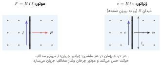
- چرا ژنراتوری که جریان میدهد سختتر میچرخد؟
- اگر سرعتِ روتور نصف شود، ولتاژِ هر هادی در میدانِ ثابت چه میشود؟
- علامتِ منفیِ قانونِ لنز چه معنای فیزیکی دارد؟
- نیروی هادیِ 2 mی با 200 A در 1.2 T چیست؟
- چرا یک هادی بهتنهایی ولتاژِ کار نمیسازد؟
8.2.3 مدارِ مغناطیسی و فاصلهٔ هوایی
قیاس با مدارِ الکتریکی. شار در مسیرِ بستهای از آهن و هوا جریان مییابد؛ «نیروی محرکهٔ مغناطیسی» آمپر-دورِ سیمپیچ (\(NI\)) است و «مقاومتِ مغناطیسی» یا رلوکتانس هر بخشِ مسیر:
\[ \mathcal{R} = \frac{\ell}{\mu_0\,\mu_r\,A}, \qquad N I = \Phi\,\sum \mathcal{R}_k = \sum H_k\,\ell_k, \qquad L = \frac{N^2}{\sum \mathcal{R}_k} \tag{8.2}\]
نفوذپذیریِ نسبیِ آهن، \(\mu_r\)، هزاران است و هوا یک؛ پس چند میلیمتر هوا رلوکتانسی بیش از یک متر آهن دارد. هر ماشینِ گردان فاصلهٔ هوایی دارد (روتور باید آزاد بچرخد)، و بیشترِ آمپر-دورِ مغناطیسکننده صرفِ همین فاصله میشود.
اشباع. \(\mu_r\) ثابت نیست: با افزایشِ \(B\) (در فولادهای الکتریکی بالای حدودِ 1.5 تا 1.7 T) آهن اشباع میشود و \(\mu_r\) بهسرعت میافتد. طراح چگالیِ شار را جایی نگه میدارد که آهن هنوز «ارزان» است. همین اشباع جریانِ هجومیِ ترانسفورماتورها (فصلِ ۷) و رفتارِ غیرخطیِ ماشین در ولتاژِ بالا را میسازد.
مثال 8.2 (سهمِ فاصلهٔ هوایی) پرسش. مسیرِ شاری با 1.2 m آهن (\(\mu_r = 2000\)) و دو فاصلهٔ هواییِ 3 mmی در 0.9 T چه آمپر-دوری میخواهد؟ اگر آهن اشباع شود و \(\mu_r\) به 500 یا 100 بیفتد چه؟ پیچهای ۲۰۰ دوری روی این مسیر با سطحِ مقطعِ 0.01 m² چه اندوکتانسی دارد؟
پاسخ.
flux path: 1.2 m of iron (mu_r 2000) and two 3 mm air gaps, B 0.9 T
air gap: H = B/mu0 = 716,197 A/m x 6 mm = 4,297 ampere-turns
iron: H = B/(mu0 mu_r) = 358 A/m x 1.2 m = 430 ampere-turns
the air gap takes 91 % of the magnetising effort
iron mu_r 2000 (saturating): total 4,727 ampere-turns
iron mu_r 500 (saturating): total 6,016 ampere-turns
iron mu_r 100 (saturating): total 12,892 ampere-turns
a large air gap is mechanically safe but costs magnetising current;
in an induction machine that current is reactive power from the gridرلوکتانسِ کل 525 211 A/Wb و \(L = 200^2/525\,211 = 76.2\ \text{mH}\) (سطرِ E03).
تفسیر. نود و یک درصدِ تلاشِ مغناطیسکننده صرفِ شش میلیمتر هوا میشود. در ماشینِ القایی همین جریانِ مغناطیسکننده از شبکه گرفته میشود و ضریبِ توان را پایین میآورد (بخش 8.2.9)؛ پس فاصلهٔ هواییِ ماشینِ القایی تا حدِ ممکن کوچک است (کسری از میلیمتر تا چند میلیمتر) و دقتِ ساخت و هممحوری مهم میشود (بخش 8.4.4). با اشباع، آمپر-دورِ لازم تقریباً سه برابر میشود: جریانِ مغناطیسکننده تیز بالا میرود.
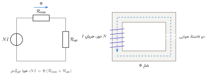
- رلوکتانسِ 1 mm هوا با سطحِ 0.01 m² چند برابرِ 1 m آهن با \(\mu_r = 5000\) است؟
- اگر فاصلهٔ هوایی دو برابر شود، اندوکتانس چه میشود (با آهنِ ایدئال)؟
- چرا طراح چگالیِ شار را زیرِ حدِ اشباع نگه میدارد؟
- چرا فاصلهٔ هواییِ ماشینِ القایی از ماشینِ آهنربای دائم کوچکتر است؟
8.2.4 میدانِ گردان و سرعتِ همگام
ایده. سه سیمپیچ که در محیطِ استاتور \(120^\circ\)ِ الکتریکی از هم جابهجا شدهاند و سه جریانِ سهفاز با \(120^\circ\) اختلافِ فاز دارند، با هم یک میدانِ مغناطیسیِ با دامنهٔ ثابت میسازند که میچرخد (شکل 8.3). این شگفتترین پیامدِ سهفاز است (فصلِ ۷، بخش 7.3.1): بیهیچ قطعهٔ متحرکی، میدانی گردان. نیروی محرکهٔ مغناطیسیِ هر فاز در فضا سینوسی و در زمان سینوسی است:
\[ \begin{aligned} \mathcal{F}(\theta, t) &= \mathcal{F}_\text{m}\cos\omega t\cos\theta + \mathcal{F}_\text{m}\cos(\omega t - 120^\circ)\cos(\theta - 120^\circ) \\ &\quad + \mathcal{F}_\text{m}\cos(\omega t + 120^\circ)\cos(\theta + 120^\circ) \\ &= \tfrac32\,\mathcal{F}_\text{m}\cos(\theta - \omega t) \end{aligned} \tag{8.3}\]
موجی که با سرعتِ \(\omega\) (برای ماشینِ دوقطبی) در فضا جلو میرود. ماشینی با \(p\) قطب در هر دورِ الکتریکی فقط \(2/p\) دورِ مکانیکی میچرخد، پس سرعتِ همگام:
\[ n_\text{s} = \frac{120\,f}{p}\ \ \text{rpm} \tag{8.4}\]
مثال 8.3 (قطبها، سرعت و بسامد) پرسش. سرعتِ همگام را برای ۲ تا ۱۲۰ قطب در 50 Hz بیابید. ژنراتورِ ۶قطبیِ A-111 در 1155 rpm و یک ماشینِ بیگیربکسِ ۱۲۰قطبی در 10.5 rpm چه بسامدی میسازند؟
پاسخ.
synchronous speed n_s = 120 f / p:
2 poles at 50 Hz: 3000.0 rpm
4 poles at 50 Hz: 1500.0 rpm
6 poles at 50 Hz: 1000.0 rpm
8 poles at 50 Hz: 750.0 rpm
48 poles at 50 Hz: 125.0 rpm
120 poles at 50 Hz: 50.0 rpm
geared generator (A-111): 6 poles at 1155 rpm -> 57.75 Hz
direct drive at 10.5 rpm with 120 poles -> 10.50 Hz
with a full converter the machine frequency need not be 50 Hzموتورِ ۴قطبی در 60 Hz 1800 rpm میچرخد (سطرِ E04).
تفسیر. ژنراتورِ نیروگاه 57.75 Hz میسازد، نه 50 Hz، و ماشینِ بیگیربکس 10.5 Hz: هیچکدام مستقیم به شبکه وصل نمیشوند و مبدّل بسامد را به 50 Hz میبرد (بخش 8.2.14). برای اتصالِ مستقیم با 10.5 rpm به 571 قطب نیاز بود (فصلِ ۴، مثال 4.27).
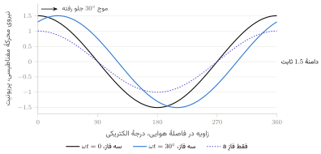
- سرعتِ همگامِ ماشینِ ۱۰قطبی در 50 Hz؟
- چرا مجموعِ سه میدانِ نوسانی یک میدانِ گردان با دامنهٔ ثابت میسازد؟
- با جابهجاییِ دو فاز، جهتِ چرخشِ میدان چه میشود؟ (فصلِ ۷، بخش 7.3.2.)
- ژنراتورِ ۶قطبی در 1000 rpm چه بسامدی دارد؟
8.2.5 معادلهٔ نیروی محرکه و ضریبِ سیمپیچ
ساختنِ معادله. شارِ هر قطب، \(\Phi\)، با بسامدِ \(f\) از هر دورِ سیمپیچ میگذرد و برمیگردد. با شارِ سینوسی، ولتاژِ مؤثرِ هر دور \(2\pi f \Phi/\sqrt2 = 4.44 f \Phi\) است. سیمپیچی با \(N\) دورِ سری در هر فاز، که دورهایش در شیارهای پخششده قرار دارند و پس با کمی اختلافِ فاز جمع میشوند، ضریبِ سیمپیچ \(k_w\) (کمی کمتر از یک) دارد:
\[ E = 4.44\,f\,N\,\Phi\,k_w \tag{8.5}\]
شارِ هر قطب از چگالیِ شار در فاصلهٔ هوایی و سطحِ قطب میآید: با توزیعِ سینوسی با بیشینهٔ \(B_1\)، میانگین \(2B_1/\pi\) و \(\Phi = (2/\pi)\,B_1\,\pi D L/p\).
مثال 8.4 (چند دور در ژنراتورِ 690 V؟) پرسش. برای ژنراتورِ A-111 (\(D = 0.8\ \text{m}\)، \(L = 1.1\ \text{m}\)، ۶ قطب، \(B_1 = 0.9\ \text{T}\)، 57.75 Hz)، شارِ هر قطب و \(N k_w\) لازم برای ولتاژِ فازِ \(690/\sqrt3\) را بیابید.
پاسخ.
geared generator (A-111): D 0.8 m, L 1.1 m, 6 poles, B1 peak 0.9 T, f 57.75 Hz
pole area pi D L / p = 0.4608 m2; flux per pole (2/pi) B1 A = 0.2640 Wb
phase EMF 690/sqrt3 = 398.4 V -> N k_w = E / (4.44 f Phi) = 5.89 turns
a few series turns per phase: large low-voltage machines use few
turns of heavy conductors in several parallel pathsبا ۱۰۰ دور، شارِ 0.01 Wb، 50 Hz و \(k_w = 0.93\)، ولتاژ 206 V است (سطرِ E05).
تفسیر. فقط حدودِ شش دورِ سری در هر فاز: ماشینهای بزرگِ ولتاژپایین دورهای کم با هادیهای بسیار ضخیم و چند مسیرِ موازی دارند تا هزاران آمپر را ببرند. ماشینهای ولتاژِ متوسط (چند کیلوولت) دورهای بیشتر و جریانِ کمتری دارند؛ این یکی از انتخابهای طراحی است که مبدّل و کابلکشیِ توربین را هم تغییر میدهد (بخش 8.5.1).
- اگر بسامد دو برابر شود و شار ثابت بماند، ولتاژ چه میشود؟
- چرا \(k_w\) کمتر از یک است؟ (بخش 8.3.3.)
- برای ولتاژِ دو برابر با همان ماشین، دورها چه باید بشوند و جریانِ هر هادی چه میشود؟
- چرا ماشینِ آهنربای دائم با کاهشِ سرعت ولتاژِ کمتری میسازد؟
8.2.6 ماشینِ همگام
شهود. در ماشینِ همگام، روتور خودش یک آهنربا (دائم، یا الکتریکی با سیمپیچِ میدان و جریانِ مستقیم) است و دقیقاً با میدانِ گردانِ استاتور میچرخد. دو آهنربای گردان، یکی روی روتور و دیگری ساختهٔ جریانهای استاتور، مانندِ دو آهنربا که با کشِ نامرئی به هم بسته شدهاند، همگام میمانند؛ هرچه گشتاور بیشتر، «کش» بیشتر کشیده میشود و زاویهٔ میانشان، زاویهٔ بار \(\delta\)، بزرگتر.
مدارِ معادل. هر فازِ ماشینِ همگام با روتورِ استوانهای را میتوان با یک نیروی محرکهٔ داخلی \(\mathbf{E}\) (ساختهٔ شارِ روتور، معادلهٔ 8.5) پشتِ راکتانسِ همگام \(X_\text{s}\) مدل کرد (مقاومتِ سیمپیچ کوچک است). با قراردادِ مولد:
\[ \mathbf{E} = \mathbf{V} + (R_a + jX_\text{s})\,\mathbf{I} \tag{8.6}\]
\(X_\text{s}\) هم نشتیِ سیمپیچ را دارد و هم اثرِ واکنشِ آرمیچر: میدانی که جریانِ استاتور خودش میسازد. با \(R_a \approx 0\)، توانِ اکتیو و راکتیوِ هر فاز:
\[ P = \frac{E\,V}{X_\text{s}}\sin\delta, \qquad Q = \frac{E\,V\cos\delta - V^2}{X_\text{s}} \tag{8.7}\]
(توانِ سهفاز سه برابر). سه پیام: (۱) توانِ اکتیو با زاویه تنظیم میشود (یعنی با گشتاورِ محرک)؛ (۲) توانِ راکتیو با اندازهٔ \(E\)، یعنی با تحریک؛ و (۳) بیشینهٔ توان در \(\delta = 90^\circ\) است و فراتر از آن ماشین همگامی را از دست میدهد.
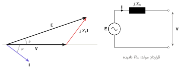
مثال 8.5 (مولدِ پشتیبانِ 200 kVA) پرسش. مولدِ پشتیبانِ 200 kVA و 400 V راکتانسِ همگامِ 2.5 pu دارد (A-113، فرضی). نیروی محرکهٔ داخلی و زاویهٔ بار را در جریانِ نامی با ضریبِ توانِ 0.8 پسفاز، یک و 0.9 پیشفاز بیابید. اگر \(E = 2.0\ \text{pu}\) باشد، بیشینهٔ توانِ اکتیو چیست؟
پاسخ.
backup generator 200 kVA, 400 V, x_d 2.5 pu (A-113):
Z_base 0.800 ohm, X_s 2.00 ohm, I_r 288.7 A
rated, pf 0.8 lagging E 739 V = 3.20 pu, delta 38.7
rated, pf 1 E 622 V = 2.69 pu, delta 68.2
rated, pf 0.9 leading E 520 V = 2.25 pu, delta 92.3 > 90: impossible
P = 3 E V sin(delta) / X_s; with E 2.0 pu the maximum (delta 90 deg) is 160 kW
more excitation (E) -> more reactive power delivered; less -> absorbed
a weakly excited machine near delta 90 deg loses synchronismبا \(E = 1.5\)، \(V = 1\)، \(X_\text{s} = 1.2\) (پریونیت) و \(\delta = 30^\circ\): \(P = 0.625\) و \(Q = 0.249\) پریونیت (سطرِ E06).
تفسیر. برای دادنِ توانِ راکتیو (پسفاز، بارهای موتوری) ماشین پرتحریک است: \(E\) بیش از سه برابرِ ولتاژ. در ضریبِ توانِ پیشفاز، یعنی گرفتنِ توانِ راکتیو، تحریک کم و زاویه بزرگ میشود و در 0.9 پیشفاز از \(90^\circ\) میگذرد: کارِ پایدار در این نقطه ناممکن است. پس مولدِ کوچک با راکتانسِ بزرگ نمیتواند بارِ خازنیِ زیادی (مثلاً کابلهای بلندِ بیبار یا صافیهای خازنی) را تغذیه کند؛ این یکی از قیدهای طراحیِ تغذیهٔ اضطراری است (فصلِ ۲۳). محدودیت: \(X_\text{s}\)ِ اشباعنشده؛ در عمل اشباع آن را کمی کم میکند.
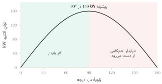
منحنیِ V. اگر توانِ اکتیو ثابت بماند و تحریک تغییر کند، جریانِ استاتور در یک نقطه کمینه است (ضریبِ توانِ یک) و با کم یا زیاد کردنِ تحریک بالا میرود: شکلی شبیهِ حرفِ V (شکل 8.6). سمتِ چپِ کمینه ماشین کمتحریک است و توانِ راکتیو میگیرد؛ سمتِ راست پرتحریک است و توانِ راکتیو میدهد. نیروگاههای همگامِ بزرگ با همین تحریک ولتاژِ شبکه را تنظیم میکنند.
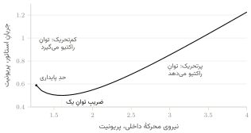
نمودارِ قابلیتِ ماشینِ همگام. مانندِ اینورتر (بخش 7.4.5)، ماشینِ همگام هم محدودهای در صفحهٔ \(P\)–\(Q\) دارد، اما با چهار مرز: گرمای استاتور (دایرهٔ جریانِ نامی)، گرمای سیمپیچِ میدان (بیشینهٔ \(E\)، که دادنِ توانِ راکتیو را در ضریبِ توانِ پایین محدود میکند)، توانِ محرک (بیشینهٔ \(P\))، و پایداری و گرمای انتهای هسته در کارِ کمتحریک (که گرفتنِ توانِ راکتیو را محدود میکند). سازنده این نمودار را میدهد.
روتورِ قطببرجسته. در ماشینهای کندگرد با قطبهای بیرونزده، راکتانس در راستای قطب (\(X_d\)) و میانِ قطبها (\(X_q\)) متفاوت است و توان یک جملهٔ اضافه با \(\sin 2\delta\) دارد. این تفاوت در مولدهای آبی و برخی ژنراتورهای بیگیربکس مهم است؛ اصلِ حرف تغییر نمیکند.
- چرا توانِ اکتیو با زاویه و توانِ راکتیو با تحریک تنظیم میشود؟
- با \(E = V = 1\) و \(X_\text{s} = 1\) پریونیت، بیشینهٔ توانِ اکتیو چیست؟
- ماشینِ کمتحریک توانِ راکتیو میدهد یا میگیرد؟
- چرا کارِ پیشفاز با تحریکِ کم به حدِ پایداری نزدیک میشود؟
- چهار مرزِ نمودارِ قابلیتِ ماشینِ همگام را بنویسید.
- در منحنیِ V، کمینهٔ جریان در کدام ضریبِ توان است؟
8.2.7 همگامسازی با شبکه
چهار شرط. ماشینِ همگامی که مستقیم به شبکه وصل میشود، لحظهٔ بستنِ کلید باید با شبکه همولتاژ، همبسامد، همفاز و همتوالی باشد. اگر نباشد، ولتاژِ اختلاف دو سرِ کلید جریانِ بزرگی میسازد که به سیمپیچها، شفت و کوپلینگ ضربهٔ مکانیکی میزند. توالیِ نادرست (فصلِ ۷، بخش 7.3.2) بدترین حالت است: ماشین هرگز همگام نمیشود.
همگامساز. دستگاهِ همگامسازِ خودکار اختلافِ ولتاژ، بسامد و زاویه را میسنجد، سرعت و تحریکِ ماشین را تنظیم میکند و کلید را در لحظهٔ مناسب، با پیشبینیِ زمانِ بسته شدنِ کلید، فرمان میدهد. یک رلهٔ وارسیِ همگامی مستقل از بستنِ نادرست جلوگیری میکند. حدهای مجاز را سازندهٔ ماشین و طراحِ حفاظت تعیین میکنند (فصلِ ۲۶).
مثال 8.6 (ضربان و خطای زاویه) پرسش. بسامدِ ماشین 0.1 Hz با شبکه فاصله دارد. اختلافِ زاویه هر چند ثانیه یک دور کامل میشود؟ اگر کلید با \(10^\circ\) خطای زاویه (و ولتاژِ برابر) بسته شود، اختلافِ ولتاژِ دو سرِ کلید چند پریونیت است؟
پاسخ. دورهٔ ضربان \(1/0.1 = 10\ \text{s}\). اختلافِ ولتاژِ دو فازورِ هماندازه با زاویهٔ \(\theta\)، \(2\sin(\theta/2) = 2\sin 5^\circ = 0.174\) پریونیت است (سطرِ E07).
تفسیر. حتی ۱۰ درجه یعنی هفده درصد ولتاژِ نامی دو سرِ کلید؛ با امپدانسِ گذرای ماشین و شبکه، جریانی چند برابرِ نامی و گشتاوری ناگهانی. برای همین همگامسازها فقط بازهٔ کوچکی از زاویه را میپذیرند و بسامد را آهسته به شبکه نزدیک میکنند. توربینهای نیروگاهِ P این مسئله را ندارند: مبدّل خودش را با شبکه همگام میکند (فصلِ ۹)؛ اما مولدِ پشتیبان اگر قرار باشد موازی با شبکه کار کند، به همگامساز نیاز دارد.
- چهار شرطِ همگامسازی را بنویسید.
- چرا توالیِ نادرست با هیچ تنظیمی جبران نمیشود؟
- اختلافِ ولتاژِ دو سرِ کلید با \(30^\circ\) خطا چند پریونیت است؟
- چرا همگامساز زمانِ بسته شدنِ کلید را پیشبینی میکند؟
8.2.8 تحریک و تنظیمِ ولتاژ
سه راهِ ساختنِ میدانِ روتور. (۱) سیمپیچِ میدان با حلقه و جاروبک: جریانِ مستقیم از بیرون، کنترلپذیر، اما جاروبکها نگهداری میخواهند. (۲) تحریکِ بیجاروبک: یک ژنراتورِ کوچکِ معکوس روی همان شفت و یکسوکنندهای گردان جریانِ میدان را میسازند؛ رایج در مولدهای پشتیبان و ماشینهای صنعتی. (۳) آهنربای دائم: بیجریانِ میدان و بیتلفاتِ میدان، فشرده و پربازده؛ اما شار قابلِ تنظیم نیست. در ژنراتورِ آهنربای دائمِ توربین، ولتاژ با سرعت عوض میشود و توانِ راکتیو را مبدّل میسازد، نه ماشین.
تنظیمکنندهٔ خودکارِ ولتاژ. در ماشینهای با سیمپیچِ میدان، تنظیمکنندهٔ ولتاژ (به انگلیسی automatic voltage regulator، AVR) ولتاژِ پایانه را میسنجد و جریانِ میدان را تنظیم میکند؛ هنگامِ راهاندازیِ یک موتورِ بزرگ، افتِ ولتاژ را ظرفِ کسری از ثانیه تا چند ثانیه جبران میکند (مثال 8.63). محدودکنندههای بیشتحریک و کمتحریک ماشین را در نمودارِ قابلیتش نگه میدارند.
- مزیت و عیبِ آهنربای دائم نسبت به سیمپیچِ میدان چیست؟
- در ژنراتورِ آهنربای دائمِ توربین، توانِ راکتیوِ شبکه را چه چیزی تأمین میکند؟
- تحریکِ بیجاروبک چگونه بیحلقه جریانِ مستقیم به روتور میرساند؟
- تنظیمکنندهٔ ولتاژ هنگامِ افتِ ولتاژ چه میکند؟
8.2.9 ماشینِ القایی
شهود. روتورِ ماشینِ القایی آهنربا ندارد؛ میلههای مس یا آلومینیوم دارد که دو سرشان با حلقههایی اتصالِ کوتاه شدهاند (قفسهٔ سنجابی). میدانِ گردانِ استاتور از میلهها میگذرد، در آنها ولتاژ و جریان القا میکند و همین جریان در میدان نیرو حس میکند (معادلهٔ 8.1): روتور به دنبالِ میدان کشیده میشود. اما اگر روتور دقیقاً با سرعتِ همگام بچرخد، دیگر میدانی از میلهها نمیگذرد، جریانی نیست و گشتاوری نیست. پس روتور همیشه کمی عقبتر میچرخد. این عقبماندگیِ نسبی لغزش است:
\[ s = \frac{n_\text{s} - n}{n_\text{s}} \tag{8.8}\]
لغزشِ مثبت یعنی موتور (روتور کندتر از میدان)؛ اگر محرکی روتور را تندتر از میدان بچرخاند (\(s < 0\))، ماشین ژنراتور میشود. بسامدِ جریانهای روتور \(s f\) است: در کارِ عادی فقط چند هرتز.
مدارِ معادل. هر فاز را مانندِ یک ترانسفورماتور با ثانویهٔ اتصالکوتاه میبینیم که مقاومتِ ثانویهاش با لغزش تغییر میکند (شکل 8.7): مقاومت و نشتیِ استاتور (\(R_1\)، \(X_1\))، شاخهٔ مغناطیسکننده (\(X_m\)) و روتورِ منتقلشده به استاتور (\(X_2\) و \(R_2/s\)). توانی که از فاصلهٔ هوایی میگذرد، \(P_\text{ag} = 3 I_2^2 R_2/s\)، دو بخش میشود:
\[ P_\text{cu2} = s\,P_\text{ag}, \qquad P_\text{mech} = (1 - s)\,P_\text{ag}, \qquad T = \frac{P_\text{ag}}{\omega_\text{s}} \tag{8.9}\]
یعنی تلفاتِ مسیِ روتور با لغزش متناسب است: ماشینی با لغزشِ ۲ درصد، ۲ درصدِ توانِ فاصلهٔ هوایی را در روتور گرما میکند.
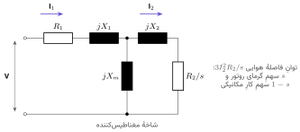
مثال 8.7 (موتورِ 30 kWِ تهویهٔ اتاقِ باتری) پرسش. موتورِ کمپرسورِ تهویهٔ اتاقِ باتری (S1) یک ماشینِ القاییِ ۴قطبیِ 30 kW در 400 V با مدارِ معادلِ A-114 (فرضی) است. نقطهٔ کارِ نامی، راهاندازی و گشتاورِ بیشینه را بیابید. اگر همین ماشین با لغزشِ منفیِ هماندازه بچرخد چه؟
پاسخ.
30 kW 4-pole motor at 400 V (A-114), per-phase circuit at 230 V:
rated: slip 1.65 % (1475 rpm), current 53.8 A, pf 0.853
torque 197 N m, efficiency 0.947, rotor copper s P_ag 0.51 kW
starting (s = 1): 335 A = 6.2 x rated, pf 0.23, torque 150 N m
pull-out torque 623 N m = 3.2 x rated at slip 11.2 %
as a generator at slip -1.65 %: delivers 32.4 kW, absorbs 20.8 kvar
an induction generator always needs reactive power to magnetiseتفسیر. در کارِ نامی لغزش 1.65 % و ضریبِ توان 0.853 است: موتورِ القایی همیشه پسفاز است، چون جریانِ مغناطیسکنندهاش را از شبکه میگیرد (بخش 8.2.3). در راهاندازی جریان 6.2 برابر و ضریبِ توان فقط 0.23 است: جریانی بزرگ و تقریباً سراسر راکتیو، که افتِ ولتاژِ شدیدی میسازد (بخش 8.2.10). گشتاورِ بیشینه 3.2 برابرِ نامی است و حاشیهٔ اضافهبار را میدهد. گشتاورِ راهاندازیِ این مدلِ ساده (0.76 برابرِ نامی) کمتر از موتورهای واقعی است: روتورهای «میلهعمیق» یا «دوقفسه» در راهاندازی مقاومتِ روتورِ بیشتری نشان میدهند و گشتاورِ راهاندازی را بالا میبرند. در لغزشِ منفی ماشین 32.4 kW میدهد اما همزمان 20.8 kvar میگیرد: ژنراتورِ القایی بیمنبعِ توانِ راکتیو کار نمیکند.
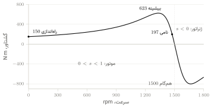
برگهٔ دادهٔ موتور. پلاکِ موتور توانِ محور (کیلووات)، ولتاژ، جریان، ضریبِ توان، بازده، سرعت و نوعِ کار را میدهد؛ برگهٔ داده، جریان و گشتاورِ راهاندازی، گشتاورِ بیشینه و کلاسِ بازده را هم. موتورهای کوچک و متوسطِ صنعتی در کلاسهای بازدهٔ استاندارد عرضه میشوند و مقرراتِ بسیاری از کشورها حداقلی برای آن تعیین میکنند؛ آن قاعدهها کشوریاند (فصلهای ۵۵ تا ۵۷). جریانِ ورودی را از توانِ محور، بازده و ضریبِ توان حساب کنید، نه از توانِ محور به تنهایی (فصلِ ۷، بخش 7.4.4).
- لغزشِ موتورِ ۴قطبی در 1470 rpm و بسامدِ جریانِ روتورِ آن چیست؟
- اگر توانِ فاصلهٔ هوایی 31 kW و لغزش 2 % باشد، تلفاتِ مسیِ روتور و توانِ مکانیکی چیست؟
- چرا ماشینِ القایی در سرعتِ همگام گشتاوری ندارد؟
- چرا ضریبِ توانِ موتور در راهاندازی بسیار پایین است؟
- در شکل 8.8، ناحیهٔ ژنراتوری کجاست؟
- گشتاورِ بیشینه در چه لغزشی رخ میدهد و چه معنایی برای اضافهبار دارد؟
8.2.10 راهاندازیِ موتور و افتِ ولتاژ
مسئله. موتورِ القایی در لحظهٔ اتصال مانندِ ترانسفورماتوری با ثانویهٔ اتصالکوتاه است: امپدانسش کوچک و جریانش پنج تا هشت برابرِ نامی، با ضریبِ توانِ پایین. این جریان از امپدانسِ منبع (ترانسفورماتور، کابل یا ژنراتور) میگذرد و ولتاژِ همهٔ بارهای همان تابلو را پایین میآورد (فصلِ ۷، بخش 7.4.11). روشهای راهاندازی:
| روش | جریانِ راهاندازی | گشتاورِ راهاندازی | یادداشت |
|---|---|---|---|
| مستقیم (DOL) | ۵ تا ۸ برابر | کامل | ساده و ارزان؛ بیشترین افتِ ولتاژ |
| ستاره–مثلث | یکسوم | یکسوم | فقط برای بارهای سبک در راهاندازی؛ پرشِ جریان هنگامِ تغییر |
| راهاندازِ نرم | قابلِ تنظیم (مثلاً ۳ برابر) | کمتر | ولتاژ را آهسته بالا میبرد؛ هارمونیک در زمانِ راهاندازی |
| مبدّلِ بسامد | حدودِ نامی | کامل | بهترین کنترل؛ سرعتِ متغیر؛ هارمونیک و هزینه |
مثال 8.8 (راهاندازیِ موتورِ 30 kW روی تابلوی کمکی) پرسش. موتورِ مثال 8.7 مستقیم روی تابلوی کمکیِ نیروگاه (ترانسفورماتورِ 250 kVA و 6 % و کابلِ مثال 7.29) راه میافتد. افتِ ولتاژ در پایانهٔ موتور چقدر است؟ با ستاره–مثلث و با راهاندازِ نرم چه؟
پاسخ.
direct-on-line start of the 30 kW motor on the auxiliary board:
locked-rotor impedance 0.688 ohm at 76.5 deg
source: transformer 250 kVA 6 % + feeder = 10.7 + j40.8 mohm
motor terminal voltage during start 216.7 V = 94.2 % (dip 5.8 %)
star-delta start (1/3 current): dip 2.0 %
soft starter at 3 x rated: dip 2.9 %
a frequency converter starts with about rated current and no dip,
at the price of harmonics (chapter 7) and costتفسیر. راهاندازیِ مستقیم ولتاژ را 5.8 % پایین میآورد، و چون بیشترِ افت در ترانسفورماتور است، همهٔ بارهای تابلو (روشنایی، شارژرها، سامانهٔ پایش) همان افت را حس میکنند. برای یک موتورِ 30 kW روی 250 kVA این معمولاً پذیرفتنی است، اما همین موتور روی مولدِ پشتیبان افتی دو تا سه برابر میسازد (مثال 8.63). حدِ افتِ مجاز را طراحِ تغذیه با حساسیتِ بارها و قاعدههای پروژه تعیین میکند. محدودیت: بارِ موجودِ تابلو و تغییرِ امپدانسِ موتور با شتاب گرفتن در نظر گرفته نشدهاند.
- چرا جریانِ راهاندازی تقریباً سراسر راکتیو است؟
- اگر امپدانسِ منبع نصف شود، افتِ ولتاژِ راهاندازی تقریباً چه میشود؟
- چرا راهاندازیِ ستاره–مثلث برای پمپی که با بارِ کامل راه میافتد مناسب نیست؟
- مزیت و هزینهٔ مبدّلِ بسامد برای یک فنِ بزرگ را بنویسید.
8.2.11 ژنراتورِ القایی و توربینهای سرعتثابت
نخستین نسلِ توربینها. توربینهای بادیِ دهههای گذشته یک ژنراتورِ القاییِ قفسهای را مستقیم به شبکه میبستند. ماشین با لغزشِ منفیِ کوچک کار میکرد، پس سرعتِ روتور تقریباً ثابت بود («سرعتثابت»). مزیتش سادگی و استحکام بود؛ عیبهایش: (۱) توانِ راکتیو همیشه از شبکه گرفته میشد و بانکِ خازنیِ پلهای لازم بود؛ (۲) تندبادها مستقیم به گشتاور و توانِ خروجی منتقل میشدند، چون سرعت نمیتوانست جذبشان کند؛ (۳) نسبتِ تندیِ نوک فقط در یک سرعتِ باد بهینه بود (بخش 8.2.12)؛ (۴) هنگامِ افتِ ولتاژِ شبکه، ماشین مغناطیسزدایی میشد و پس از رفعِ خطا توانِ راکتیوِ زیادی میکشید و بازگشتِ ولتاژ را کند میکرد.
مثال 8.9 (خازن برای ژنراتورِ القایی) پرسش. ژنراتورِ القاییِ مثال 8.7 در لغزشِ منفی 32.4 kW میدهد و 20.8 kvar میگیرد. خازنِ موازیِ 20.8 kvar ضریبِ توان را در این نقطه یک میکند؛ در بارِ کمتر چه میشود؟
پاسخ. خازن فقط در همان نقطهٔ کار ضریبِ توانِ یک میدهد (سطرِ E08). توانِ راکتیوِ مصرفیِ ماشین با بار تغییر میکند (بخشِ مغناطیسکننده تقریباً ثابت و بخشِ نشتی با مجذورِ جریان)، پس در بارِ کم خازنِ ثابت توانِ راکتیوِ اضافه به شبکه میدهد. بانکهای پلهای یا جبرانکنندههای پیوسته این را حل میکنند (فصلِ ۷، بخش 7.4.3). خطرِ خودتحریکی: ژنراتورِ القاییِ جداشده از شبکه با خازنِ بزرگ ممکن است خودش را تحریک کند و ولتاژِ کنترلنشده بسازد؛ حفاظتِ جداسازی و اندازهٔ خازن این را مهار میکنند.
- چهار عیبِ توربینِ سرعتثابت با ژنراتورِ القایی را بنویسید.
- چرا ژنراتورِ القایی بدونِ شبکه یا خازن ولتاژ نمیسازد؟
- خودتحریکی چیست و چرا خطرناک است؟
8.2.12 چرا سرعتِ متغیر؟
دلیلِ آیرودینامیکی. روتورِ توربین بیشترین توان را در یک نسبتِ تندیِ نوکِ مشخص، \(\lambda = \omega R/v\)، میگیرد (فصلهای ۴ و ۱۱). اگر سرعتِ باد عوض شود و روتور با همان سرعت بچرخد، \(\lambda\) از بهینه دور میشود و ضریبِ توان میافتد. پس برای بیشترین انرژی، سرعتِ روتور باید با سرعتِ باد تغییر کند: \(\omega = \lambda_\text{opt}\,v/R\). دلیلهای دیگر: سرعتِ متغیر تندبادها را مانندِ یک چرخطیار در انرژیِ جنبشیِ روتور ذخیره و بارهای مکانیکی را نرم میکند، و در بادِ کم صدا را کم.
مثال 8.10 (سرعتِ روتورِ بهینه) پرسش. با \(\lambda_\text{opt} = 8.25\) و شعاعِ 75 m (فصلِ ۴)، سرعتِ روتورِ بهینه در بادِ 7 و 10 m/s چیست؟
پاسخ. \(\omega = 8.25 \times 7/75 = 0.770\ \text{rad/s}\) یعنی 7.35 rpm؛ در 10 m/s، 10.50 rpm (سطرهای E09). تفسیر: در بازهٔ بادِ کار، سرعتِ روتور تقریباً دو برابر تغییر میکند؛ ژنراتورِ پشتِ گیربکس هم همینقدر. ماشینی که مستقیم به شبکهٔ 50 Hz بسته است این آزادی را ندارد؛ یا باید بخشی از توان (ماشینِ دوسوتغذیه) یا همهٔ آن (مبدّلِ کامل) از مبدّل بگذرد.
8.2.13 ژنراتورِ القاییِ دوسوتغذیه
ساختار. ژنراتورِ القاییِ دوسوتغذیه (به انگلیسی doubly-fed induction generator، DFIG) روتورِ سیمپیچیشده با حلقه و جاروبک دارد. استاتور مستقیم به شبکه وصل است و روتور از راهِ یک مبدّلِ پشتبهپشت (دو مبدّل با یک پیوندِ DC، فصلِ ۹). مبدّل به روتور جریانی با بسامدِ لغزش، \(s f\)، تزریق میکند؛ با تنظیمِ این بسامد، روتور میتواند کندتر یا تندتر از سرعتِ همگام بچرخد و ماشین همچنان 50 Hz به شبکه بدهد. توانِ لغزش، تقریباً \(s\,P\)، از مبدّل میگذرد:
\[ P_\text{stator} \approx \frac{P_\text{mech}}{1 - s}, \qquad P_\text{rotor} \approx -s\,P_\text{stator} = -\frac{s\,P_\text{mech}}{1 - s} \tag{8.10}\]
(تلفات نادیده). زیرِ سرعتِ همگام (\(s > 0\)) مبدّل به روتور توان میدهد؛ بالای آن (\(s < 0\)) روتور هم به شبکه توان میدهد و خروجیِ کل از توانِ استاتور بیشتر است.
مثال 8.11 (توانِ مبدّلِ روتور) پرسش. برای یک ماشینِ دوسوتغذیهٔ ۴قطبی (همگام در 1500 rpm) با توانِ محورِ متناسب با مکعبِ سرعت تا 5.32 MW در 1800 rpm، توانِ مبدّلِ روتور را در چند سرعت بیابید.
پاسخ.
DFIG, 4 poles (1500 rpm synchronous); shaft power follows speed
cubed (best tip-speed ratio) up to 5.32 MW at 1800 rpm:
1050 rpm: shaft 1.06 MW, slip +30.0 %, rotor -0.45 MW (+ = to grid)
1350 rpm: shaft 2.24 MW, slip +10.0 %, rotor -0.25 MW (+ = to grid)
1500 rpm: shaft 3.08 MW, slip +0.0 %, rotor +0.00 MW (+ = to grid)
1800 rpm: shaft 5.32 MW, slip -20.0 %, rotor +0.89 MW (+ = to grid)
1950 rpm: shaft 5.32 MW, slip -30.0 %, rotor +1.23 MW (+ = to grid)
speed range +-30 % needs a converter of about a quarter
of rating (0.3 / 1.3);
a full converter carries 100 % but frees the speed and the machineتفسیر. با بازهٔ سرعتِ \(\pm 30\,\%\)، بیشینهٔ توانِ مبدّل حدودِ 1.23 MW است (در 1950 rpm): حدودِ یکچهارمِ رده. همین مبدّلِ کوچکتر مزیتِ اقتصادیِ این معماری بود. بهایش: حلقه و جاروبک که نگهداری میخواهند، گیربکسِ سهمرحلهای، و رفتارِ دشوار در خطاهای شبکه: استاتور مستقیم به شبکه وصل است و افتِ ولتاژِ شبکه جریانهای بزرگی در روتور القا میکند که مبدّلِ کوچک باید از آن محافظت شود (با مدارِ «کروبار» یا مقاومتِ ترمز در پیوندِ DC).
8.2.14 ماشینهای با مبدّلِ کامل
ایده. همهٔ توانِ ژنراتور از یک مبدّلِ پشتبهپشت میگذرد. ماشین کاملاً از شبکه جدا است: بسامد و ولتاژش هرچه باشد، مبدّل 50 Hz تحویل میدهد. سه نوع ماشین با مبدّلِ کامل به کار میروند:
- همگامِ آهنربای دائم (PMSG): بیتلفاتِ میدان، فشرده و پربازده؛ وابسته به آهنربای خاکِ کمیاب (هزینه و زنجیرهٔ تأمین) و حساس به دما (بخش 8.3.5).
- همگامِ با تحریکِ الکتریکی (EESG): بیآهنربا، تحریکِ قابلِ تنظیم؛ سنگینتر و با تلفاتِ میدان.
- القاییِ قفسهای با مبدّلِ کامل: ساده و بیآهنربا؛ توانِ مغناطیسکننده را مبدّلِ سمتِ ماشین میدهد.
مزیتهای مشترک: بازهٔ سرعتِ کامل، رفتارِ خطای شبکه که تماماً با کنترلِ مبدّل تعیین میشود، و قابلیتِ توانِ راکتیوِ مستقل از ماشین (فصلِ ۷، بخش 7.4.5). بها: مبدّلی به اندازهٔ کلِ رده و تلفاتِ آن روی همهٔ توان.
مثال 8.12 (ولتاژ و بسامدِ ماشینِ آهنربای دائم با سرعت) پرسش. ژنراتورِ A-111 در 1155 rpm 690 V و 57.75 Hz میسازد. در 600 rpm و در 15 % اضافهسرعت چه؟
پاسخ. ولتاژ و بسامد با سرعت متناسباند: 358 V و 30 Hz در 600 rpm؛ 793 V در اضافهسرعت (سطرِ E10). تفسیر: مبدّلِ سمتِ ماشین باید هم ولتاژِ کمِ سرعتهای پایین را بپذیرد و هم ولتاژِ اضافهسرعت را؛ اگر کنترل از کار بیفتد و روتور تند شود، ولتاژِ آهنربا از حدِ پیوندِ DC میگذرد و قطعاتِ مبدّل را تهدید میکند. حفاظتِ اضافهسرعت و طراحیِ عایق و مبدّل برای این حالت هماهنگ میشوند (بخش 8.5.1).
8.2.15 چهار معماریِ رانه
مقایسه. گیربکس گشتاور را از روتورِ کندگرد به ژنراتورِ تندگرد منتقل میکند. ژنراتورِ تندگرد با همان توان، گشتاورِ کمتری دارد و اندازهٔ ماشین با گشتاور بالا میرود (بخش 8.4.2): حجمِ روتورِ لازم \(V_r = T/(2\sigma)\) است، که \(\sigma\) تنشِ برشیِ فاصلهٔ هوایی است (چند ده کیلوپاسکال). چهار معماریِ رایجِ توربینهای امروزی در شکل 8.9 و جدولِ زیر.
مثال 8.13 (گشتاور، حجم، بسامد و مبدّلِ چهار معماری) پرسش. برای توانِ محورِ 5.32 MW (A-047) و تنشِ برشیِ 40 kPa (A-112، فرضی)، گشتاور، حجمِ روتور، بسامدِ الکتریکی و اندازهٔ مبدّلِ چهار معماری را مقایسه کنید.
پاسخ.
5.32 MW shaft power (A-047); air-gap shear stress 40 kPa (A-112):
geared, high speed (1:110) 1155.0 rpm, T 44.0 kN m, V_r 0.55 m3
6 poles -> 57.75 Hz; converter 100 % of rating; gear stages 3
geared, medium speed (1:40) 420.0 rpm, T 121.0 kN m, V_r 1.51 m3
24 poles -> 84.00 Hz; converter 100 % of rating; gear stages 2
direct drive 10.5 rpm, T 4838.3 kN m, V_r 60.48 m3
120 poles -> 10.50 Hz; converter 100 % of rating; gear stages 0
DFIG (rated 1800 rpm) 1800.0 rpm, T 28.2 kN m, V_r 0.35 m3
4 poles -> 60.00 Hz; converter 30 % of rating; gear stages 3
rotor volume grows with torque: the direct-drive machine is about
110 times the volume of the geared one; the gearbox moves the torque
into steel gears instead of copper and magnetsتفسیر. گشتاورِ ماشینِ بیگیربکس 4.84 MN m است و حجمِ روتورش حدودِ ۱۱۰ برابرِ ماشینِ تندگرد: قطری چندمتری و صدها قطب. در عوض گیربکس حذف میشود، که در توربینهای بزرگ یکی از پرخرابیترین زیرمجموعههاست. ماشینِ «سرعتِ متوسط» با گیربکسِ دومرحلهای میانِ این دو است. ماشینِ دوسوتغذیه کوچکترین مبدّل را دارد. هیچ معماری از همه جهت برتر نیست؛ انتخاب یک مصالحهٔ مستند است (بخش 8.5.16). گشتاورِ ژنراتورِ A-111 44.0 kN m است (سطرِ E12).
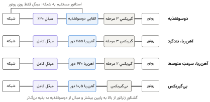
- چرا ماشینِ بیگیربکس بزرگتر است با آنکه همان توان را دارد؟
- اگر تنشِ برشی دو برابر شود، حجمِ روتور چه میشود؟
- چرا مبدّلِ ماشینِ دوسوتغذیه کوچکتر است؟ بهایش چیست؟
- سه نوعِ ماشینِ با مبدّلِ کامل را با یک مزیت و یک عیب نام ببرید.
- چرا ولتاژِ ماشینِ آهنربای دائم در اضافهسرعت خطرناک است؟
- گیربکس در کدام معماریها حذف یا کوچک میشود و چه چیزی جایش را میگیرد؟
8.2.16 رده، نوعِ کار، تلفات و بازده
رده. پلاکِ ماشین توانِ نامی (برای ژنراتور معمولاً به kVA یا MVA و ضریبِ توانِ نامی؛ برای موتور توانِ محور)، ولتاژ، جریان، سرعت، بسامد، کلاسِ گرماییِ عایق، روشِ خنککاری، درجهٔ حفاظتِ پوسته و نوعِ کار را میدهد. نوعِ کار میگوید ماشین برای کارِ پیوسته با بارِ ثابت ساخته شده یا برای چرخههای کوتاه، راهاندازیهای مکرر یا بارِ متغیر؛ تعریفهای رسمیِ اینها در استانداردِ رده و عملکردِ ماشینهای گردان آمده است (جعبهٔ استاندارد). ژنراتورِ توربین با بارِ همیشه متغیر کار میکند؛ رده و عمرش با چرخهٔ بارِ واقعی، نه با یک نقطهٔ نامی، سنجیده میشود (بخش 8.5.14).
جریان. ژنراتورِ 5.4 MVA در 690 V جریانِ 4518 A دارد (سطرِ E11): برای همین ماشینهای چندمگاواتی ولتاژپایین کابلهای موازیِ بسیار دارند و ولتاژِ متوسط (چند کیلوولت) گزینهای جدی است.
تلفات. تلفاتِ ماشین پنج دستهاند: مسیِ استاتور (\(I^2R\)، با مجذورِ بار)؛ هسته (پسماند و جریانهای گردابی، با شار و بسامد، تقریباً ثابت در بار)؛ روتور (مسِ روتور یا جریانهای گردابی در آهنرباها)؛ مکانیکی (اصطکاکِ یاتاقان، تهویه و فن، با سرعت)؛ و تلفاتِ اضافیِ بار (اثرهای پراکندهای که با بار بالا میروند). بازده:
\[ \eta = \frac{P_\text{out}}{P_\text{out} + P_\text{loss}}, \qquad P_\text{loss}(x) \approx P_0 + P_k\,x^2 \tag{8.11}\]
با \(x\) بار بر حسبِ پریونیت، \(P_0\) بخشِ ثابت و \(P_k\) بخشِ وابسته به بار. بیشینهٔ بازده جایی است که دو بخش برابر شوند.
مثال 8.14 (تلفات و بازدهٔ ژنراتورِ نیروگاه) پرسش. ژنراتورِ A-111 در ردهٔ 5.13 MW (خروجی به مبدّل) بازدهٔ 0.970 دارد. تلفاتِ نامی و تقسیمِ نوعیِ آن را بنویسید و بازده را در بارهای مختلف برای سه سهمِ تلفاتِ ثابت (بیست، سیوپنج و پنجاه درصدِ تلفاتِ نامی) بیابید.
پاسخ.
geared generator at rating: 5.13 MW out at efficiency 0.97: losses 158.7 kW
stator copper 40 % 63.5 kW
core (hysteresis, eddy) 25 % 39.7 kW
rotor and magnet 5 % 7.9 kW
friction, windage, fan 10 % 15.9 kW
stray load 20 % 31.7 kW
efficiency against load (fixed share of rated losses):
fixed 20 %: at 10/25/50/100 % load 0.940 0.970 0.976 0.970
fixed 35 %: at 10/25/50/100 % load 0.901 0.954 0.969 0.970
fixed 50 %: at 10/25/50/100 % load 0.865 0.938 0.963 0.970
fixed losses (core, friction) dominate at part loadتفسیر. 159 kW تلفات در ردهٔ نامی، یعنی گرمایی که سامانهٔ خنککاری باید ببرد (بخش 8.3.7). بازده در بارِ کامل برای هر سه فرض یکی است، اما در ده درصدِ بار از 0.94 تا 0.87 تفاوت دارد: ماشینی با تلفاتِ ثابتِ کمتر در بادهای ضعیف، که بخشِ زیادی از ساعتهای سالاند، انرژیِ بیشتری میدهد. شمارشِ سالانهٔ این اثر در مثال 8.60 است. وارسی: با سهمِ ثابتِ ۲۰ درصد، بیشینهٔ بازده جایی است که \(0.2 = 0.8\,x^2\)، یعنی \(x = 0.5\) (0.976، درست).
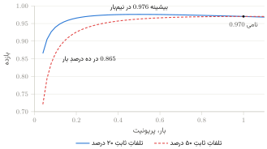
- پنج دستهٔ تلفاتِ ماشین و رفتارِ هر کدام با بار را بنویسید.
- ماشینی با 100 kW تلفاتِ ثابت و 200 kW تلفِ بار در ردهٔ نامی، در کدام بار بیشترین بازده را دارد؟
- چرا بازدهٔ نامی برای مقایسهٔ ژنراتورهای توربین کافی نیست؟
- جریانِ ژنراتورِ 3 MVA در 690 V و در 3.3 kV؟
8.2.17 پیامدهای ماشین برای شبکه
سه تفاوتِ ماشینِ همگام و واحدِ مبدّلدار.
- جریانِ خطا. ماشینِ همگام در لحظهٔ اتصالِ کوتاه جریانی چند برابرِ نامی میدهد که با راکتانسِ زیرگذرا (\(x_d''\)) تعیین و طیِ چند دوره تا گذرا (\(x_d'\)) و حالتِ پایدار (\(x_d\)) کم میشود. واحدِ مبدّلدار فقط جریانی کمی بیش از نامی میدهد که کنترلگرش تعیین میکند. حفاظتِ شبکهای که ماشینهای همگامِ کمی دارد باید این را در نظر بگیرد (فصلهای ۲۶ و ۲۸).
- لختی. انرژیِ جنبشیِ روترِ ماشینِ همگام خودبهخود، بیهیچ کنترلی، در تغییرِ بسامد با شبکه تبادل میشود. روتورِ توربینِ مبدّلدار همان انرژی را دارد (فصلِ ۴، مثال 4.3) اما مبدّل آن را از شبکه پنهان میکند، مگر کنترلگر دستور دهد (فصلهای ۹ و ۲۰).
- توانِ راکتیو. ماشینِ همگام با تحریک، ماشینِ القایی فقط مصرف، و واحدِ مبدّلدار در محدودهٔ نمودارِ قابلیتش.
مثال 8.15 (سهمِ جریانِ خطا و لختی) پرسش. سهمِ جریانِ خطای مولدِ پشتیبان (A-113) و یک واحدِ مبدّلدار (A-117، فرضی) را بر حسبِ جریانِ نامیِ خودشان مقایسه کنید و رفتارِ لختی و توانِ راکتیو را بنویسید.
پاسخ.
fault current at the terminals, in per unit of the unit's rated current:
synchronous machine, x_d'' 0.12 pu (A-113): about 8.3 pu at first
converter-coupled unit: about 1.1 pu, set by the converter (A-117)
inertia: the 32.2 MJ in the turbine rotor (chapter 4) reaches the grid
only if the converter control is told to release it
reactive power: a synchronous machine by excitation; an induction
machine only absorbs; converter units within their P-Q chartتفسیر. یک ماشینِ همگام در لحظهٔ نخستِ خطا هفت تا هشت برابرِ یک واحدِ مبدّلدارِ هماندازه جریان میدهد. شبکههایی که سهمِ بزرگی از تولیدشان مبدّلدار است، جریانِ خطای کمتر و لختیِ کمتری دارند؛ الزامهای تازهٔ شبکه (تزریقِ جریانِ راکتیو در خطا، پاسخِ سریعِ بسامد، رفتارِ «شبکهساز») پاسخ به همیناند (فصلهای ۹، ۱۷ و ۲۸).
- چرا واحدِ مبدّلدار جریانِ خطای کمی دارد؟
- لختیِ روتورِ توربین چگونه میتواند به شبکه برسد؟
- سه ترتیبِ راکتانسِ ماشینِ همگام در خطا (\(x_d''\)، \(x_d'\)، \(x_d\)) را به ترتیبِ زمان بنویسید.
8.2.18 ماشینِ همگام در خطا: زیرگذرا، گذرا و پایدار
چرا سه راکتانس؟ وقتی پایانههای ماشینِ همگام ناگهان اتصالِ کوتاه میشوند، شارِ داخلیِ روتور نمیتواند یکباره عوض شود؛ سیمپیچهای میراکننده و سیمپیچِ میدان با جریانهای القایی با تغییرِ شار مخالفت میکنند (قانونِ لنز). پس در لحظهٔ نخست ماشین مانندِ منبعی پشتِ یک راکتانسِ کوچک، زیرگذرا \(x_d''\)، رفتار میکند؛ پس از چند ده میلیثانیه اثرِ میراکنندهها میمیرد و راکتانسِ گذرا \(x_d'\) تعیینکننده میشود؛ و پس از چند ثانیه، اگر تحریک تغییر نکند، راکتانسِ همگامِ \(x_d\). پوشِ جریانِ متقارن:
\[ i_\text{k}(t) = \left[\left(\frac{1}{x_d''} - \frac{1}{x_d'}\right)e^{-t/T_d''} + \left(\frac{1}{x_d'} - \frac{1}{x_d}\right)e^{-t/T_d'} + \frac{1}{x_d}\right] I_\text{r} \tag{8.12}\]
با ثابتهای زمانیِ زیرگذرا و گذرا، \(T_d''\) و \(T_d'\). مؤلفهٔ مستقیمِ میرای فصلِ ۷ (بخش 7.3.11) با ثابتِ زمانیِ آرمیچر، \(T_a\)، روی آن سوار میشود.
مثال 8.16 (خطای پایانههای مولدِ پشتیبان) پرسش. با \(x_d'' = 0.12\)، \(x_d' = 0.20\) و \(x_d = 2.5\) پریونیت (A-113) و \(T_d'' = 30\ \text{ms}\)، \(T_d' = 0.4\ \text{s}\) و \(T_a = 40\ \text{ms}\) (A-123، فرضی)، جریانِ مؤثرِ متقارن را در چند لحظه پس از خطای سهفاز بیابید.
پاسخ.
three-phase fault at the terminals of the backup generator (A-113, A-123):
t 0 ms: symmetrical RMS 8.33 pu = 2406 A
t 20 ms: symmetrical RMS 6.49 pu = 1873 A
t 100 ms: symmetrical RMS 4.10 pu = 1184 A
t 500 ms: symmetrical RMS 1.72 pu = 496 A
t 1000 ms: symmetrical RMS 0.78 pu = 224 A
steady state 1/x_d = 0.40 pu: below rated current;
the AVR forces the field up and holds a few pu for a while,
so protection can see the fault (chapter 26)
DC offset decays with T_a = 40 ms (chapter 7)تفسیر. جریان از 8.3 پریونیت در لحظهٔ نخست به 1.7 پریونیت در نیمثانیه و، بیدخالتِ تنظیمکننده، به 0.4 پریونیت در حالتِ پایدار میرسد (شکل 8.11): کمتر از جریانِ نامی. یعنی رلهٔ اضافهجریانی که پس از یک ثانیه عمل میکند ممکن است خطا را نبیند؛ تنظیمکنندهٔ ولتاژ با بالا بردنِ میدان («تقویتِ تحریک») جریان را چند برابرِ نامی نگه میدارد تا حفاظت عمل کند. همین رفتار است که هماهنگیِ حفاظت در شبکهٔ تغذیهشده از مولد را از شبکهٔ سراسری متفاوت میکند (فصلِ ۲۶).
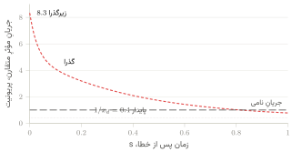
8.2.19 گشتاور در محورهای \(d\) و \(q\)
ایده. مبدّلِ سمتِ ماشین جریانِ استاتور را در دستگاهی که با روتور میچرخد کنترل میکند: مؤلفهٔ همراستا با شارِ آهنربا (\(i_d\)) و مؤلفهٔ عمود بر آن (\(i_q\)). در ماشینِ آهنربای سطحی، گشتاور فقط از \(i_q\) میآید:
\[ T = \frac32\,\frac{p}{2}\,\psi_\text{m}\,i_q, \qquad \psi_\text{m} = \frac{\sqrt2\,E}{\omega_e} \tag{8.13}\]
که \(\psi_\text{m}\) شارِ پیوندیِ آهنربا (مقدارِ قله) و \(i_q\) قلهٔ جریانِ محورِ \(q\) است. کنترلگر \(i_d\) را معمولاً صفر نگه میدارد (کمترین جریان برای هر گشتاور) و در سرعتهای بالا منفی میکند تا ولتاژ از حدِ مبدّل نگذرد (تضعیفِ میدان). این «کنترلِ برداری» پایهٔ کنترلِ همهٔ ماشینهای مبدّلدارِ امروزی است و فصلِ ۹ آن را باز میکند.
مثال 8.17 (وارسیِ سازگاریِ گشتاور، نیروی محرکه و جریان) پرسش. از نیروی محرکهٔ A-111 شارِ پیوندیِ آهنربا را بسازید و جریانِ لازم برای گشتاورِ نامی (پس از گیربکس) را با معادلهٔ 8.13 بیابید. با جریانِ نامیِ 4518 A مقایسه کنید.
پاسخ.
magnet flux linkage psi = sqrt2 E / omega_e = 1.553 Wb (E 398.4 V, 57.75 Hz)
torque of a surface-magnet machine T = 1.5 (p/2) psi i_q; for 42.7 kN m:
i_q = 6,106 A peak = 4,318 A RMS
rated current of A-111 is 4,518 A: the numbers agree within a few
per cent, a consistency check between torque, EMF and current
the converter controls i_q for torque and keeps i_d near zero
(or negative to weaken the field at high speed)تفسیر. سه عددِ مستقلِ فرضی (توان و سرعت از روتور و گیربکس، ولتاژ از ماشین، جریان از ردهٔ ظاهری) با هم سازگارند: جریانِ لازم برای گشتاور 4318 A است و ردهٔ 4518 A حدودِ 5 % حاشیه برای جریانِ مغناطیسیِ محورِ \(d\) و توانِ راکتیو میگذارد. چنین وارسیای اشتباههای بزرگ (ضریبِ \(\sqrt2\) یا \(\sqrt3\)ِ گمشده، قطب بهجای جفتقطب) را پیش از رسیدن به سند میگیرد (فصلِ ۲).
8.2.20 معادلهٔ نوسان و لختی
معادله. روترِ هر ماشینِ همگام وقتی گشتاورِ محرک و گشتاورِ الکتریکی برابر نیستند شتاب میگیرد. بر حسبِ زاویهٔ بار و پریونیت:
\[ \frac{2H}{\omega_\text{s}}\,\frac{\mathrm{d}^2\delta}{\mathrm{d}t^2} = P_\text{m} - P_\text{e}, \qquad H = \frac{E_\text{k}}{S_\text{r}} \tag{8.14}\]
\(H\)، ثابتِ لختی، انرژیِ جنبشیِ روتور در سرعتِ نامی بر حسبِ ثانیههای توانِ نامی است. اگر ماشین کمی از نقطهٔ تعادل جابهجا شود، «کشِ مغناطیسی» آن را برمیگرداند و روتور حولِ زاویهٔ تعادل نوسان میکند، با بسامدِ طبیعیِ \(\omega_n = \sqrt{\omega_\text{s} K_s/(2H)}\) که \(K_s = P_\text{max}\cos\delta_0\) توانِ همگامکننده است. در شبکهای از ماشینهای همگام، کمبودِ ناگهانیِ تولید بسامد را با آهنگِ \(\mathrm{d}f/\mathrm{d}t = \Delta P\,f/(2H)\) پایین میآورد؛ لختیِ بیشتر یعنی زمانِ بیشتر برای واکنشِ کنترلها.
مثال 8.18 (نوسانِ مولدِ پشتیبان و آهنگِ تغییرِ بسامد) پرسش. مولدِ پشتیبان با \(H = 1.0\ \text{s}\) (A-123) با \(P_\text{max} = 0.8\) و \(P = 0.5\) پریونیت به یک شبکهٔ قوی وصل است. بسامدِ نوسانِ طبیعی چیست؟ در شبکهای با \(H = 5\ \text{s}\)، کمبودِ ناگهانیِ 10 % تولید بسامد را با چه آهنگی پایین میآورد؟
پاسخ.
backup generator H 1.0 s (A-123): stored energy 200 kJ at 200 kVA
swing equation 2H/omega_s d2(delta)/dt2 = P_m - P_e (per unit)
P_max 0.8 pu, P 0.5 pu: delta0 38.7 deg, synchronising power 0.624 pu/rad
natural frequency 1.58 Hz: the rotor swings a few times per second
turbine rotor of Plant P: H 5.9 s (chapter 4) behind a converter;
a load step of 0.1 pu on a grid of synchronous machines with H 5 s:
initial rate of change of frequency 0.50 Hz/sتفسیر. روتور حدودِ یکونیم بار در ثانیه نوسان میکند؛ میراکنندهها و تنظیمکنندهها این نوسان را میرا میکنند. در شبکهٔ همگام، کمبودِ دهدرصدی بسامد را با 0.5 Hz/s پایین میآورد. اگر سهمِ بزرگی از تولید مبدّلدار باشد و لختیِ روتورهایش پشتِ مبدّل پنهان بماند، \(H\)ِ مؤثرِ شبکه کم و این آهنگ تند میشود؛ این دلیلِ الزامهای تازه برای «لختیِ مصنوعی» و پاسخِ سریعِ بسامد است (فصلهای ۹، ۱۷ و ۲۰).
8.2.21 زنجیرهٔ تلفاتِ رانه
ژنراتور یک حلقه از زنجیره است. از محورِ روتور تا پایانهٔ ترانسفورماتورِ توربین، چهار مرحله توان را میکاهند و بازدهٔ کل حاصلضربِ بازدههاست (فصلِ ۴، مثال 4.4). هر مرحله بخشی تلفاتِ ثابت دارد، پس در بارِ کم همهٔ مرحلهها بدتر میشوند و زنجیره بیش از هر حلقه افت میکند.
مثال 8.19 (زنجیره در بارِ نامی و ربعبار) پرسش. با بازدههای نامیِ گیربکس، ژنراتور، مبدّل و ترانسفورماتورِ توربین (فصلِ ۴ و A-111) و سهمهای تلفاتِ ثابتِ نوعی، بازدهٔ زنجیره را در بارِ نامی و ربعبار بیابید.
پاسخ.
drivetrain chain at rated and at 25 % load (A-047, A-111, A-128);
gearbox x generator x converter x turbine transformer:
100 % load: 0.970 x 0.970 x 0.975 x 0.990 = 0.908
25 % load: 0.959 x 0.954 x 0.975 x 0.979 = 0.873
most stages lose more, in per cent, at part loadتفسیر. زنجیره از 0.908 در بارِ نامی به 0.873 در ربعبار میرسد: سهونیم درصد انرژیِ بیشتر در بادهای ضعیف از دست میرود. برای مقایسهٔ معماریها باید همین زنجیره را در بارِ واقعیِ سال جمع زد (مثال 8.62)، نه بازدههای نامی را ضرب کرد.
- چرا جریانِ خطای ماشینِ همگام با زمان کم میشود؟ سه مرحله را نام ببرید.
- چرا ممکن است جریانِ پایدارِ خطا از جریانِ نامی کمتر باشد و چه پیامدی دارد؟
- در ماشینِ آهنربای سطحی گشتاور از کدام مؤلفهٔ جریان میآید؟ تضعیفِ میدان چیست؟
- ثابتِ لختیِ 3 s یعنی چه؟
- آهنگِ تغییرِ بسامد با کمبودِ 5 % در شبکهای با \(H = 4\ \text{s}\)؟
- چرا بازدهٔ زنجیره در بارِ کم بیش از هر حلقه افت میکند؟
8.2.22 موتورهای نیروگاه: قانونهای تشابه و مبدّلِ بسامد
قانونهای تشابه. برای فنها و پمپهای گریز از مرکز، دبی با سرعت، فشار با مجذورِ سرعت و توان با مکعبِ سرعت تغییر میکند. پس کاهشِ دبی با کاهشِ سرعت (مبدّلِ بسامد) بسیار کممصرفتر از کاهشِ آن با دمپر یا شیر است، که موتور را در سرعتِ کامل نگه میدارد و توان را در یک مقاومتِ جریان تلف میکند. تهویهٔ اتاقِ باتری، که بیشترِ سال با بارِ جزئی کار میکند (فصلِ ۷، مثال 7.49)، نمونهٔ روشنی است.
مثال 8.20 (فنِ 15 kW با دمپر یا با مبدّل) پرسش. فنی 15 kW (A-124، فرضی) در 6000 ساعتِ سال 70 % دبی میدهد. توان را با سرعتهای مختلف و صرفهجوییِ سالانهٔ مبدّلِ بسامد در برابرِ دمپر را بیابید (دمپر در این دبی حدودِ 85 % توانِ کامل میگیرد؛ بازدهٔ مبدّل 97 %).
پاسخ.
fan of 15 kW (A-124): power ~ speed cubed (affinity laws), flow ~ speed
speed 100 %: flow 100 %, power 15.00 kW
speed 90 %: flow 90 %, power 10.94 kW
speed 80 %: flow 80 %, power 7.68 kW
speed 70 %: flow 70 %, power 5.14 kW
speed 50 %: flow 50 %, power 1.88 kW
70 % flow for 6000 h/yr: damper about 12.8 kW, drive 5.3 kW
saving 44.7 MWh/yr per fan (drive losses 3 % included)
the drive adds harmonics (chapter 7) and needs coolingتفسیر. در 70 % سرعت، فن فقط یکسومِ توان را میخواهد؛ صرفهجویی حدودِ 45 MWh در سال برای یک فن است، یعنی بیش از سه برابرِ توانِ نامیِ آن در هزار ساعت. هزینهها: مبدّل، هارمونیکها (فصلِ ۷، بخش 7.4.6)، تنشِ پالس روی عایقِ موتور (بخش 8.3.4) و جریانهای یاتاقان (بخش 8.3.6). مصرفِ داخلیِ نیروگاه مستقیماً از فروشش کم میشود؛ پس بازدهِ تهویه و پمپها یک موضوعِ اقتصادیِ بهرهبرداری است (فصلهای ۲۱ و ۵۱).
8.2.23 مطالعهٔ مولدِ پشتیبان
مسئله. مولدِ پشتیبان باید هنگامِ قطعِ شبکه بارهای ضروری را تغذیه کند: منبعِ بیوقفه و شارژرهای DC، پایش و مخابرات، تهویهٔ اتاقِ باتری (که بیآن باتری باید خاموش شود؛ فصلِ ۱۹)، روشناییِ اضطراری و سامانههای آتش و امنیت. ردهٔ مولد را دو چیز تعیین میکنند: جمعِ بارها با حاشیه، و بزرگترین راهاندازیِ موتور با افتِ مجاز.
مثال 8.21 (ردهٔ مولدِ پشتیبانِ نیروگاهِ P) پرسش. با فهرستِ بارهای ضروریِ A-129 (فرضی، S1)، توانها و ضریبِ توانِ کل را بیابید و ردهٔ مولد را با حاشیهٔ 25 % و با قیدِ راهاندازیِ موتورِ 30 kW (تمرین 8.85) تعیین کنید.
پاسخ.
essential loads on the backup generator (A-129):
UPS and DC chargers 12.0 kW, pf 0.9
SCADA, telecom 8.0 kW, pf 0.95
battery HVAC (S1) 60.0 kW, pf 0.85
control HVAC 25.0 kW, pf 0.85
lighting, essential 3.0 kW, pf 0.95
fire and security 4.0 kW, pf 0.9
total 112.0 kW, 64.0 kvar, 129.0 kVA, pf 0.87
with 25 % margin 161 kVA; the largest motor start (30 kW DOL) wants
about 275 kVA for a 15 % dip (problem 55), or a soft start on 200 kVA
the rating is set by the motor start and the margin, whichever is largerتفسیر. جمعِ بارها با حاشیه 161 kVA میخواهد، اما راهاندازیِ مستقیمِ موتورِ تهویه با افتِ 15 % مولدی 275 kVA را لازم دارد: راهاندازی، نه بارِ پیوسته، رده را تعیین میکند. با راهاندازِ نرم، همان 200 kVAِ فرضی کافی است، و این تصمیمی ارزانتر است. سه پرسشِ دیگر در طراحیِ واقعی: مدتِ کار و ذخیرهٔ سوخت، رفتار با بارهای غیرخطیِ منبعِ بیوقفه (هارمونیکها و پایداریِ تنظیمکننده)، و ترتیبِ بارگذاری پس از راهاندازیِ مولد. اینها در فصلهای ۲۳ و ۲۴ تکمیل میشوند.
- چرا کاهشِ دبی با کاهشِ سرعت کممصرفتر از دمپر است؟
- پمپی 10 kW در 80 % سرعت چه توانی میگیرد؟
- چرا راهاندازیِ بزرگترین موتور ممکن است ردهٔ مولد را تعیین کند؟
- سه پیامدِ افزودنِ مبدّلِ بسامد به یک فن را بنویسید.
8.2.24 آهنربای درونی و گشتاورِ رلوکتانسی
ایده. وقتی آهنرباها درونِ روتور قرار دارند، مسیرِ شار در راستای آهنربا (\(d\)) از آهنربا میگذرد، که نفوذپذیریاش نزدیکِ هواست، و در راستای عمود (\(q\)) از آهن. پس \(L_q > L_d\) و ماشین، افزون بر گشتاورِ آهنربا، گشتاورِ رلوکتانسی هم دارد: روتور مانندِ یک تکه آهنِ کشیده میخواهد در راستای میدان قرار گیرد. با معادلهٔ 8.13:
\[ T = \frac32\,\frac{p}{2}\left[\psi_\text{m}\,i_q + (L_d - L_q)\,i_d\,i_q\right] \tag{8.15}\]
با \(i_d\)ِ منفی (و \(L_d < L_q\)) جملهٔ دوم مثبت است. کنترلگر برای هر گشتاور زاویهٔ جریانی را برمیگزیند که کمترین جریان را بخواهد (بیشینهٔ گشتاور بر آمپر).
مثال 8.22 (چقدر گشتاورِ اضافه؟) پرسش. ماشینِ آهنربای درونی با \(\psi_\text{m} = 0.9\ \text{Wb}\)، \(L_d = 0.20\) و \(L_q = 0.28\ \text{mH}\) و ۶ قطب (A-130، فرضی) با جریانِ قلهٔ 6000 A: گشتاور اگر همهٔ جریان در \(q\) باشد، و بهترین زاویه.
پاسخ.
interior-magnet machine (A-130): psi 0.9 Wb, L_d 0.20 mH, L_q 0.28 mH, 6 poles
T = 1.5 (p/2) [psi i_q + (L_d - L_q) i_d i_q]
current 6000 A peak, all in q: T 24.3 kN m
best angle 22.5 deg into negative d: T 27.0 kN m (+11.2 %)
the reluctance torque adds to the magnet torque: more torque per
ampere and less magnet; the converter must know L_d and L_qتفسیر. با \(22.5^\circ\) چرخشِ جریان به سوی \(d\)ِ منفی، گشتاور 11 % بیشتر میشود؛ یعنی برای همان گشتاور جریان و تلفاتِ مسیِ کمتر، یا آهنربای کمتر. بهایش وابستگیِ کنترل به \(L_d\) و \(L_q\) است که با اشباع تغییر میکنند؛ سازندهٔ مبدّل آنها را اندازه میگیرد و در کنترلگر میگذارد (فصلِ ۹).
8.2.25 تضعیفِ میدان و حدِ ولتاژ
مسئله. نیروی محرکهٔ ماشینِ آهنربای دائم با سرعت بالا میرود (\(E = \omega_e\psi_\text{m}\))، اما مبدّل ولتاژی بیش از حدِ پیوندِ DC نمیتواند بسازد یا بپذیرد. بالای یک سرعتِ مشخص، کنترلگر با \(i_d\)ِ منفی بخشی از شارِ آهنربا را خنثی میکند تا ولتاژِ پایانه در حد بماند؛ بهایش جریانِ اضافه بیگشتاور است.
مثال 8.23 (تا چه سرعتی بیتضعیفِ میدان؟) پرسش. با شارِ پیوندیِ 1.553 Wbِ ژنراتورِ نیروگاه (مثال 8.17) و حدِ ولتاژِ قلهٔ فازِ حدودِ 603 V (A-131، فرضی)، \(i_d\)ِ لازم را در چند سرعت بیابید.
پاسخ.
PM generator, psi 1.553 Wb; converter limit about 603 V peak phase (A-131):
900 rpm: EMF 439 V peak; i_d needed 0 A peak
1155 rpm: EMF 564 V peak; i_d needed 0 A peak
1300 rpm: EMF 634 V peak; i_d needed -379 A peak
1450 rpm: EMF 707 V peak; i_d needed -1143 A peak
above about 1240 rpm the EMF exceeds the limit: a negative i_d
cancels part of the magnet flux; if the converter trips at
speed, nothing holds the EMF down (section D, overspeed)تفسیر. در سرعتِ نامی هنوز حاشیه هست، اما بالای حدودِ 1240 rpm تضعیفِ میدان لازم است. دو پیام: (۱) طراحِ ماشین و مبدّل باید با هم تصمیم بگیرند ماشین تا کجا با ولتاژِ کامل کار کند (بخش 8.5.1)؛ (۲) اگر مبدّل در سرعتِ زیاد قطع شود، دیگر کسی \(i_d\)ِ منفی نمیدهد و نیروی محرکهٔ کامل به پیوند میرسد؛ مدارِ حفاظتیِ ولتاژ و حفاظتِ اضافهسرعت (1) برای همیناند.
8.2.26 خواندنِ پلاکِ موتور
پلاک کوتاهترین سندِ ماشین است و هر عددش با بقیه رابطه دارد. پیش از استفاده از پلاک در یک محاسبه یا خرید، سه وارسیِ سریع:
مثال 8.24 (سه وارسیِ پلاک) پرسش. پلاکِ موتور (A-135، ساختگی): 30 kW، 400 V، 54 A، ضریبِ توانِ 0.85، بازدهٔ 94.7 %، 1475 rpm و 50 Hz. سازگاری را وارسی کنید.
پاسخ.
motor nameplate (A-135): 30 kW, 400 V, 54 A, pf 0.85, eff 94.7 %,
1475 rpm, 50 Hz
check 1: input 31.68 kW -> current 53.8 A (plate 54 A)
check 2: 4 poles (1500 rpm synchronous), slip 1.67 %
check 3: rated torque 194 N m
the plate is self-consistent; an inconsistent plate is a question
for the supplier, not something to 'correct' quietlyتفسیر. جریانِ حسابشده با پلاک میخواند، لغزش و قطبها با سرعت، و گشتاور از توان و سرعت میآید. همین سه وارسی در مثال 7.46 برای اینورتر دیده شد: عددها با هم معنا دارند.
8.2.27 سهمِ کلِ نیروگاه در جریانِ خطا
مثال 8.25 (واحدهای نیروگاهِ P در خطای شینهٔ 33 kV) پرسش. با جریانِ خطای 8.75 kAِ شبکه در شینهٔ 33 kV (مثال 7.30) و سهمِ 1.1 پریونیتِ هر واحدِ مبدّلدار (A-117)، سهمِ کلِ ده اینورتر و دوازده توربین چیست؟ نیروگاهی هماندازه با ماشینهای همگام چه میداد؟
پاسخ.
fault at the 33 kV bus of Plant P (chapter 7 and A-117):
grid 8.75 kA; 10 PV inverters 962 A; 12 turbines 1155 A
units add 24 % to the grid's contribution
a plant of synchronous machines of the same size would add about
9.6 kA (x_d'' 0.2 on 110 MVA): protection must work with lessتفسیر. واحدهای نیروگاهِ P فقط حدودِ یکچهارم به جریانِ خطای شبکه میافزایند؛ نیروگاهی با ماشینهای همگام حدودِ 9.6 kA، بیش از چهار برابرِ آن را. حفاظتِ فیدرها و شینه باید با این جریانهای کم و با زمانبندیِ پاسخِ کنترلگرهای مبدّل کار کند؛ مطالعهٔ اتصالِ کوتاهِ نیروگاه همهٔ این سهمها را جمع میزند (فصلهای ۲۶ و ۲۸).
- چرا در ماشینِ آهنربای درونی \(L_q > L_d\) است؟
- با \(i_d = 0\)، گشتاورِ رلوکتانسی چه میشود؟
- چرا تضعیفِ میدان جریانِ اضافه میخواهد؟
- اگر مبدّل در اضافهسرعت قطع شود چه خطری هست؟
- سه وارسیِ سریعِ پلاکِ موتور را بنویسید.
- چرا افزودنِ نیروگاهِ مبدّلدار جریانِ خطای شبکه را کم تغییر میدهد؟
8.2.28 از سرعتِ ثابت تا مبدّلِ کامل: سیرِ رانهها
سیرِ معماریهای ژنراتورِ توربین داستانِ پاسخ به سه فشار است: انرژیِ بیشتر، بارِ مکانیکیِ کمتر و الزامهای سختترِ شبکه.
- سرعتِ ثابت با ژنراتورِ القایی (بخش 8.2.11): ساده و محکم، اما بیکنترلِ توانِ راکتیو و با انتقالِ مستقیمِ تندبادها به رانه. با بزرگ شدنِ توربینها، بارهای مکانیکی و ناتوانی در کمک به ولتاژِ شبکه محدودش کرد.
- لغزشِ محدود (مقاومتِ متغیر در روتورِ سیمپیچی) کمی انعطاف داد، با تلفاتِ گرماییِ لغزش.
- دوسوتغذیه (بخش 8.2.13): سرعتِ متغیر با مبدّلِ کوچک؛ برای سالها معماریِ غالبِ توربینهای چندمگاواتی بود.
- مبدّلِ کامل (بخش 8.2.14): با ارزانتر شدنِ الکترونیکِ قدرت و سختتر شدنِ الزامهای ماندن در مدار و توانِ راکتیو، جدا کردنِ کاملِ ماشین از شبکه رایج شد؛ با آن، ماشینهای آهنربای دائمِ بیگیربکس و سرعتِ متوسط و ژنراتورهای ولتاژِ متوسط هم گسترش یافتند.
روندهای امروزی (بهصورتِ جهت، نه آمار): توربینهای بزرگتر با گشتاورِ بیشتر، که ماشینهای سرعتِ متوسط و بیگیربکس را جذابتر میکند؛ ولتاژِ ژنراتور و مبدّلِ بالاتر برای کاستنِ جریان و کابل در برج؛ کاهشِ وابستگی به خاکِ کمیاب؛ و الزامهای «شبکهساز» که از مبدّل رفتاری شبیهِ ماشینِ همگام میخواهند (فصلهای ۹ و ۱۷). برای پروژهٔ واقعی، داده و سابقهٔ میدانیِ سازنده جای این روندها را میگیرد (جدول 8.10).
8.2.29 انتخابِ موتورهای کمکی
موتورهای کمکی کوچکاند اما پرتعدادند، و خرابیِ یکی (مثلاً تهویهٔ اتاقِ باتری) میتواند بخشی از نیروگاه را متوقف کند. فهرستِ تصمیمها برای هر موتور:
| موضوع | پرسش | پیوند |
|---|---|---|
| توان و بار | توانِ محور با حاشیه؛ نوعِ بار (فن، پمپ، کمپرسور) و منحنیِ گشتاورش | بخش 8.2.22 |
| راهاندازی | مستقیم، ستاره–مثلث، نرم یا مبدّل؛ افت روی ترانسفورماتور و روی مولد | جدول 8.2 |
| بازده | کلاسِ بازده و ساعتهای کار؛ ارزشِ انرژی | مثال 8.20 |
| محیط | دما، رطوبت، گرد، ارتفاع؛ درجهٔ حفاظتِ پوسته و ضدِ میعان | بخش 8.3.7 |
| تغذیه | تغذیهٔ عادی یا ضروری؛ هارمونیکِ مبدّلها | فصلِ ۷ |
| حفاظت | اضافهبار، اتصالِ کوتاه، قطعِ فاز، دمای سیمپیچ | 1 |
| نگهداری | دسترسی، یاتاقان، یدکِ مشترک برای موتورهای هماندازه | بخش 8.5.8 |
یک قاعدهٔ عملی: موتورهای هماندازه را تا حدِ ممکن یکسان انتخاب کنید (یک سازنده، یک قاب، یک یاتاقان): یدک و نگهداری سادهتر میشود. موتورِ بزرگتر از نیاز را نیز انتخاب نکنید: ضریبِ توان و بازده در بارِ کم پایین میآیند (تمرین 8.100).
- سه فشاری که سیرِ رانهها را شکل دادهاند کداماند؟
- چرا با گسترشِ الزامهای ماندن در مدار، مبدّلِ کامل رایجتر شد؟
- چرا یکسانسازیِ موتورهای کمکی به نگهداری کمک میکند؟
- موتورِ بزرگتر از نیاز چه زیانی دارد؟
8.2.30 موتورِ القایی در ولتاژِ نامتعادل
ایده. ولتاژِ سهفازِ نامتعادل را میتوان به یک مؤلفهٔ مثبت و یک مؤلفهٔ منفی (و مؤلفهٔ صفر، که در موتورِ سهسیمه جریانی نمیسازد) تجزیه کرد (بخش 7.3.8). مؤلفهٔ مثبت میدانِ گردانِ معمول را میسازد؛ مؤلفهٔ منفی میدانی میسازد که وارونه میچرخد. لغزشِ روتور نسبت به این میدانِ وارونه \(2 - s\) است، یعنی تقریباً دو، و مدارِ معادل در این لغزش تقریباً همان امپدانسِ روتورِ قفل (راهاندازی) را نشان میدهد که کوچک است. پس ولتاژِ منفیِ کوچک جریانِ منفیِ بزرگی میکشد:
\[ \frac{I_2}{I_1} \approx \frac{I_\text{lr}}{I_\text{r}}\cdot\frac{V_2}{V_1} \tag{8.16}\]
که \(I_\text{lr}/I_\text{r}\) نسبتِ جریانِ راهاندازی به جریانِ نامی است (برای موتورِ 30 kW، 6.2). جریانِ منفی در روتور با بسامدِ \((2-s)f\)، نزدیکِ 100 Hz، جاری است؛ در این بسامد اثرِ میلهٔ عمیق جریان را به سطحِ میله میراند و مقاومتِ مؤثرِ روتور را بالا میبرد. نتیجه: گرمای اضافه در روتور و در یکی از فازهای استاتور، که جریانش جمعِ برداریِ مؤلفههای مثبت و منفی است و میتواند تا \(I_1 + I_2\) برسد. گشتاورِ ترمزیِ میدانِ وارونه بسیار کوچک است؛ خطر گرما است، نه گشتاور.
کد. مدارِ توالیِ منفی همان مدارِ موتور است با ولتاژِ منفی، لغزشِ \(2-s\) و مقاومتِ روتورِ بزرگتر:
def negative_sequence(u_pct: float, slip: float) -> dict:
"""Negative-sequence circuit of the motor: voltage u % of the positive
sequence, slip 2 - s, rotor resistance raised by the deep-bar factor."""
data = dict(MOTOR, v_ph=MOTOR["v_ph"] * u_pct / 100,
r2=MOTOR["r2"] * K_DEEP)
return m.InductionMachine(**data).operate(2 - slip)مثال 8.26 (موتورِ تهویه با ولتاژِ نامتعادل) پرسش. موتورِ 30 kWِ تهویهٔ اتاقِ باتری (A-114) در بارِ نامی با نامتعادلیِ ولتاژِ ۱ تا ۵ درصد کار میکند. ضریبِ مقاومتِ روتور در 100 Hz را 2.0 بگیرید (A-140، فرضی). جریانِ منفی، بدترین جریانِ فاز و افزایشِ تلفاتِ مسیِ داغترین فاز را بیابید. بارِ مجاز چقدر باشد تا بدترین فاز از جریانِ نامی بیشتر نشود؟
پاسخ.
30 kW motor at rated load: slip 1.65 %, I 53.8 A, copper loss 1293 W
negative sequence: slip 2 - s = 1.9835, rotor R x 2.0 at 100 Hz (A-140)
u_V I_neg I_neg/I worst phase extra Cu hot phase Cu
% A % A W x rated
1 3.3 6.2 57.2 8 1.13
2 6.7 12.4 60.5 31 1.26
3 10.0 18.6 63.9 69 1.41
5 16.7 31.1 70.6 193 1.72
current unbalance is about 6.2 times the voltage unbalance
(the negative sequence meets the low locked-rotor impedance)
braking torque of the 2 % negative sequence: 0.06 N m of 197
worst phase held at 53.8 A with 2 %: shaft power 25.6 kW (85 %)
worst phase held at 53.8 A with 3 %: shaft power 23.3 kW (78 %)
worst phase held at 53.8 A with 5 %: shaft power 18.4 kW (61 %)تفسیر. نامتعادلیِ ولتاژِ 2 % جریانِ منفیِ 12.4 % میسازد، شش برابر، همانطور که معادلهٔ 8.16 پیشبینی میکند. جمعِ تلفاتِ اضافه کم است (31 W)، اما مسِ داغترین فاز تا 26 % گرمای بیشتری میگیرد، و نقطهٔ داغِ سیمپیچ عمرِ عایق را تعیین میکند (بخش 8.3.4). برای آنکه بدترین فاز از جریانِ نامی بیشتر نشود، بار در 2 % باید به حدودِ 85 % و در 5 % به حدودِ 61 % برسد. این برآورد یک کرانِ بالا است (بدترین زاویهٔ میانِ دو مؤلفه)؛ منحنیِ کاهشِ بارِ واقعی را سازندهٔ موتور یا استانداردِ مربوط میدهد.
در نیروگاهِ P. نامتعادلیِ تابلوی کمکی از بارهای تکفاز (روشنایی، تغذیههای کنترل) میآید (فصلِ ۷، بخش 7.3.6). دو درس: بارهای تکفاز را میانِ فازها پخش کنید و نامتعادلی را اندازه بگیرید (بخش 7.3.9)؛ و حفاظتِ موتور یک عنصرِ نامتعادلی یا توالیِ منفی دارد که پیش از داغ شدنِ سیمپیچ هشدار میدهد یا قطع میکند (بخش 8.5.2). محدودیت: مدل اشباع و تغییرِ دما را نادیده میگیرد، و ضریبِ میلهٔ عمیق فرضی است.
8.2.31 زمانِ شتابگیری و گرمای راهاندازی
معادله. هنگامِ راهاندازی، اختلافِ گشتاورِ الکترومغناطیسیِ موتور \(T_\text{e}\) و گشتاورِ بار \(T_\text{L}\) مجموعهٔ گردان با لختیِ دورانی \(J_\text{m}\) را شتاب میدهد:
\[ J_\text{m}\,\frac{\mathrm{d}\omega}{\mathrm{d}t} = T_\text{e}(\omega) - T_\text{L}(\omega), \qquad t_\text{run} = \int_0^{\omega_1} \frac{J_\text{m}\,\mathrm{d}\omega}{T_\text{e}(\omega) - T_\text{L}(\omega)} \tag{8.17}\]
گشتاورِ موتور با مجذورِ ولتاژ تغییر میکند؛ در 81 % ولتاژ فقط دوسوم گشتاور میماند و زمانِ شتاب بلندتر میشود.
گرمای روتور. در هر لحظه، تلفاتِ مسیِ روتور \(s\) برابرِ توانِ فاصلهٔ هوایی است: \(p_\text{r} = s\,T_\text{e}\,\omega_\text{s}\). برای راهاندازی بیبار (\(T_\text{L} = 0\)، پس \(T_\text{e} = J_\text{m}\,\mathrm{d}\omega/\mathrm{d}t\)) و با \(s = (\omega_\text{s} - \omega)/\omega_\text{s}\):
\[ \begin{aligned} E_\text{r} &= \int (\omega_\text{s} - \omega)\,T_\text{e}\,\mathrm{d}t = \int_0^{\omega_\text{s}} J_\text{m}\,(\omega_\text{s} - \omega)\,\mathrm{d}\omega \\ &= \tfrac{1}{2}\,J_\text{m}\,\omega_\text{s}^2 \end{aligned} \tag{8.18}\]
یعنی روتور در هر راهاندازیِ مستقیم دستکم به اندازهٔ انرژیِ جنبشیِ دادهشده به بار گرم میشود، مستقل از ولتاژ و از مدتِ راهاندازی. گشتاورِ بار و منبعِ ضعیف آن را بیشتر میکنند. راهاندازِ نرم این گرما را کم نمیکند (فقط آن را در زمانِ بلندتری پخش میکند)؛ مبدّلِ بسامد چون لغزش را همیشه کوچک نگه میدارد، گرمای روتور را تقریباً حذف میکند.
def run_up(v_frac: float, j: float, load, dt: float = 1e-3,
t_end: float = 3.0) -> dict:
"""Integrate J dw/dt = T_motor - T_load from standstill at a fixed
supply voltage (fraction of rated); returns the speed record and the
time and rotor heat to reach 95 % of synchronous speed."""
im = m.InductionMachine(**dict(MOTOR, v_ph=MOTOR["v_ph"] * v_frac))
w_s = 2 * math.pi * im.n_sync / 60
w, t, e_rotor, e_stator = 0.0, 0.0, 0.0, 0.0
rec, t95, e95 = [], None, None
while t < t_end:
op = im.operate(max(1e-4, 1 - w / w_s))
acc = (op["torque"] - load(w / w_s)) / j
if t95 is None:
e_rotor += op["p_cu2"] * dt
e_stator += op["p_cu1"] * dt
w += acc * dt
t += dt
if t95 is None and w >= 0.95 * w_s:
t95, e95 = t, (e_rotor, e_stator)
rec.append((t, 60 * w / (2 * math.pi)))
return {"t95": t95, "e95": e95, "rec": rec, "w_s": w_s}مثال 8.27 (راهاندازیِ کمپرسور و فن روی دو منبع) پرسش. موتورِ 30 kW یک کمپرسورِ بیبار را راه میاندازد (\(J_\text{m} = 1.0\ \text{kg}\,\text{m}^2\)، گشتاورِ بار \(T_\text{r}(0.10 + 0.30\,x^2)\) با \(x = \omega/\omega_\text{s}\)؛ A-141، فرضی) با ولتاژِ کامل، با 94.2 % (افتِ ترانسفورماتور، مثال 8.8) و با 81.3 % (مولدِ پشتیبان، مثال 8.63). زمان تا 95 % سرعتِ همگام و گرمای روتور و استاتور را بیابید و همین را برای یک فنِ سنگین (\(J_\text{m} = 15\ \text{kg}\,\text{m}^2\)، گشتاورِ مجذوری) تکرار کنید.
پاسخ.
run-up of the 30 kW motor (A-114), rated torque 197 N m (A-141):
compressor started unloaded, J 1.0 kg m2, T_L = T_r (0.10 + 0.30 x^2)
supply t to 95 % rotor heat stator heat 1/2 J w^2
100 % 0.65 s 14.0 kJ 18.0 kJ 12.3 kJ
94.2 % 0.74 s 14.3 kJ 18.3 kJ 12.3 kJ
81.3 % 1.05 s 15.1 kJ 19.4 kJ 12.3 kJ
same motor on a fan, J 15.0 kg m2, T_L = T_r x^2:
100 % 9.70 s 207.7 kJ 267.0 kJ 185.1 kJ
81.3 % 15.99 s 224.2 kJ 288.3 kJ 185.1 kJ
rotor heat in a start is at least the kinetic energy given
to the load (1/2 J w^2, no-load case); a load torque and a
weak supply add to it; compare the run-up time with the
safe stall time on the motor data sheetتفسیر. کمپرسور در کمتر از یک ثانیه راه میافتد و روترش حدودِ 14 kJ گرم میشود، کمی بیش از 12.3 kJِ معادلهٔ 8.18 (شکل 8.12). روی مولد، زمان 60 % بلندتر است. فنِ سنگین داستانِ دیگری است: 10 تا 16 ثانیه و بیش از 200 kJ گرما در روتور. این زمان باید با زمانِ مجازِ ماندن در حالتِ قفل از برگهٔ دادهٔ موتور مقایسه شود، و تعدادِ راهاندازیهای پیاپیِ مجاز در ساعت هم از همین گرما میآید. فرضِ ولتاژِ ثابتِ 81.3 % بدبینانه است: تنظیمکنندهٔ ولتاژِ مولد آن را در حدودِ یک ثانیه بازمیگرداند. محدودیت: گشتاورِ موتور از مدارِ معادلِ حالتِ ماندگار است و گذراهای الکتریکیِ لحظهٔ وصل (بخش 8.2.18) را ندارد.
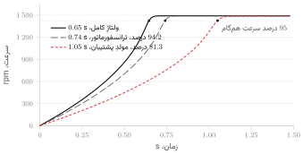
8.2.32 نمودارِ قابلیتِ مولدِ پشتیبان و بارِ پیشفاز
هندسه. از دو معادلهٔ توانِ ماشینِ همگام با روترِ استوانهای (بخش 8.2.6)، در پریونیت:
\[ \begin{aligned} P &= \frac{E V}{X_\text{s}}\,\sin\delta, \qquad Q = \frac{E V \cos\delta - V^2}{X_\text{s}} \\ \left(Q + \frac{V^2}{X_\text{s}}\right)^2 + P^2 &= \left(\frac{E V}{X_\text{s}}\right)^2 \end{aligned} \tag{8.19}\]
پس با \(E\) ثابت، نقطهٔ کار روی دایرهای به مرکزِ \(Q = -V^2/X_\text{s}\) میچرخد. بیشینهٔ جریانِ میدان بیشینهٔ \(E\) است و دایرهٔ گرمای میدان را میسازد؛ جریانِ نامیِ استاتور دایرهٔ واحد را؛ موتورِ دیزل سقفِ توانِ اکتیو را؛ و زاویهٔ بار یک خطِ پایداری را، که روی آن \(Q + V^2/X_\text{s} = P\cot\delta_\text{max}\) است. در \(\delta = 90^\circ\) این خط عمودی است (حدِ نظری)؛ بهرهبردار با حاشیه، اینجا \(\delta_\text{max} = 70^\circ\)، کار میکند.
def capability_limits(p: float, xd: float, e_max: float, d_max_deg: float):
"""Reactive range (pu, generator convention) of a round-rotor machine
at active power p: stator circle, field circle, stability margin."""
r_f = e_max / xd # field circle radius
q_hi = min(math.sqrt(max(0.0, 1 - p * p)),
math.sqrt(max(0.0, r_f * r_f - p * p)) - 1 / xd)
q_lo = max(-math.sqrt(max(0.0, 1 - p * p)),
-1 / xd + p / math.tan(math.radians(d_max_deg)))
return q_lo, q_hiمثال 8.28 (بارِ شبانهٔ منبعِ بیوقفه روی مولد) پرسش. برای مولدِ 200 kVA با \(x_d = 2.5\) پریونیت (A-113)، موتورِ دیزلِ 0.8 پریونیت و \(\delta_\text{max} = 70^\circ\) (A-143، فرضی)، مرزهای نمودارِ قابلیت را بسازید. سه نقطهٔ کار را وارسی کنید: بارهای ضروریِ روز (مثال 8.21)، و بارِ شبانهٔ کم (منبعِ بیوقفه، پایش، روشنایی) با صافیِ ورودیِ خازنیِ منبعِ بیوقفه به اندازهٔ 50 و 100 kvar (A-143).
پاسخ.
backup generator 200 kVA, x_d 2.5 pu (A-113),
engine 0.8 pu, delta max 70 deg (A-143)
field limit from the rated point (pf 0.8): E_max 3.20 pu,
field circle centre -1/x_d = -0.40 pu
P pu Q min Q max (pu of 200 kVA)
0.0 -0.400 0.881
0.2 -0.327 0.865
0.4 -0.254 0.817
0.6 -0.182 0.731
0.8 -0.109 0.600
operating points (generator convention, + = delivered):
essential loads, day P 0.560 Q 0.320: E 2.28, delta 37.9 inside
night, UPS filter 50 kvar P 0.115 Q -0.203: E 0.57, delta 30.3 inside
night, UPS filter 100 kvar P 0.115 Q -0.453: E 0.32, delta 114.7 OUTSIDE
a leading load drives the machine under-excited; near the
limit the AVR loses control and the voltage can run away:
check UPS and filter reactive power against the maker's
capability chartتفسیر. بارِ روز با حاشیه درونِ نمودار است (شکل 8.13). شب، بارِ اکتیو کم است اما صافیِ خازنیِ منبعِ بیوقفه توانِ راکتیو میدهد؛ مولد باید آن را بگیرد و کمتحریک شود. با 50 kvar نقطه درون است؛ با 100 kvar زاویهٔ لازم از 90° میگذرد: کارِ ماندگار ممکن نیست. در عمل، تنظیمکنندهٔ ولتاژ تحریک را تا کمینه پایین میآورد و چون جریانِ خازنی خودش ماشین را مغناطیسی میکند، کنترلِ ولتاژ از دست میرود و ولتاژ بالا میرود. چارهها: قطعِ صافیها هنگامِ کار روی مولد (قابلیتی که برخی منبعهای بیوقفه دارند)، حداقلِ بارِ اکتیو، یا مولدی با نمودارِ قابلیتِ مناسب. نمودارِ واقعی و حدِ کمتحریکِ آن را سازندهٔ مولد میدهد؛ این وارسی بخشی از هماهنگیِ مولد و منبعِ بیوقفه در طراحیِ تفصیلی است (فصلهای ۲۳ و ۲۴).
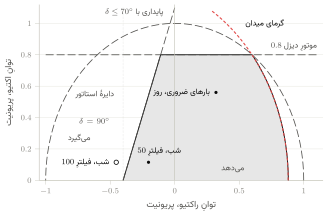
آزمودنِ مولد با بارِ خازنی یا در مرزِ کمتحریک کارِ آزمایشگاهِ سازنده یا متخصصِ مجاز با رویهٔ مکتوب است، نه آزمونی در محلِ نیروگاه. ولتاژِ بالای ناشی از خودتحریکی به تجهیزاتِ حساس آسیب میزند.
- چرا ولتاژِ منفیِ دو درصدی جریانِ منفیِ حدودِ دوازده درصدی میسازد؟
- چرا جمعِ تلفاتِ اضافه کم است اما خطرِ گرمایی جدی است؟
- گرمای روتور در راهاندازیِ بیبار به چه چیزی وابسته نیست؟
- چرا راهاندازِ نرم گرمای روتور را کم نمیکند اما مبدّلِ بسامد میکند؟
- مرکز و شعاعِ دایرهٔ تحریکِ ثابت در صفحهٔ \(P\)–\(Q\) چیست؟
- چرا بارِ پیشفاز مولد را کمتحریک میکند؟
8.3 ب. ساختمانِ ماشین
بخشِ ب ماشین را باز میکند: هستهها و ورقها، سیمپیچها، سامانهٔ عایق، روتور، شفت و یاتاقانها، خنککاری و پوسته، و رابطهای هر زیرمجموعه با بقیه. هر زیرمجموعه یک محصول با موادِ خاص، فرایندِ ساختِ خاص و خرابیهای خاص است؛ اینها پایهٔ طراحیِ مفهومیِ بخشِ ج و پایشِ وضعیتِ بخشِ داند.
برنامه:
companion/ch08/examples_b.py
8.3.1 کالبدِ ماشین
شکل 8.14 برشِ عرضیِ یک ماشینِ آهنربای دائم را نشان میدهد. از بیرون به درون: پوسته و قابِ نگهدارنده با مسیرهای خنککاری؛ هستهٔ استاتور از ورقهای نازکِ فولادِ الکتریکی با شیارهایی که سیمپیچ در آنها خوابیده است؛ دندانهها میانِ شیارها و یوغ پشتِ آنها که شار را میبندد؛ فاصلهٔ هوایی؛ روتور با آهنرباها (یا سیمپیچِ میدان، یا قفسه)؛ و شفت که روی یاتاقانها میچرخد. در طول، ماشین دو سرِ سیمپیچ (بخشی از سیمپیچ بیرون از هسته که کاری نمیکند اما مس و تلفات دارد) و دو سپرِ انتهایی با یاتاقانها دارد.
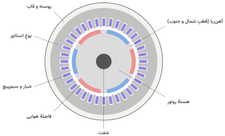
8.3.2 هسته و ورقهای فولادِ الکتریکی
چرا ورق؟ شارِ متناوب در هر رسانا، از جمله خودِ آهن، جریانهای گردابی القا میکند که گرما میسازند. اگر هسته یکتکه بود، این جریانها حلقههای بزرگی میساختند. با تقسیمِ هسته به ورقهای نازک با عایقِ نازکی میانشان، هر حلقه به ضخامتِ یک ورق محدود میشود. تلفاتِ گردابیِ کلاسیک با مجذورِ ضخامت، مجذورِ بسامد و مجذورِ چگالیِ شار بالا میرود:
\[ p_\text{e} = \frac{\pi^2\,\sigma\,t^2\,f^2\,B^2}{6\,\rho_\text{m}}\ \ \text{W/kg} \tag{8.20}\]
که \(\sigma\) رسانایی، \(t\) ضخامت و \(\rho_\text{m}\) چگالیِ فولاد است. فولادِ الکتریکی با کمی سیلیسیم رساناییاش کمتر و تلفاتِ پسماندش (انرژیِ چرخشِ حوزههای مغناطیسی در هر دوره) کم است؛ ورقهای دانهگرا (برای ترانسفورماتور، شار در یک جهت) و غیردانهگرا (برای ماشینهای گردان، شار در همهٔ جهتها) دو خانوادهٔ اصلیاند.
مثال 8.29 (ضخامتِ ورق و تلفات) پرسش. تلفاتِ گردابیِ کلاسیک را برای ورقهای 0.35، 0.50 و 1.00 mm در 50 Hz و 57.75 Hz با 1.5 T حساب کنید (A-118، فرضی).
پاسخ.
classical eddy-current loss p = pi^2 sigma t^2 f^2 B^2 / (6 rho),
B 1.5 T, sigma 2 MS/m (A-118):
sheet 0.35 mm at 50.00 Hz: 0.30 W/kg
sheet 0.35 mm at 57.75 Hz: 0.40 W/kg
sheet 0.50 mm at 50.00 Hz: 0.60 W/kg
sheet 0.50 mm at 57.75 Hz: 0.81 W/kg
sheet 1.00 mm at 50.00 Hz: 2.42 W/kg
sheet 1.00 mm at 57.75 Hz: 3.23 W/kg
a solid 20 mm plate (formula far outside its range): 968 W/kg
loss grows with thickness squared: cores are stacks of thin,
insulated sheets. This is only the classical eddy part:
hysteresis (about proportional to f) and excess losses make
the measured total several times larger; data sheets give
the total in W/kg at stated B and fتفسیر. دو برابر شدنِ ضخامت تلفاتِ گردابی را چهار برابر میکند. اما این رابطه فقط بخشِ «کلاسیک» است و برگههای دادهٔ فولاد تلفاتِ کل را میدهند (پسماند و تلفاتِ اضافی هم)، که چند برابرِ این عددهاست؛ طراح با منحنیهای سازنده کار میکند. ژنراتورِ نیروگاه با 57.75 Hz کمی تلفاتِ هستهٔ بیشتری از ماشینِ 50 Hz دارد؛ ماشینهایی که با بسامدِ بالا کار میکنند (یا هارمونیکهای مبدّل را میبینند، فصلِ ۹) ورقهای نازکتر میخواهند. فرایند: برش (پانچ یا لیزر) لبههای ورق را تنشدار و تلفات را بیشتر میکند؛ پرداختِ حرارتی و کنترلِ پلیسه در ساخت مهماند (بخش 8.4.5).
8.3.3 سیمپیچها و ضریبِ سیمپیچ
دو خانواده. سیمپیچِ کلافیِ شکلداده از هادیهای تختِ مسی که پیش از جاگذاری به شکلِ نهایی خم و عایق میشوند: برای ماشینهای بزرگ و ولتاژِ متوسط، با عایقِ دقیق و کنترلپذیر. سیمپیچِ تصادفی از سیمِ گردِ لاکی که در شیار ریخته میشود: برای ماشینهای کوچک و ولتاژپایین، ارزانتر اما با کنترلِ کمتر بر جای هر دور. ماشینهای چندمگاواتیِ ولتاژپایین هادیهای موازی و جابهجایی (ترانسپوزیسیون) دارند تا جریان میانِ رشتهها برابر پخش شود.
پخش و گام. سیمپیچِ هر فاز در چند شیارِ کنارِ هم پخش میشود (\(q\) شیار در هر قطب و فاز). ولتاژهای این شیارها کمی اختلافِ فاز دارند و مجموعشان از جمعِ حسابی کمتر است: ضریبِ پخش \(k_d\). اگر هر کلاف کمتر از یک گامِ قطب را بپوشاند (گامِ کوتاه \(y\))، ضریبِ گام \(k_p = \sin(y\pi/2)\) هم وارد میشود. برای هارمونیکِ \(h\) همین ضریبها با \(h\) برابر زاویه حساب میشوند:
\[ k_{d,h} = \frac{\sin(h\,q\,\gamma/2)}{q\,\sin(h\,\gamma/2)}, \qquad k_{p,h} = \sin\!\left(h\,y\,\frac{\pi}{2}\right), \qquad k_{w,h} = k_{d,h}\,k_{p,h} \tag{8.21}\]
با \(\gamma\) زاویهٔ الکتریکیِ میانِ دو شیار.
مثال 8.30 (گامِ ۵/۶ و هارمونیکها) پرسش. برای \(q = 3\) (زاویهٔ شیار \(20^\circ\))، ضریبِ سیمپیچ را برای مرتبههای ۱، ۵، ۷، ۱۱ و ۱۳ با گامِ کامل، ۵/۶ و ۷/۹ بیابید.
پاسخ.
distributed winding, q = 3 slots per pole and phase,
20 electrical deg per slot; k_w for orders 1, 5, 7, 11, 13:
pitch 1.000: 0.960, 0.218, 0.177, 0.177, 0.218
pitch 0.833: 0.927, 0.056, 0.046, 0.171, 0.210
pitch 0.778: 0.902, 0.038, 0.136, 0.136, 0.038
a 5/6 pitch gives up 3.4 % of the fundamental and cuts the
5th and 7th harmonics of the EMF to about a quarterتفسیر. گامِ ۵/۶ فقط 3.4 % از مؤلفهٔ اصلی میگیرد اما هارمونیکهای پنجم و هفتمِ نیروی محرکه را به حدودِ یکچهارم کم میکند؛ گامِ ۷/۹ هارمونیکِ پنجم و سیزدهم را تقریباً حذف میکند و هفتم را کمتر. طراح با گام و پخش شکلِ موجِ ولتاژ را سینوسیتر میکند و تلفاتِ اضافی و گشتاورِ ضربانی را کم (فصلِ ۷، بخش 7.4.7). سرهای کوتاهترِ سیمپیچِ گامکوتاه مس و تلفات را هم کم میکنند.
- چرا تلفاتِ گردابی با مجذورِ ضخامتِ ورق بالا میرود؟
- تفاوتِ فولادِ دانهگرا و غیردانهگرا و کاربردِ هر کدام چیست؟
- سیمپیچِ کلافیِ شکلداده چه مزیتی بر سیمپیچِ تصادفی دارد؟
- با گامِ ۲/۳، ضریبِ گامِ هارمونیکِ سوم چیست و چه معنایی دارد؟
- چرا هادیهای موازیِ یک فاز جابهجا (ترانسپوز) میشوند؟
8.3.4 سامانهٔ عایق
لایهها. عایقِ یک سیمپیچِ کلافی چند لایه دارد (شکل 8.15): عایقِ رشته (میانِ رشتههای موازی)، عایقِ دور (میانِ دورهای یک کلاف)، عایقِ اصلی یا دیوارهٔ زمین (میانِ هادی و هستهٔ زمینشده، ضخیمترین لایه)، عایقِ شیار و گوهای که کلاف را در شیار میبندد، و در ماشینهای ولتاژِ متوسط پوششِ نیمهرسانا در شیار و پوششِ کنترلِ تنش در خروجِ شیار تا میدانِ الکتریکی تیز نشود. آغشتهسازیِ خلأ–فشار (VPI) همهٔ این لایهها را با رزین پر و یکپارچه میکند: حفرههای هوا حذف میشوند (حفرهها جای تخلیهٔ جزئیاند) و گرما بهتر به هسته میرود.
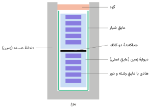
کلاسِ گرمایی و عمر. سامانههای عایق با کلاسِ گرمایی ردهبندی میشوند، دمایی که سامانه برای عمرِ مورد انتظار در آن ارزیابی شده است؛ روشِ ارزیابی و نامگذاریِ کلاسها در استانداردِ ارزیابیِ گرماییِ عایق آمده است (جعبهٔ استاندارد). کلاسها با عددهای دما (برای نمونه 130، 155، 180) و در کاربردِ رایج با حرف شناخته میشوند. فرسودگیِ عایق یک واکنشِ شیمیایی است و تقریباً از قانونِ آرنیوس پیروی میکند (فصلِ ۴، A-065): هر ده درجه گرمِ بیشتر، عمر تقریباً نصف میشود. طراحانِ محتاط ماشین را برای کلاسی بالاتر از دمای کارش میسازند: حاشیهٔ گرمایی یعنی عمرِ بیشتر.
تنشِ مبدّل. مبدّل ولتاژ را با پالسهای سریع میسازد. روی کابلِ بلند میانِ مبدّل و ماشین، پالسها بازتاب میکنند و در پایانهٔ ماشین تا نزدیکِ دو برابرِ ولتاژِ پیوندِ DC میرسند، با شیبِ بسیار تند. این تنش بیشتر روی دورهای اول سیمپیچ میافتد و اگر از آستانهٔ تخلیهٔ جزئیِ عایق بگذرد، عایق را ظرفِ ماهها تا چند سال میخورد. ماشینهای مبدّلتغذیه برای این تنش طراحی و آزموده میشوند و گاهی صافیِ شیب (صافیِ \(\mathrm{d}v/\mathrm{d}t\)) میانِ مبدّل و ماشین گذاشته میشود (بخش 8.5.1).
مثال 8.31 (عمرِ عایق و تنشِ پالس) پرسش. عمرِ نسبیِ عایق را در دماهای 110 تا 150 °C نسبت به 130 °C با انرژیِ فعالسازیِ 100 kJ/mol بیابید. ماشینِ 690 Vای که از مبدّلی با پیوندِ 1100 V تغذیه میشود، در بدترین حالت چه قلهٔ ولتاژی در پایانه میبیند؟
پاسخ.
Arrhenius life relative to 130 C (Ea 100 kJ/mol, A-065):
hot spot 110 C: life x 4.75
hot spot 120 C: life x 2.14
hot spot 130 C: life x 1.00
hot spot 140 C: life x 0.49
hot spot 150 C: life x 0.24
converter-fed winding (A-118): DC link 1100 V, fast switching
a reflected wave on a long cable can reach about
2200 V peak line to line at the terminals, against
976 V peak of a 690 V sine: about 2.3 times
so converter-fed insulation is designed and tested for repetitive
impulses (partial discharge), not only for the sineتفسیر. بیست درجه خنکتر یعنی تقریباً پنج برابر عمر: خنککاری مستقیماً عمرِ ماشین است. قلهٔ پالسِ بازتابی 2.3 برابرِ قلهٔ سینوسیِ ولتاژِ خط است: عایقِ «معمولیِ» 690 V برای این تنش ساخته نشده است. شکل 8.16 رابطهٔ عمر و دما را نشان میدهد.
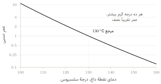
- لایههای عایقِ یک کلافِ شکلداده را از درون به بیرون نام ببرید.
- چرا حفرههای هوا در عایقِ ولتاژِ متوسط خطرناکاند و آغشتهسازی چه میکند؟
- اگر دمای نقطهٔ داغ از 120 به 140 °C برود، عمر تقریباً چند برابر میشود؟
- چرا تنشِ پالسِ مبدّل بیشتر روی دورهای اولِ سیمپیچ میافتد؟
- صافیِ شیب میانِ مبدّل و ماشین چه میکند؟
8.3.5 روتور: آهنربا، سیمپیچی یا قفسه
روتورِ آهنربای دائم. آهنرباهای نئودیمیوم–آهن–بور بیشترین انرژیِ مغناطیسی را در کمترین حجم دارند. دو آرایش رایج است: آهنربا روی سطحِ روتور، چسبیده و با نوار یا غلاف بستهشده تا در سرعتِ زیاد جدا نشود؛ یا درونِ روتور در شکافهای ورقها، که از نظرِ مکانیکی و مغناطیسی محافظتشدهتر است. آهنرباها سه حساسیت دارند: دما (شارشان با گرم شدن کم میشود)، میدانِ مخالف (جریانِ خطای بزرگ با دمای بالا میتواند آنها را برای همیشه مغناطیسزدایی کند) و خوردگی (پوشش لازم دارند). در مونتاژ، نیروی جاذبهٔ روتورِ آهنربادار و استاتور بسیار بزرگ است و ابزار و رویهٔ ویژه میخواهد (هشدارِ ایمنیِ فصل).
مثال 8.32 (آهنربای گرم) پرسش. آهنربایی با پسماندِ 1.2 T در 20 °C و ضریبِ دمایی −0.12 %/K (A-118، فرضی) در دماهای کار چه پسماندی دارد؟ ولتاژ و گشتاورِ ماشین در هر آمپر چه میشوند؟
پاسخ.
NdFeB magnet: remanence 1.2 T at 20 C, coefficient -0.12 %/K (A-118):
20 C: Br 1.200 T; EMF and torque per ampere x 1.000
60 C: Br 1.142 T; EMF and torque per ampere x 0.952
100 C: Br 1.085 T; EMF and torque per ampere x 0.904
140 C: Br 1.027 T; EMF and torque per ampere x 0.856
hot magnets give less flux; too hot plus a strong opposing field
(a fault current) can demagnetise them for good: rotor cooling
and converter current limits protect the magnetsتفسیر. در 140 °C، حدودِ 14 % شار کمتر: ماشین برای همان گشتاور جریانِ بیشتری میکشد، تلفاتِ مسی بالا میرود و ماشین گرمتر میشود: یک بازخوردِ مثبت که خنککاریِ روتور باید جلویش را بگیرد. ولتاژِ کمترِ آهنربای گرم را مبدّل جبران میکند، تا جایی که ولتاژِ پیوندِ DC اجازه دهد.
روتورِ سیمپیچیشده. در ماشینهای همگام با تحریکِ الکتریکی و در ماشینِ دوسوتغذیه، روتور سیمپیچ و عایق و حلقههای لغزان دارد. حلقه و جاروبک سایش و گرد و نگهداری دارند و یکی از منبعهای خرابیِ ماشینهای دوسوتغذیهاند. سیمپیچِ روتور نیرویی بزرگ از گریز از مرکز حس میکند و سرهایش با حلقههای نگهدارنده بسته میشوند.
روتورِ قفسهای. میلههای آلومینیومِ ریختهگریشده یا مسِ لحیمشده در شیارهای روتور، با حلقههای انتهایی. ساده و محکم؛ خرابیِ معمولش ترکِ میله در اتصال به حلقه، که در پایشِ جریانِ موتور با نوارهای کناری در طیف دیده میشود (بخش 8.5.4). بسامدِ جریانِ روتور در کارِ عادی \(s f\) است، چند هرتز (سطرِ E13).
8.3.6 شفت، یاتاقان و جریانهای یاتاقان
شفت و کوپلینگ. شفت گشتاور را از گیربکس میگیرد و وزنِ روتور و نیروی مغناطیسیِ نامتقارن را به یاتاقانها میدهد. کوپلینگِ میانِ گیربکس و ژنراتور ناهممحوریِ کوچک را جبران و گاهی از گشتاورِ ناگهانی (اتصالِ کوتاه) با یک لغزندهٔ ایمنی محافظت میکند. هممحوری در نصب یکی از وارسیهای مهمِ راهاندازی است (فصلهای ۴۹ و ۵۰).
یاتاقانها. ژنراتورهای توربین معمولاً یاتاقانِ غلتشی (ساچمهای یا غلتکی) با گریس دارند. عمرِ پایهٔ یاتاقان با نسبتِ ظرفیتِ بار به بارِ معادل، \(C/P\)، به توانِ سه (ساچمه) یا دهسوم (غلتک) بالا میرود؛ ده درصد بارِ بیشتر، عمرِ ساچمهای را حدودِ یکچهارم کم میکند (سطرِ E14). اما در عمل روانکاری، آلودگی، ناهممحوری و جریانِ الکتریکی عمرِ واقعی را بیشتر از فرمول تعیین میکنند.
جریانهای یاتاقان. مبدّل ولتاژِ حالتِ مشترکی میسازد که از راهِ ظرفیتهای پراکندهٔ سیمپیچ به روتور و شفت میرسد. اگر ولتاژِ شفت از استقامتِ لایهٔ روغنِ یاتاقان بگذرد، جرقههای کوچکی از یاتاقان میگذرند و سطحِ مسیر را شیاردار میکنند (نقشی مانندِ تختهشوی). تدبیرها: یاتاقانِ عایق (معمولاً در سمتِ غیرمحرک)، جاروبکِ زمینِ شفت، کابلکشیِ متقارن و زمینکردنِ درست، و صافیِ حالتِ مشترک.
مثال 8.33 (بسامدهای خرابیِ یاتاقان و عمر) پرسش. یاتاقانِ ژنراتور (A-116، فرضی) ۱۴ ساچمهٔ 40 mmی روی قطرِ گامِ 220 mm دارد و در 1155 rpm میچرخد. بسامدهای نوعیِ خرابی (حلقهٔ بیرونی، حلقهٔ درونی، چرخشِ ساچمه، قفسه) و عمرِ پایه برای چند نسبتِ \(C/P\) را بیابید.
پاسخ.
generator bearing (A-116): 14 balls, 40 mm, pitch 220 mm, 1155 rpm
shaft 19.25 Hz; outer race 110.2 Hz, inner race 159.2 Hz
ball spin 51.2 Hz, cage 7.87 Hz
life (C/P)^3 x 10^6 rev, C/P 8: 7,388 h
life (C/P)^3 x 10^6 rev, C/P 12: 24,935 h
life (C/P)^3 x 10^6 rev, C/P 16: 59,105 h
20 years is about 175,000 h: bearings are chosen with margin and
monitored; lubrication, contamination and shaft currents decide
the real life more often than the formula (section D)تفسیر. هر نقص در یک حلقه، هر بار که ساچمه از رویش رد شود، یک ضربه میسازد؛ این ضربهها با بسامدهای بالا تکرار میشوند، 110.2 Hz برای حلقهٔ بیرونی (بخش 8.5.4). بسامدهای خرابی مضربهای غیرصحیحِ سرعتِ شفتاند (5.73 و 8.27 برابر، سطرِ E21)، پس از هارمونیکهای شفت قابلِ تفکیکاند. عمرِ پایه با \(C/P = 16\) حدودِ یکسومِ عمرِ بیستساله است: یاتاقان قطعهای است که پایش و تعویض میشود، نه قطعهای برای همهٔ عمر.
8.3.7 خنککاری و پوسته
روشها. گرمای تلفات از سیمپیچ و هسته به یک سیال (هوا یا مایع) و از آن به محیط میرود. ماشینهای کوچک با فنِ روی شفت و پرّههای پوسته خنک میشوند؛ ژنراتورهای توربین معمولاً خنککاریِ هوایی در مدارِ بسته با مبدّلِ گرماییِ هوا به آب، یا ژاکتِ آبی دورِ استاتور دارند و آب–گلیکول گرما را به رادیاتورِ ناسل میبرد. نامگذاریِ استانداردِ روشهای خنککاری و درجهٔ حفاظتِ پوسته (کدِ IP: نفوذِ جسمِ جامد و آب) روی پلاک میآید.
محیطِ توربین. هوای ناسل ممکن است گرم، مرطوب، نمکی (نزدیکِ دریا) یا پرگرد باشد؛ ارتفاعِ زیاد چگالیِ هوا و توانِ خنککاریِ هوایی را کم میکند (فصلِ ۴). گرمکنِ ضدِ میعان، هنگامِ توقف، از نشستنِ رطوبت روی عایق جلوگیری میکند.
مثال 8.34 (هوا یا آب برای 159 kW) پرسش. تلفاتِ نامیِ 158.7 kW ژنراتور (A-120، فرضی) را با هوا (افزایشِ دمای 20 K) یا آب (8 K) ببرید. دبیِ لازم چیست؟
پاسخ.
removing 158.7 kW of generator losses (A-120):
air, 20 K rise: 6.58 m3/s (23,687 m3/h)
water-glycol taken as water, 8 K rise: 4.75 kg/s (285 kg/min)
water carries the heat in a far smaller volume; the nacelle air
must still take it out through a heat exchangerتفسیر. 6.6 m³/s هوا در برابرِ 4.75 kg/s آب: ظرفیتِ گرماییِ حجمیِ آب حدودِ ۳۵۰۰ برابرِ هواست، پس مایع کانالهای بسیار کوچکتری میخواهد و ماشین فشردهتر میشود. هزینهاش پمپ، نشتی، کیفیتِ آب و ضدیخ است. در هر حال گرما سرانجام به هوای بیرونِ ناسل میرود.
8.3.8 رابطهای زیرمجموعهها
ژنراتور محصولی است که از چند زیرمجموعه ساخته و به چند سامانه وصل میشود. هر رابط یک مسئولیت و یک سند دارد:
| رابط | از | به | آنچه باید تعریف شود |
|---|---|---|---|
| مکانیکیِ محور | گیربکس | شفتِ ژنراتور | گشتاورِ نامی و ناگهانی، کوپلینگ، هممحوری، سرعتِ بیشینه |
| نصب | قابِ ناسل | پایههای ژنراتور | بارها، سفتی، لرزشگیر، پیچ و گشتاورِ سفتکردن |
| الکتریکیِ قدرت | سیمپیچِ استاتور | مبدّل | ولتاژ، جریان، بسامد، تنشِ پالس، کابلکشی، زمین |
| خنککاری | ژاکت یا مبدّلِ گرمایی | مدارِ خنککاریِ ناسل | دبی، دما، فشار، کیفیتِ سیال |
| پایش و حفاظت | حسگرهای ماشین | کنترلگرِ توربین | دماسنجهای سیمپیچ و یاتاقان، لرزش، سرعت، گرمکن |
| زمین و صاعقه | بدنه و شفت | سامانهٔ زمینِ توربین | مسیرِ جریانِ صاعقه از کنارِ یاتاقانها، جاروبکِ شفت |
هر رابطِ نادرستتعریفشده خرابیِ «میانِ دو مسئول» میسازد: یاتاقانِ ژنراتوری که با جریانِ صاعقهای که از راهِ شفت گذشته خراب شده، یا عایقی که تنشِ پالسِ کابلِ بلندی را دیده که مشخصهاش نیامده بود. فصلِ ۲۳ رابطها را در سطحِ نیروگاه مدیریت میکند.
- سه حساسیتِ آهنربای نئودیمیوم را بنویسید.
- چرا حلقه و جاروبک منبعِ خرابیاند و کدام معماری آنها را ندارد؟
- جریانِ یاتاقان از کجا میآید و دو تدبیر برایش بنویسید.
- چرا آب گرما را در حجمِ کمتری از هوا میبرد؟
- گرمکنِ ضدِ میعان کِی روشن است و چرا؟
- برای رابطِ «الکتریکیِ قدرت» چهار دادهٔ لازم را بنویسید.
8.3.9 موادِ سیمپیچ و آهنربا
مس یا آلومینیوم. مس رسانایی بیشتری دارد؛ آلومینیوم سبکتر و ارزانتر است. برای مقاومتِ برابر، هادیِ آلومینیومی سطحِ مقطعِ بزرگتر اما جرمِ کمتری میخواهد. در ماشینها مس رایجتر است، چون شیار جا را محدود میکند؛ قفسهٔ روتورِ موتورهای کوچک معمولاً آلومینیومِ ریختهگری است. انتخاب پیامدِ فرایندی هم دارد: اتصالِ آلومینیوم دشوارتر و حساس به خوردگیِ گالوانیک است (فصلِ ۴).
خانوادههای آهنربا. نئودیمیوم–آهن–بور بیشترین پسماند را دارد اما به دما حساس است و به عنصرهای خاکِ کمیاب وابسته؛ ساماریم–کبالت پسماندِ کمتر اما پایداریِ دماییِ بسیار بهتر دارد و گرانتر است؛ فریت ارزان و فراوان است اما شارِ آن کم است و ماشین را بزرگتر میکند. انتخاب میانِ عملکرد، دمای کار، هزینه و ریسکِ زنجیرهٔ تأمین است (فصلهای ۳۹ و ۴۲).
مثال 8.35 (آلومینیوم، مس و سه آهنربا) پرسش. برای مقاومتِ برابر، نسبتِ سطحِ مقطع و جرمِ آلومینیوم به مس چیست؟ سه خانوادهٔ آهنربا را با پسماند، ضریبِ دمایی و دمای کار مقایسه کنید (A-118 و A-125، مقدارهای آموزشیِ نوعی).
پاسخ.
aluminium instead of copper for the same resistance:
area x 1.64, mass x 0.49 (lighter, bulkier)
magnet families (indicative, A-118 / A-125 teaching values):
NdFeB Br 1.20 T, -0.120 %/K, use up to about 150 C
SmCo Br 1.05 T, -0.035 %/K, use up to about 300 C
ferrite Br 0.40 T, -0.200 %/K, use up to about 250 C
ferrite needs about three times the magnet area for the same fluxتفسیر. آلومینیوم با نصفِ جرم همان مقاومت را میدهد اما 64 % جای بیشتر میخواهد. ماشینی با آهنربای فریت برای همان شار حدودِ سه برابر سطحِ آهنربا میخواهد؛ گزینهای که ریسکِ خاکِ کمیاب را با جرم و حجمِ بیشتر عوض میکند. مقدارهای واقعی را برگهٔ دادهٔ هر درجهٔ آهنربا میدهد.
8.3.10 صدا و لرزشِ الکترومغناطیسی
منبع. نیروهای مغناطیسیِ فاصلهٔ هوایی صاف نیستند: هر بار که یک قطب از جلوی یک شیار میگذرد، نیرو کمی تغییر میکند. این تغییرها در بسامدِ گذرِ شیار، \(f = N_\text{slot} \times f_r\)، و مضربهایش پوستهٔ ماشین را میلرزانند و صدای تونال میسازند. در توربینِ بادی، تونِ ناسل میتواند از برج و پرهها پخش شود و در ارزیابیِ صدا جریمهٔ «تونالیته» بگیرد (فصلهای ۴ و ۳۳). مبدّل هم با بسامدِ کلیدزنیاش تون میسازد. تدبیرها: چولگیِ شیارها یا آهنرباها، انتخابِ ترکیبِ شیار و قطب، سفتیِ پوسته و پایههای لرزشگیر.
مثال 8.36 (تونِ گذرِ شیار) پرسش. ژنراتورِ A-111 با ۵۴ شیار (A-125، فرضی) در 1155 و 700 rpm چه بسامدِ گذرِ شیاری دارد؟
پاسخ.
geared generator with 54 stator slots (q 3, 6 poles; A-125):
slot-passing frequency 54 x 19.25 Hz = 1039.5 Hz
at 700 rpm: 630 Hz (moves with speed)
at 1155 rpm: 1040 Hz (moves with speed)
a tone in the nacelle can radiate; tonality is judged in the
noise assessment (chapter 33); skewing and slot design reduce itتفسیر. تونِ 1040 Hz در محدودهای است که گوش حساس است؛ چون با سرعت جابهجا میشود، ممکن است در سرعتی با یک بسامدِ طبیعیِ پوسته یا ناسل همنوا شود و بلند شود. سازنده با آزمونِ صدا در کارخانه و میدان این را میپاید و ارزیابیِ صدای نیروگاه آن را میسنجد.
- چرا قفسهٔ روتورِ موتورهای کوچک آلومینیوم است و سیمپیچِ ژنراتورهای بزرگ مس؟
- سه خانوادهٔ آهنربا را با یک مزیت و یک عیب مقایسه کنید.
- بسامدِ گذرِ شیارِ ماشینِ ۷۲شیاری در 1500 rpm؟
- چولگی چگونه صدای مغناطیسی را کم میکند؟
8.3.11 عمرِ یاتاقان با طیفِ بارِ واقعی
ایده. عمرِ پایه با \((C/P)^3\) برای یک بارِ ثابت است (مثال 8.33). ژنراتورِ توربین با بار و سرعتِ همیشه متغیر کار میکند. قاعدهٔ رایج (از خانوادهٔ قاعدهٔ «ماینر»، فصلِ ۴) یک بارِ معادل میسازد که همان خستگی را بدهد:
\[ P_\text{eq} = \left(\frac{\sum_i P_i^3\,N_i}{\sum_i N_i}\right)^{1/3} \tag{8.22}\]
با \(N_i\) تعدادِ دورها در بارِ \(P_i\). بارِ یاتاقان بخشی ثابت (وزنِ روتور، کششِ مغناطیسیِ نامتقارن) و بخشی وابسته به گشتاور دارد.
مثال 8.37 (عمرِ یاتاقان در سالِ بستهٔ داده) پرسش. با بارِ یاتاقانِ 40 % ثابت و 60 % متناسب با بار (A-134، فرضی)، و سرعتی که با باد تغییر میکند، بارِ معادل و عمرِ پایه با \(C/P = 12\) در بارِ نامی را برای سالِ بستهٔ داده (1.1.0) حساب کنید.
پاسخ.
bearing load = 40 % fixed (weight, magnetic pull) + 60 % with load (A-134)
equivalent load over the data-pack year 0.738 of the rated-load value
revolutions per year 450 million (speed follows the wind)
C/P 12 at rated: 24,935 h at rated speed;
with the real spectrum about 9.5 years
the load spectrum, not the rated point, sets the life (Miner-type rule)تفسیر. بارِ معادل 74 % بارِ نامی است و دورهای سالانه کمتر از کارِ دائم در سرعتِ نامی؛ عمرِ پایه از سه سال (اگر همیشه در بارِ نامی کار کند) به حدودِ نُه سال و نیم میرسد. یعنی در بیست سال حدودِ دو تعویضِ یاتاقان برای هر ژنراتور: عددی برای برنامهٔ نگهداری و یدکها (بخش 8.5.8). محدودیت: عمرِ پایه احتمالِ خرابیِ معینی را بیان میکند و روانکاری و آلودگی و جریانِ یاتاقان آن را بسیار تغییر میدهند؛ سازندهٔ یاتاقان روشهای اصلاحشدهای برای این اثرها دارد.
- چرا بارِ معادل با توانِ سه میانگین گرفته میشود؟
- اگر بخشِ ثابتِ بار بیشتر شود، بارِ معادل به بارِ نامی نزدیکتر میشود یا دورتر؟
- چرا عمرِ پایه یک «احتمال» است؟
8.3.12 ترکیبِ شیار و قطب: گشتاورِ دندانهای و ضریبِ سیمپیچ
گشتاورِ دندانهای. در ماشینِ آهنربای دائم، آهنرباها حتی بیجریان دندانههای استاتور را میکشند. اگر شفت را با دست بچرخانید، روتور در جاهایی «گیر» میکند: این گشتاورِ دندانهای (به انگلیسی cogging torque) است. در یک دور، الگوی کشش به تعدادِ کوچکترین مضربِ مشترکِ شیارها \(Q\) و قطبها \(p\)، یعنی \(\operatorname{lcm}(Q, p)\)، بار تکرار میشود. قاعدهٔ تجربیِ طراحان: هرچه این عدد بزرگتر (و بزرگترین مقسومعلیهِ مشترک، \(\gcd(Q, p)\)، کوچکتر) باشد، کششهای دندانههای مختلف بیشتر یکدیگر را خنثی میکنند و گشتاورِ دندانهای ضعیفتر و پربسامدتر است. گشتاورِ دندانهای همراهِ ضربانِ گشتاورِ بار (برهمکنشِ هارمونیکهای میدان) لرزش و صدا میسازد (بخش 8.3.10)، و در ژنراتورِ بیگیربکس آغازِ چرخش در بادِ کم را سختتر میکند.
سه ابزارِ طراح. (۱) ترکیبِ شیار و قطب: سیمپیچِ کسری (\(q\) غیرصحیح) یا کلافِ دندانهای (هر کلاف دورِ یک دندانه، \(y = 1\)) \(\operatorname{lcm}\) را بالا میبرد. (۲) چولگی: شیارها یا آهنرباها در طولِ ماشین به اندازهٔ زاویهٔ \(\theta_\text{sk}\) پیچانده میشوند (در ماشینهای آهنربایی معمولاً با چند پلهٔ آهنربا)؛ نیروی محرکهٔ هارمونیکِ \(h\) با ضریبِ زیر کم میشود:
\[ k_{\text{sk},h} = \frac{\sin(h\,\theta_\text{sk}/2)}{h\,\theta_\text{sk}/2} \tag{8.23}\]
که \(\theta_\text{sk}\) زاویهٔ الکتریکیِ چولگی است. (۳) شکلِ آهنربا و دهانهٔ شیار. هر سه هزینه دارند: سیمپیچِ کلافِ دندانهای سرهای کوتاه و ساختِ ساده دارد، اما ضریبِ سیمپیچِ اصلیِ کمتر و هارمونیکهای فضاییِ بیشتر، که در آهنربا و روتور تلفات میسازند؛ چولگی کمی از نیروی محرکهٔ اصلی میگیرد و ساخت را پیچیدهتر میکند.
ضریبِ سیمپیچ برای هر ترکیب. معادلهٔ 8.21 برای سیمپیچِ با \(q\) صحیح است. برای ترکیبهای کسری از روشِ ستارهٔ شیارها استفاده میشود:
۱. زاویهٔ الکتریکیِ هر شیار \(k\) را بنویسید: \(\alpha_k = k\,(p/2)\,360^\circ/Q\) (با \(p\) قطب، یعنی \(p/2\) جفتقطب).
۲. هر کلاف (رفت در شیارِ \(k\)، برگشت در شیارِ \(k + y\)) را به فازی بدهید که کمربندِ \(60^\circ\)ِ آن زاویهٔ \(\alpha_k\) را در بر دارد، با علامتِ مثبت یا منفی.
۳. فازورهای کلافهای فازِ A را جمعِ برداری کنید و بر جمعِ حسابیِ اندازهها تقسیم کنید.
def winding_factor(slots: int, poles: int, span: int, harmonic: int = 1) -> float:
"""Winding factor of a balanced double-layer three-phase winding by the
star of slots: one coil starts in every slot (top side in slot k, return
side in slot k + span); a coil belongs to the phase whose 60-degree belt
holds the angle of its top side. Returns |sum of phase-A coil EMFs| over
the arithmetic sum (2 per coil)."""
pp = poles // 2
if poles % 2 or (slots // math.gcd(slots, pp)) % 3:
raise ValueError("not a balanced three-phase winding")
total, count = 0j, 0
for k in range(slots):
ang = (k * pp * 360.0 / slots) % 360.0
belt = int(((ang + 30.0) % 360.0) // 60.0) # 0 A+, 3 A-, others B, C
if belt not in (0, 3):
continue
sign = 1 if belt == 0 else -1
a1 = math.radians(harmonic * k * pp * 360.0 / slots)
a2 = math.radians(harmonic * (k + span) * pp * 360.0 / slots)
total += sign * (complex(math.cos(a1), math.sin(a1))
- complex(math.cos(a2), math.sin(a2)))
count += 1
return abs(total) / (2 * count)مثال 8.38 (هفت ترکیب برای ژنراتورِ تندگرد) پرسش. برای ژنراتورِ 1155 rpm (A-047)، ضریبِ سیمپیچِ اصلی، \(\operatorname{lcm}\) و \(\gcd\)، بسامدِ گشتاورِ دندانهای و بسامدِ الکتریکی را برای هفت ترکیبِ شیار و قطب (A-142، فرضی) بیابید. اثرِ چولگیِ یک گامِ شیار را بر ترکیبِ ۵۴ شیار و ۶ قطب (A-125) حساب کنید.
پاسخ.
slot-pole choices for the geared generator at 1155 rpm (A-142):
Q / p winding k_w1 lcm gcd cogging Hz f_el Hz
54/6 q 3, full pitch 0.960 54 6 1040 57.75
54/6 q 3, 8/9 pitch 0.945 54 6 1040 57.75
48/8 q 2, 5/6 pitch 0.933 48 8 924 77.00
54/8 q 2.25 0.954 216 2 4158 77.00
36/8 q 1.5 0.945 72 4 1386 77.00
12/10 tooth coils 0.933 60 2 1155 96.25
9/8 tooth coils 0.945 72 1 1386 77.00
higher lcm and lower gcd: weaker, higher-frequency cogging;
tooth coils: short end windings, but lower k_w1 and more
air-gap harmonics (rotor and magnet losses)
54/6 skewed one slot pitch (6.67 deg mech = 20 deg el):
k_skew 0.9949: the EMF falls by 0.5 %,
and the slot-harmonic EMFs (17th, 19th) are multiplied
by 0.059 and 0.052تفسیر. ترکیبِ پایه (۵۴/۶، \(q = 3\)) بهترین ضریبِ سیمپیچ را دارد، اما \(\operatorname{lcm}\) آن فقط ۵۴ و \(\gcd\) آن ۶ است: گشتاورِ دندانهای قوی در همان 1040 Hzِ تونِ گذرِ شیار (مثال 8.36). ترکیبِ کسریِ ۵۴/۸ (\(q = 2.25\)) با \(\operatorname{lcm}\) ۲۱۶ و \(\gcd\) ۲ گشتاورِ دندانهایِ بسیار ضعیفتری دارد و ضریبِ سیمپیچش هم بالا است؛ بهایش هشت قطب و بسامدِ الکتریکیِ 77 Hz است که مبدّل باید آن را بپذیرد (بخش 8.5.1) و تلفاتِ هسته را بالا میبرد. کلافهای دندانهای (۱۲/۱۰، ۹/۸) \(\gcd\) کوچک دارند اما ضریبِ سیمپیچِ کمتر و هارمونیکهای فضاییِ بیشتر. چولگیِ یک گامِ شیار در ۵۴/۶ فقط 0.5 % از نیروی محرکه میگیرد اما هارمونیکهای شیاری (۱۷ و ۱۹) را به حدودِ 5 % میرساند. هیچ ترکیبی «بهترین» نیست؛ این یک مصالحهٔ طراحیِ ماشین است (بخش 8.4.9) که با تحلیلِ میدانِ عددی و آزمونِ نمونه بسته میشود.
قاعدهٔ \(\operatorname{lcm}\) و \(\gcd\) فقط جهت را نشان میدهد. اندازهٔ واقعیِ گشتاورِ دندانهای و ضربانِ گشتاور به شکلِ آهنربا، دهانهٔ شیار، اشباع و رواداریهای ساخت وابسته است و با تحلیلِ میدانِ عددی و آزمونِ نمونه تعیین میشود؛ خریدار آن را از برگهٔ داده و گزارشِ آزمونِ سازنده میخواهد.
- چرا ماشینِ آهنربای دائم بیجریان هم گشتاورِ دندانهای دارد؟
- برای ۷۲ شیار و ۸ قطب، \(\operatorname{lcm}\) و \(\gcd\) چیست؟
- چولگی به اندازهٔ یک گامِ شیار در ماشینِ ۷۲ شیار و ۸ قطب چند درجهٔ الکتریکی است؟
- دو مزیت و دو عیبِ سیمپیچِ کلافِ دندانهای را بنویسید.
- چرا ترکیبِ با قطبِ بیشتر بسامدِ الکتریکی و تلفاتِ هسته را بالا میبرد؟
8.4 ج. طراحی و تضمینِ تولید
بخشِ ج دو پرسش را دنبال میکند: ماشین چگونه از الزام به طراحی میرسد، و تولیدکننده چگونه نشان میدهد آنچه ساخته همان است که طراحی شده. وارسیهای این بخش مفهومیاند: اندازه و نسبت را درست میدهند و خطای بزرگ را میگیرند، اما طراحیِ تفصیلیِ الکترومغناطیسی، گرمایی و مکانیکی با ابزارهای عددیِ تخصصی و بهدستِ طراحِ صلاحیتدارِ ماشین انجام میشود (بخش 8.4.9).
برنامه:
companion/ch08/examples_c.py
8.4.1 از الزام تا طراحی
شکل 8.17 جریانِ کار را نشان میدهد. الزامها از توربین میآیند: توان و سرعت (از روتور و گیربکس)، بازهٔ سرعت، ولتاژ و رابط با مبدّل، محیط (دما، رطوبت، ارتفاع، خوردگی)، عمر و چرخهٔ بار، جرم و ابعادِ مجاز در ناسل، و الزامهای شبکه که از راهِ مبدّل به ماشین میرسند. طراحیِ الکترومغناطیسی ابعادِ اصلی، قطبها، شیارها، سیمپیچ و آهنربا را تعیین میکند؛ طراحیِ گرمایی دماها را با تلفات و خنککاری؛ طراحیِ مکانیکی شفت، یاتاقان، سرعتهای بحرانی، نیروهای مغناطیسی و پوسته را. این سه با هم تکرار میشوند، چون هر تغییر در یکی دو تای دیگر را جابهجا میکند. سپس طراحی برای ساخت: تلرانسها، فرایندها و نقطههای بازرسی؛ و راستیآزمایی با آزمونهای نمونه و کارخانهای.
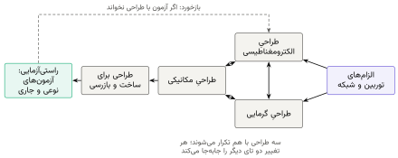
8.4.2 اندازهٔ الکترومغناطیسی: معادلهٔ خروجی
ایده. گشتاور از نیروی مماسیِ واحدِ سطح در فاصلهٔ هوایی، تنشِ برشیِ \(\sigma\)، ضربِ سطحِ روتور ضربِ شعاع میآید:
\[ T = \sigma\,(\pi D L)\,\frac{D}{2} = 2\,\sigma\,V_r, \qquad V_r = \frac{\pi D^2 L}{4} \tag{8.24}\]
\(\sigma\) حاصلضربِ چگالیِ شارِ فاصلهٔ هوایی و بارِ الکتریکی (آمپرِ هر متر از محیطِ استاتور) است و هر دو محدودیت دارند: شار با اشباع و بارِ الکتریکی با گرما. پس \(\sigma\) در بازهٔ محدودی میماند (چند ده کیلوپاسکال برای ماشینهای بزرگ؛ با خنککاریِ مایع بیشتر) و حجمِ روتور با گشتاور تعیین میشود. نسبتِ طول به قطر، \(L/D\)، را محدودیتهای دیگر (سرعتِ بحرانیِ شفت، طولِ ناسل، تعدادِ قطبها) تعیین میکنند.
مثال 8.39 (ابعادِ سه ماشین) پرسش. با \(\sigma = 40\ \text{kPa}\) (A-112)، قطر و طولِ روتور را برای ژنراتورِ گیربکسدارِ ۱ به ۱۱۰ (\(L/D = 1.4\))، سرعتِ متوسطِ ۱ به ۴۰ (\(L/D = 1\)) و بیگیربکس (\(L/D = 0.2\)) بیابید.
پاسخ.
conceptual size from torque, T = 2 sigma V_r, V_r = pi D^2 L / 4 (A-112):
geared 1:110 T 44 kN m: V_r 0.55 m3; L/D 1.4: D 0.79 m, L 1.11 m
geared 1:40 T 121 kN m: V_r 1.51 m3; L/D 1.0: D 1.24 m, L 1.24 m
direct drive T 4838 kN m: V_r 60.48 m3; L/D 0.2: D 7.27 m, L 1.45 m
the 0.8 m x 1.1 m of A-111 sits close to the geared result;
shear stress, cooling and the gap set the real numbers: a
machine designer's task (C.6)تفسیر. ماشینِ بیگیربکس قطری بیش از هفت متر میخواهد: یک حلقهٔ بزرگ و کمعمق، با فاصلهٔ هواییای که باید روی محیطی بیستودومتری یکنواخت بماند، کارِ سختی برای ساخت و سفتیِ سازه. ماشینِ تندگرد کمتر از یک متر قطر دارد. عددهای A-111 (\(D = 0.8\)، \(L = 1.1\)) نزدیکِ نتیجهٔ گیربکسدارند؛ و با مثال 8.4، فقط شش دورِ سری در هر فاز. محدودیت: تنشِ برشیِ یکسان برای همه فرضی است؛ ماشینهای بیگیربکسِ بزرگ با خنککاری و آهنربای بهتر تنشِ بیشتری میگیرند.
8.4.3 وارسیِ گرمایی
مدلِ ساده. گرمای تلفات از سیمپیچ به سیالِ خنککن از یک مقاومتِ گرمایی میگذرد (فصلِ ۴): افزایشِ دمای حالتِ پایدار \(\Delta T = P_\text{loss}\,R_\text{th}\)، و رسیدن به آن با ثابتِ زمانیِ گرماییِ \(\tau\) (دهها دقیقه برای ماشینهای بزرگ):
\[ \Delta T(t) = P_\text{loss}\,R_\text{th}\left(1 - e^{-t/\tau}\right) \tag{8.25}\]
نقطهٔ داغ چند درجه از میانگینِ سیمپیچ گرمتر است و عمرِ عایق را همان تعیین میکند (بخش 8.3.4).
مثال 8.40 (دمای سیمپیچ و اضافهبار) پرسش. تلفاتِ مسیِ استاتور (40 % از تلفاتِ نامی) با مقاومتِ گرماییِ 0.7 K/kW تا سیالِ 40 °C (A-121، فرضی)، و نقطهٔ داغ ده درجه بالاتر از میانگین: دمای سیمپیچ چیست؟ در ۱۱۰ و ۱۲۰ درصدِ جریان چه؟ عمرِ نسبیِ عایق؟
پاسخ.
stator copper loss 63.5 kW, winding-to-coolant resistance 0.7 K/kW (A-121):
rise 44.4 K over 40 C coolant -> winding 84.4 C (average)
a hot spot about 10 K above average: 94.4 C
at 100 % current: rise 44.4 K, life x 1.00
at 110 % current: rise 53.8 K, life x 0.44
at 120 % current: rise 64.0 K, life x 0.19
thermal time constant 45 min: a short overload heats slowlyتفسیر. ده درصد جریانِ بیشتر یعنی بیستویک درصد تلفاتِ مسیِ بیشتر، نُه درجه گرمای بیشتر و عمری کمتر از نصف. اما با ثابتِ زمانیِ ۴۵ دقیقه، یک اضافهبارِ چنددقیقهای ماشین را به آن دما نمیرساند (شکل 8.18): ردهبندیِ «اضافهبارِ کوتاهمدت» بر همین پایه است. وارسی: آزمونِ گرمایی همین ماشین در کارخانه 44.2 K افزایش داد (مثال 8.42)، نزدیکِ 44.4 Kِ این مدل: مدل و آزمون همخواناند.
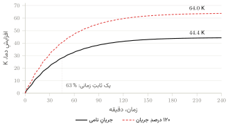
8.4.4 وارسیِ مکانیکی: سرعتِ بحرانی، نابالانسی و یاتاقان
سرعتِ بحرانی. هر روتور بسامدهای طبیعیِ خمشی دارد (فصلِ ۴). اگر سرعتِ کار با یکی از آنها برابر شود، لرزش بهشدت بزرگ میشود. طراح نخستین سرعتِ بحرانی را بالاتر از بیشینهٔ سرعتِ کار با حاشیه (یا برای روترهای انعطافپذیر، دور از بازهٔ کار) میگذارد؛ برای ژنراتورِ 1155 rpm، سرعتِ بحرانیِ 1.5 برابر یعنی 1732 rpm و حاشیهٔ 50 % (سطرِ E15).
نابالانسی. هیچ روتوری کاملاً متقارن نیست؛ مرکزِ جرم کمی از محور فاصله دارد و در چرخش نیروی گریز از مرکزِ گردانی میسازد که به یاتاقانها و سازه میرسد. کیفیتِ بالانس با یک درجهٔ بالانس \(G\) (سرعتِ معادلِ مرکزِ جرم، mm/s) بیان میشود و نابالانسیِ ویژهٔ مجاز \(e = G/\omega\) است؛ درجهٔ مناسبِ هر نوع ماشین از جدولِ استانداردِ بالانس انتخاب میشود (جعبهٔ استاندارد).
مثال 8.41 (نابالانسیِ مجازِ روترِ سهتُنی) پرسش. روتورِ 3 tی در 1155 rpm با درجهٔ بالانسِ G 2.5 (A-115، فرضی): نابالانسیِ ویژه و کل و نیروی گردانِ حاصل چیست؟ در 20 % اضافهسرعت نیرو چه میشود؟
پاسخ.
rotor 3 t at 1155 rpm, balance grade G 2.5 mm/s (A-115):
permissible specific unbalance e = G / omega = 20.7 micrometres
residual unbalance U = m e = 62.0 kg mm
rotating force U omega^2 = 0.91 kN at the bearings
the centre of mass may sit only about 0.02 mm from the axis; the
grade itself is chosen from the balancing standard's tableدر اضافهسرعتِ 20 % با همان نابالانسی، نیرو با مجذورِ سرعت 1.44 برابر میشود: 1306 N (سطرِ E16).
تفسیر. مرکزِ جرمِ روتورِ سهتنی فقط بیست میکرومتر از محور فاصله دارد و هنوز حدودِ یک کیلونیوتن نیروی گردان میسازد. بالانس در کارخانه روی ماشینِ بالانس، با افزودن یا برداشتنِ جرم در صفحههای اصلاح، انجام و گزارشش جزوِ شواهدِ کیفیت است (بخش 8.4.6). بالانسِ نهاییِ ژنراتور–گیربکس گاهی در محل وارسی میشود.
- چرا حجمِ روتور با گشتاور تعیین میشود و نه با توان؟
- اگر تنشِ برشی با خنککاریِ مایع ۵۰ درصد بیشتر شود، قطرِ ماشینِ همطول چه میشود؟
- ثابتِ زمانیِ گرمایی چه نقشی در ردهبندیِ اضافهبار دارد؟
- سرعتِ بحرانی چیست و چرا باید از سرعتِ کار دور باشد؟
- نابالانسیِ ویژهٔ مجاز با سرعت چه رابطهای دارد؟
- چرا نیروی نابالانسی با مجذورِ سرعت بالا میرود؟
8.4.5 مرحلههای ساختِ صنعتی
ساختِ یک ژنراتورِ بزرگ زنجیرهای از فرایندهای مستقل است که هر کدام کنترل و سابقهٔ خودش را دارد (شکل 8.19). در سطحِ مفهومی:
- آمادهسازیِ فولادِ الکتریکی: دریافت با گواهیِ کارخانهٔ فولاد (تلفات و نفوذپذیری در B و بسامدِ مشخص)، برشِ نوار، و بریدنِ ورقها با پانچ یا لیزر؛ کنترلِ پلیسه و گاهی پرداختِ حرارتی برای کاستنِ تنشِ برش.
- چیدن و فشردنِ هسته: چیدنِ ورقها در قالب، فشردن با نیروی مشخص و بستن با جوشِ سطحی یا میلههای کششی؛ کنترلِ طول، صافیِ داخل و هممحوری. آزمونِ هسته با شارِ زیاد نقاطِ داغِ ناشی از اتصالِ میانِ ورقها را آشکار میکند.
- شکلدادن و پیچیدنِ هادیها: کشیدن و خم کردنِ هادیهای تخت، عایقکاریِ رشته و دور با نوارهای میکا، شکلدادنِ کلاف و آزمونِ کلاف پیش از جاگذاری.
- جاگذاری و اتصال: گذاشتنِ کلافها در شیار، گوهگذاری، اتصالِ سرها (لحیم یا جوشِ القایی) و بستنِ سرِ سیمپیچها.
- آغشتهسازی و پخت: آغشتهسازیِ خلأ–فشارِ کلِ استاتور با رزین و پخت در کوره با پروفیلِ دما–زمانِ کنترلشده.
- روتور و شفت: ماشینکاریِ شفت از فولادِ آهنگریشده با گواهیِ مواد و آزمونِ فراصوتی؛ ساختِ هستهٔ روتور؛ جاگذاریِ آهنرباها (با ابزارِ ویژه و معمولاً پس از مغناطیسکردن، با کنترلِ ایمنی) یا سیمپیچ یا قفسه؛ بستن و نوارپیچی.
- بالانس: روی ماشینِ بالانس در سرعت و صفحههای تعیینشده (مثال 8.41).
- مونتاژ: جاگذاریِ روتور در استاتور (با نیروی مغناطیسیِ بزرگ در ماشینِ آهنربادار)، یاتاقانها، سپرها، خنککاری، جعبهٔ اتصال، حسگرها.
- آزمونِ کارخانهای، رنگ، بستهبندی و حمل با نگهداشتنِ روتور در برابرِ حرکت و گرمکنِ ضدِ میعان در انبار.
ردیابی. هر ژنراتور شمارهٔ سریال دارد و به آن، شمارهٔ ذوبِ فولادِ شفت، دستهٔ ورقها، دستهٔ رزین و آهنربا، شمارهٔ کلافها، گزارشهای بالانس و آزمون، و ناسازگاریها و اقدامهای اصلاحی پیوند میخورد (فصلهای ۲، ۵ و ۴۰). وقتی پس از ده سال یک خرابیِ تکراری دیده شود، ردیابی میگوید کدام ماشینهای دیگر از همان دستهاند.
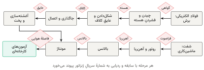
8.4.6 کنترلِ فرایند و شواهدِ کیفیت
شش خانوادهٔ شاهد. ابعاد (قطرِ داخلیِ استاتور، فاصلهٔ هوایی، هممحوری، تلرانسهای یاتاقان)؛ سیمپیچ (مقاومت، تعدادِ دور، آزمونِ ضربه برای اتصالِ میانِ دورها)؛ عایق (مقاومتِ عایقی، شاخصِ پلاریزاسیون، آزمونِ ولتاژِ بالای کارخانهای، تخلیهٔ جزئی در ماشینهای ولتاژِ متوسط)؛ بالانس و لرزش؛ دما (آزمونِ گرمایی)؛ و آزمونهای الکتریکی (بیباری، اتصالِ کوتاه، بازده). آزمونها دو دستهاند: آزمونهای جاری روی هر ماشین، و آزمونهای نوعی روی نخستین ماشین از یک طرح. روشهای تعیینِ تلفات و بازده در استانداردِ آن آمده است (جعبهٔ استاندارد).
آزمونهای ولتاژِ بالا و آزمونهای گردان در کارگاهِ آزمونِ سازنده، با تجهیز و رویهٔ مجاز و بهدستِ صلاحیتداران انجام میشوند. این بخش تفسیرِ نتیجهها را آموزش میدهد، نه انجامِ آزمون را.
مثال 8.42 (آزمونِ گرمایی به روشِ مقاومت) پرسش. مقاومتِ یک فازِ سیمپیچ در 18 °C 1.842 mΩ و بلافاصله پس از توقف در پایانِ آزمونِ گرمایی 2.296 mΩ اندازهگیری شده است (A-121، فرضی). دمای میانگینِ سیمپیچ و افزایشِ دما نسبت به خنککنِ 36 °C چیست؟
پاسخ. مقاومتِ مس با \((234.5 + T)\) متناسب است (فصلِ ۶):
heat run, resistance method (A-121): cold 1.842 mohm at 18 C,
hot 2.296 mohm at shut-down -> winding 80.2 C average
coolant 36 C: temperature rise 44.2 K
compare with the rise the specification allows for the thermal
class: the specification, not this book, states the limitتفسیر. روشِ مقاومت میانگینِ دمای سیمپیچ را میدهد، نه نقطهٔ داغ را؛ دماسنجهای جاسازیشده در شیار جای گرمتر را نشان میدهند. اندازهگیری باید سریع پس از توقف انجام شود (یا با برونیابیِ منحنیِ سرد شدن)، چون سیمپیچ با ثابتِ زمانیِ چنددقیقهای سرد میشود. مقاومتِ همان سیمپیچ در 95 °C 2.404 mΩ است (سطرِ E17) و تلفاتِ مسی را در دمای مرجع برای محاسبهٔ بازده میدهد.
مثال 8.43 (مقاومتِ عایقی و شاخصِ پلاریزاسیون) پرسش. مقاومتِ عایقیِ یک فازِ استاتور تا زمین پس از یک دقیقه 820 MΩ و پس از ده دقیقه 2050 MΩ است (A-121). شاخصِ پلاریزاسیون و مقدارِ تصحیحشده به 40 °C را بیابید.
پاسخ.
insulation resistance of a stator phase to earth (A-121):
1 min 820 Mohm, 10 min 2050 Mohm: polarisation index 2.50
measured at 30 C; with the common halving-per-10-K practice,
at 40 C about 410 Mohm
a rising reading over 10 minutes means a dry, clean insulation; a
flat one points to moisture or dirt; acceptance values come from
the manufacturer's procedure and the specificationتفسیر. شاخصِ 2.5 یعنی جریانِ نشتیِ عایق با زمان کم شده است: نشانهٔ عایقِ خشک و تمیز. در عایقِ مرطوب یا آلوده، جریانِ سطحی غالب است و مقاومت با زمان کم تغییر میکند. مهمتر از یک عدد، روند است: همین اندازهگیری در راهاندازی و در بازرسیهای دورهای یک خطمبنا میسازد (بخش 8.5.4).
مثال 8.44 (آزمونهای بیباری و اتصالِ کوتاهِ مولدِ پشتیبان) پرسش. مولدِ پشتیبان در بیباری با جریانِ میدانِ 32 A ولتاژِ نامیِ 400 V میدهد و در اتصالِ کوتاهِ سهفاز با همان جریانِ میدان 116 A (A-121). راکتانسِ همگام و نسبتِ اتصالِ کوتاه را بیابید و با فرضِ طراحیِ A-113 مقایسه کنید.
پاسخ.
backup generator, open- and short-circuit tests (A-121):
open circuit: rated 400 V at field current 32 A
short circuit at the same field current: 116 A
X_s = (V/sqrt3) / I_sc = 1.99 ohm = 2.49 pu (Z_base 0.80 ohm)
rated current 288.7 A needs 79.6 A of field in short circuit;
short-circuit ratio 0.40 = 1 / x_d (unsaturated)
a test confirms (or not) the design value x_d 2.5 pu of A-113تفسیر. آزمون \(x_d = 2.49\) پریونیت میدهد، همخوان با 2.5ِ طراحی. این نمونهای از راستیآزماییِ فرض با شاهد است، شعارِ این کتاب: عددِ A-113 از «فرضی» به «اندازهگیریشده در آزمونِ کارخانه» ارتقا مییابد. نسبتِ اتصالِ کوتاهِ 0.40 ماشینی با راکتانسِ بزرگ را نشان میدهد (سطرِ E20).
مثال 8.45 (بازده با جمعِ تلفاتِ جداشده) پرسش. تلفاتِ جداشدهٔ ژنراتور در بارِ نامی از آزمونها: مسیِ استاتور (تصحیحشده به دمای مرجع)، هسته (از آزمونِ بیباری)، اصطکاک و تهویه، روتور و آهنربا، و تلفاتِ اضافیِ بار (A-121). بازده را بیابید و با طراحی مقایسه کنید.
پاسخ.
summation of segregated losses at rated load (A-121):
stator I^2 R at 95 C 64.1 kW
core (no-load test) 41.0 kW
friction and windage 15.2 kW
rotor and magnet 7.5 kW
additional load losses 30.4 kW
total 158.2 kW; efficiency 0.9701 (design 0.970)
the method and what counts as 'additional' are set by the
efficiency-test standard; a converter-fed machine adds harmonic
losses that a sine test does not showتفسیر. بازدهٔ 0.9701 با 0.970ِ طراحی میخواند. دو نکتهٔ پذیرش: (۱) روشِ اندازهگیری و اینکه چه چیزی «تلفاتِ اضافی» شمرده شود باید پیش از آزمون در مشخصه تعیین شده باشد؛ (۲) آزمونِ کارخانه با منبعِ سینوسی تلفاتِ اضافیِ هارمونیکهای مبدّل را نشان نمیدهد، پس بازدهٔ سامانهٔ ماشین و مبدّل جداگانه سنجیده میشود (بخش 8.4.7).
- تفاوتِ آزمونِ جاری و آزمونِ نوعی چیست؟ هر کدام روی چند ماشین؟
- چرا مقاومتِ سیمپیچ را باید بلافاصله پس از توقف اندازه گرفت؟
- شاخصِ پلاریزاسیونِ 1.1 چه معنایی دارد؟
- چگونه آزمونهای بیباری و اتصالِ کوتاه راکتانسِ همگام را میدهند؟
- چرا آزمونِ بازده با منبعِ سینوسی برای ماشینِ مبدّلتغذیه کافی نیست؟
8.4.7 پذیرشِ ماشین در برابرِ پذیرشِ سامانه
پذیرش در سه سطح انجام میشود و هر سطح پرسشِ خودش را دارد:
| سطح | کجا | چه چیزی را نشان میدهد | چه چیزی را نشان نمیدهد |
|---|---|---|---|
| ماشین (کارخانهٔ ژنراتور) | کارگاهِ آزمونِ سازنده | ابعاد، عایق، بالانس، دما، تلفات و پارامترها با منبعِ آزمون | رفتار با مبدّلِ واقعی، کابلِ واقعی و ناسل |
| مبدّل (کارخانهٔ مبدّل) | کارگاهِ مبدّل | کنترل، حفاظت، تلفات، هارمونیک با بارِ آزمون | تنشِ پالس روی این ماشین، رزونانسهای پیچشیِ رانه |
| سامانه (توربین و نیروگاه) | آزمونِ رانه و راهاندازیِ میدانی | کارِ هماهنگِ روتور، گیربکس، ژنراتور، مبدّل و کنترل؛ انطباق با شبکه | — |
خطای رایج: «ژنراتور آزمونِ کارخانه را گذراند، پس مسئلهٔ ژنراتور حل شد.» اما بسیاری از خرابیهای واقعی در رابط رخ میدهند: جریانِ یاتاقان از مبدّل، تنشِ پالس از کابل، لرزشِ پیچشی از کنترل. پذیرشِ سامانه، آزمونهای یکپارچهسازی را میخواهد (فصلهای ۹، ۱۱ و ۵۰) و مسئولیتِ هر رابط باید در قرارداد روشن باشد (جدول 8.4).
8.4.8 درختِ زیرمجموعهها و برنامهٔ بازرسی
مثال 8.46 (درختِ زیرمجموعهها و برنامهٔ بازرسیِ ژنراتورِ فرضی (مثالِ کارشدهٔ فصل)) پرسش. برای ژنراتورِ A-111 یک درختِ زیرمجموعهها بسازید و برای هر شاخه، مهمترین بازرسیها، نوعِ نقطه (بازبینی، شاهد، توقف) و سندِ شاهد را بنویسید. سپس بگویید کدام ورودیهای طراحی را طراحِ صلاحیتدارِ ماشین باید تعیین کند.
پاسخ. درخت در شکل 8.20 و برنامه در جدول 8.6.
| زیرمجموعه | بازرسی یا آزمون | نقطه | شاهد |
|---|---|---|---|
| فولادِ الکتریکی | گواهیِ کارخانه؛ تلفات و ضخامتِ نمونه | بازبینی | گواهیِ مواد، گزارشِ نمونه |
| هستهٔ استاتور | ابعاد، فشار، آزمونِ نقطهٔ داغِ هسته | شاهد | گزارشِ ابعاد، تصویرِ حرارتی |
| کلافها | ابعاد، آزمونِ ضربهٔ دور، ولتاژِ کلاف | بازبینی | برگهٔ آزمونِ کلاف |
| سیمپیچِ جاگذاریشده | مقاومت، ضربه، عایق پیش از آغشتهسازی | شاهد | برگهٔ آزمون |
| آغشتهسازی و پخت | ثبتِ خلأ، فشار، دما و زمان؛ دستهٔ رزین | بازبینی | ثبتِ فرایند |
| شفت | گواهیِ مواد، آزمونِ فراصوتی، ابعاد | توقف | گواهی، گزارشِ فراصوت |
| روتور و آهنربا | دستهٔ آهنربا، شارِ نمونه، بستن و نوار | شاهد | گواهی، برگهٔ مونتاژ |
| بالانس | نابالانسیِ باقیمانده در صفحهها | توقف | گزارشِ بالانس |
| مونتاژ | فاصلهٔ هوایی، یاتاقان، عایقِ یاتاقان، حسگرها | شاهد | گزارشِ مونتاژ |
| آزمونهای جاری | عایق، شاخصِ پلاریزاسیون، ولتاژِ بالا، بیباری، لرزش | توقف | گزارشِ آزمونِ جاری |
| آزمونهای نوعی (ماشینِ نخست) | گرمایی، بازده، اتصالِ کوتاه، تخلیهٔ جزئی، صدا | توقف | گزارشِ آزمونِ نوعی |
| بستهبندی | قفلِ روتور، گرمکن، رطوبتگیر، نشانهگذاری | بازبینی | فهرستِ بستهبندی |
ورودیهای طراحِ صلاحیتدار: ابعادِ الکترومغناطیسی و انتخابِ تنشِ برشی؛ شیار، سیمپیچ، گام و مسیرهای موازی؛ نوع و درجهٔ آهنربا و حاشیهٔ مغناطیسزدایی؛ سامانهٔ عایق و کلاسِ گرمایی برای تنشِ مبدّل؛ مدلِ گرمایی و خنککاری؛ سرعتهای بحرانی، شفت، یاتاقان و نیروهای مغناطیسیِ نامتقارن؛ جریانهای خطا و گشتاورِ ناگهانیِ اتصالِ کوتاه؛ و معیارهای پذیرشِ هر آزمون. این کتاب اینها را تعیین نمیکند؛ مقدارهای A-111 تا A-121 فقط برای آموزشِ روشاند.
تفسیر. نقطههای توقف جاییاند که خطا پس از آن پنهان یا گران میشود: شفتِ ترکدار پس از مونتاژ دیده نمیشود، و آهنربای معیوب پس از بستنِ روتور. نقطههای شاهد جاییاند که خریدار میخواهد ببیند اما کار را متوقف نمیکند. برنامهٔ بازرسی بخشی از قرارداد است و فصلهای ۴۰ و ۴۲ آن را کامل میکنند.
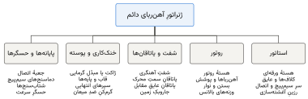
8.4.9 مرزِ کارِ طراحِ ماشین
این فصل ابزارِ فهمیدن، پرسیدن و وارسی کردن را میدهد، نه طراحیِ ماشین را. سه دسته تصمیم همیشه کارِ متخصص است: (۱) طراحیِ تفصیلیِ الکترومغناطیسی با تحلیلِ عددیِ میدان (اجزای محدود)، از جمله تلفاتِ آهنربا و گشتاورِ دندانه؛ (۲) تحلیلِ گرمایی و سیالاتی و دینامیکِ روتور؛ (۳) انتخابِ سامانهٔ عایق و آزمونهای واجد شرایط کردنِ آن برای کارِ با مبدّل. مهندسِ نیروگاه الزام مینویسد، شاهد میخواهد، رابط را مدیریت میکند و نتیجه را تفسیر میکند.
8.4.10 شفت و گشتاورِ ناگهانی
تنشِ پیچشی. شفتِ توپُر با قطرِ \(d\) زیرِ گشتاورِ \(T\) تنشِ برشیِ بیشینهٔ
\[ \tau = \frac{16\,T}{\pi\,d^3} \tag{8.26}\]
را در سطح دارد. دو بار تعیینکنندهاند: گشتاورِ ناگهانیِ اتصالِ کوتاه (چند برابرِ نامی، در چند ده میلیثانیه) و خستگی زیرِ میلیونها چرخهٔ تغییرِ گشتاور در بیست سال (فصلِ ۴). کوپلینگِ میانِ ژنراتور و گیربکس اغلب یک لغزندهٔ ایمنی دارد که گشتاورِ بیش از حد را محدود میکند.
مثال 8.47 (تنشِ شفتِ ژنراتور و شفتِ اصلی) پرسش. تنشِ پیچشیِ شفتِ ژنراتور (گشتاورِ 44 kN m، قطرِ 0.18 m) و شفتِ اصلیِ سمتِ روتور (4.84 MN m، 0.75 m؛ A-126، فرضی) را بیابید. گشتاورِ ناگهانیِ ششبرابر روی شفتِ ژنراتور چه تنشی میسازد؟
پاسخ.
torsional shear stress tau = 16 T / (pi d^3) (A-126):
generator shaft T 44.0 kN m, d 0.18 m: 38.4 MPa
main shaft (rotor side) T 4840.0 kN m, d 0.75 m: 58.4 MPa
a short-circuit torque peak of 6 x rated on the generator shaft: 231 MPa
the coupling's slip clutch limits what reaches the gearbox;
fatigue under millions of torque cycles decides the size (chapter 4)تفسیر. تنشهای کار دهها مگاپاسکالاند، اما گشتاورِ ناگهانی تنشِ شفتِ ژنراتور را به حدودِ 230 MPa میرساند: باری که با فولادِ مناسب تحمل میشود، اما گیربکس را هم تهدید میکند. برای همین مسیرِ گشتاورِ اتصالِ کوتاه در طراحیِ رانه دیده و با کوپلینگ و کنترلِ مبدّل محدود میشود. خستگی را فصلِ ۴ با منحنیهای تنش–عمر آموخت؛ طراحِ رانه آن را با طیفِ بارِ واقعی میسنجد.
8.4.11 قابلیتِ اطمینان و زمانِ تعمیر
ایده. دسترسپذیریِ یک توربین فقط به نرخِ خرابی وابسته نیست، بلکه به زمانِ بازگشت هم: تشخیص، تأمینِ قطعه، جرثقیل، هوا، و خودِ تعمیر. نامِ رایجِ اینها میانگینِ زمان میانِ خرابیها و میانگینِ زمانِ تعمیر است (فصلِ ۳). برای ژنراتورِ چندتُنی در ناسل، تعویض به جرثقیلِ بزرگ نیاز دارد و لجستیک بیشترِ زمان را میگیرد.
مثال 8.48 (خرابیِ ژنراتور و انرژیِ ازدسترفته) پرسش. با نرخِ خرابیِ 0.05 در سال و زمانِ بازگشتِ ۲۰ روز (A-126، فرضی)، عدمدسترسپذیریِ هر توربین، تعدادِ خرابیِ مورد انتظار در بیست سال برای دوازده توربین و انرژیِ ازدسترفتهٔ سالانه را بیابید. اگر جرثقیل باید از خارج بیاید (۶۰ روز) چه؟
پاسخ.
generator failure rate 0.05/yr, repair 20 days incl. logistics (A-126):
unavailability per turbine 0.27 %; expected failures in 20 yr x 12: 12
energy lost per year, 12 turbines: 615 MWh (average output 18.7 GWh/yr)
if a crane must come from abroad, MTTR 60 d: 0.82 % per turbine
logistics, not the repair itself, dominates the downtimeتفسیر. دوازده خرابیِ ژنراتور در عمرِ نیروگاه، یعنی حدودِ یکی در هر دو سال، رخدادی برنامهریزیپذیر است. سه برابر شدنِ زمانِ بازگشت بهخاطرِ جرثقیل، عدمدسترسپذیری را سه برابر میکند: قراردادِ خدمات، یدکهای راهبردی و دسترسی به جرثقیل همانقدر مهماند که کیفیتِ ماشین (فصلهای ۳۱، ۳۹ و ۵۲). عددهای واقعیِ نرخ خرابی از پایگاههای دادهی صنعت و سابقهٔ سازنده میآیند و با احتیاط به کار میروند.
8.4.12 بازبینیِ طراحی
پیش از ساخت، طراحیِ ژنراتور (یا مشخصهٔ خرید) در یک بازبینیِ طراحی با فهرستِ وارسی سنجیده میشود. پرسشهای نمونه:
- الزامها: همهٔ الزامهای توربین، شبکه و محیط با منبع و معیارِ پذیرش آمدهاند؟ چرخهٔ بار و اضافهسرعت؟
- الکترومغناطیسی: نیروی محرکه در همهٔ بازهٔ سرعت با حدِ مبدّل میخواند؟ حاشیهٔ مغناطیسزدایی در بدترین خطا و دما؟
- گرمایی: دمای نقطهٔ داغ با حاشیه از کلاس؟ خنککاری در گرمترین هوا و ارتفاع؟ کاهشِ توان تعریف شده؟
- مکانیکی: سرعتهای بحرانی دور از بازهٔ کار؟ شفت برای گشتاورِ ناگهانی و خستگی؟ یاتاقان و جریانهای یاتاقان؟
- عایق: سامانه برای تنشِ پالسِ کابلِ واقعی واجد شرایط شده؟
- ساخت و بازرسی: نقطههای توقف و شاهد، ردیابی، معیارهای پذیرشِ هر آزمون؟
- یکپارچهسازی: همهٔ رابطها با مسئول و آزمون؟ (جدول 8.4)
- نگهداری و پایش: دسترسی، یدک، حسگرها، خطمبنا؟
- ریسک: حالتهای خرابی با اقدام (جدول 8.9)؟ وابستگیِ زنجیرهٔ تأمین؟
هر پاسخِ «نه» یک اقدام با مسئول و موعد میشود و بازبینی با بستنِ اقدامها پایان مییابد (فصلهای ۳۸ و ۴۰).
- تنشِ پیچشیِ شفتِ 0.1 mی زیرِ 10 kN m؟
- چرا گشتاورِ ناگهانیِ اتصالِ کوتاه برای گیربکس مهم است؟
- با نرخِ خرابیِ 0.1 در سال و زمانِ بازگشتِ ۳۰ روز، عدمدسترسپذیری چیست؟
- سه اقدام برای کوتاه کردنِ زمانِ بازگشتِ خرابیِ ژنراتور بنویسید.
- در بازبینیِ طراحی، «حاشیهٔ مغناطیسزدایی» را چگونه میپرسید؟
8.4.13 شناساییِ پارامترهای موتور از آزمون
دو آزمونِ کلاسیک. پارامترهای مدارِ معادلِ ماشینِ القایی (شکل 8.7) از دو آزمون به دست میآیند: بیباری (موتور آزاد میچرخد، لغزش تقریباً صفر، جریان تقریباً همه از شاخهٔ مغناطیسکننده؛ \(X_1 + X_m\) و تلفاتِ هسته و اصطکاک) و روتورِ قفل (روتور ثابت، ولتاژِ کم تا جریانِ نامی برقرار شود؛ شاخهٔ مغناطیسکننده تقریباً بیاثر؛ \(R_1 + R_2\) و \(X_1 + X_2\)). مقاومتِ استاتور جداگانه با جریانِ مستقیم سنجیده میشود.
مثال 8.49 (از دادهٔ آزمون تا مدل) پرسش. موتورِ 30 kW در بیباری 400 V، 22.6 A و 1050 W، و با روتورِ قفل 70 V، 54 A و 1950 W نشان داده است؛ مقاومتِ فازِ استاتور 0.090 Ω (A-135، ساختگی). پارامترها را بسازید و با مدلِ A-114 مقایسه کنید.
پاسخ.
induction-motor tests (A-135): no load 400 V, 22.6 A, 1050 W;
locked rotor 70 V, 54 A, 1950 W; stator resistance 0.090 ohm/phase
locked rotor: |Z| 0.748, R 0.223, X 0.714 ohm -> R2 0.133, X1 = X2 = 0.357
no load: |Z| 10.22 ohm -> X_m about 9.86 ohm; core and friction 912 W
model A-114: X1 0.33, X2 0.35, X_m 10.0 ohm: reactances agree
within about 5 %; but R2 0.133 against 0.075: at standstill the
rotor current has 50 Hz and crowds into the bar tops (deep bar),
so the locked-rotor test overstates the running R2; a reduced-
frequency test or the rated slip gives the running valueتفسیر. راکتانسها با مدل میخوانند، اما مقاومتِ روتور از آزمون تقریباً دو برابر است. این خطای آزمون نیست: در روتورِ قفل، جریانِ روتور 50 Hz است و در میلههای عمیق به بالای میله رانده میشود (اثرِ پوستی، فصلِ ۴)، پس مقاومتِ مؤثر بیشتر است؛ در کار، بسامدِ روتور فقط حدودِ یک هرتز است. همین پدیده گشتاورِ راهاندازیِ موتورهای واقعی را بالا میبرد (مثال 8.7). درس: هر آزمون شرایطِ خودش را دارد؛ پارامتری که در یک شرایط سنجیده شده را بیوارسی در شرایطِ دیگر به کار نبرید. روشهای آزمونِ دقیقتر (بسامدِ کاهشیافته، آزمونهای بار) در استانداردهای آزمون آمدهاند.
8.4.14 مدلِ گرماییِ دوگرهی و تندباد
ایده. مدلِ یکگرهی (بخش 8.4.3) سیمپیچ را تنها میبیند. در واقع سیمپیچ گرمایش را به هسته میدهد و هسته به خنککن؛ هسته گرمای خودش (تلفاتِ آهن) را هم دارد و جرمِ گرماییِ بسیار بزرگتری. مدلِ دوگرهی با دو ظرفیتِ گرمایی و دو رسانایی:
\[ \begin{aligned} C_w\,\frac{\mathrm{d}T_w}{\mathrm{d}t} &= P_\text{cu} - G_{wc}\,(T_w - T_c) \\ C_c\,\frac{\mathrm{d}T_c}{\mathrm{d}t} &= P_\text{fe} + G_{wc}\,(T_w - T_c) - G_{ca}\,(T_c - T_a) \end{aligned} \tag{8.27}\]
مثال 8.50 (سیمپیچ در یک تندبادِ ربعساعته) پرسش. با پارامترهای A-132 (فرضی)، دمای سیمپیچ و هسته را در حالتِ پایدار و در یک تندبادِ پانزدهدقیقهای با 130 % جریان شبیهسازی کنید (روشِ عددیِ گامبهگام، فصلِ ۳).
پاسخ.
two-node model, winding and core, coolant 40 C (A-132):
steady state: winding 83.7 C, core 57.2 C
a 15-min gust at 130 % current (copper loss x 1.69): winding peaks at 97.8 C
the steady state at 130 % would be 109.3 C: the short gust
does not reach it; thermal mass is what makes short overloads acceptableتفسیر. در تندباد سیمپیچ تا 97.8 °C گرم میشود، در حالی که حالتِ پایدارِ همان جریان 109.3 °C بود: جرمِ گرمایی، بهویژه هستهٔ سنگین، اضافهبارهای کوتاه را جذب میکند (شکل 8.21). پس کنترلگرِ توربین میتواند اضافهبارِ کوتاهمدت را با یک مدلِ گرماییِ برخط مجاز کند، به شرطی که مدل با آزمونِ گرمایی و حسگرهای سیمپیچ واسنجی شده باشد (مثال 8.42).
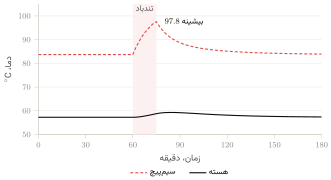
- چرا آزمونِ روتورِ قفل با ولتاژِ کم انجام میشود؟
- چرا مقاومتِ روتور در آزمونِ روتورِ قفل بیشتر از کار است؟
- هستهٔ سنگین در مدلِ دوگرهی چه نقشی دارد؟
- شرطِ استفاده از مدلِ گرماییِ برخط برای مجاز کردنِ اضافهبار چیست؟
8.4.15 آزمایشگاهِ طراحی: زنجیرهٔ اندازهگذاریِ مفهومی
ایده. درسهای پیشین هر کدام یک رابطه دادند: معادلهٔ خروجی، نیروی محرکه، بارِ الکتریکی، چگالیِ جریان، مقاومت با دما، تلفاتِ هسته و ضخامتِ آهنربا. اگر اینها را پشتِ سرِ هم بچینیم، یک زنجیرهٔ اندازهگذاری داریم که از گشتاور و سرعت، ابعاد، دورها، جریان، جرمِ مواد، تلفات و هزینهٔ موادِ فعال را میسازد. چنین ابزاری طراحی نیست، اما برای مقایسهٔ گزینهها، وارسیِ عددهای سازنده و پرسیدنِ پرسشِ درست بسیار سودمند است. فرضهای عددیِ آن آموزشیاند (A-136، فرضی): تنشِ برشیِ 40 kPa، چگالیِ شارِ 0.9 T، فاصلهٔ هواییِ 4 mm، سرِ سیمپیچِ 1.2 m در هر سو، ضریبِ جریانِ متناوب که با بسامد بالا میرود، تلفاتِ ورقِ 5 W/kg در 50 Hz با ضریبِ ساختِ 1.3، و قیمتهای آموزشیِ مس، آهنربا و فولاد.
def size_pm_machine(p_shaft, n_rpm, poles, d_over_l, j, v_ll=690.0):
"""Conceptual sizing of a surface-PM generator (A-136 teaching values).
Returns a dict of dimensions, current, masses and losses."""
sigma, b1, br, g = 40e3, 0.9, 1.2, 0.004 # Pa, T, T, m air gap
end = 1.2 # end winding, m per side
t = m.torque_nm(p_shaft, n_rpm)
vr = t / (2 * sigma)
d = (4 * vr * d_over_l / math.pi) ** (1 / 3)
length = d / d_over_l
f = n_rpm * poles / 120
k_ac = 1 + 0.012 * f # eddy currents in bars
phi = 2 / math.pi * b1 * math.pi * d * length / poles
n_turns = (v_ll / S3) / (4.44 * f * phi * 0.95)
a_rms = math.sqrt(2) * sigma / b1 # electric loading
i_ph = a_rms * math.pi * d / (6 * n_turns)
area = i_ph / j
l_turn = 2 * (length + end)
rho95 = 1.72e-8 * (234.5 + 95) / (234.5 + 20)
r_ph = rho95 * n_turns * l_turn / area
p_cu = k_ac * 3 * i_ph ** 2 * r_ph
m_cu = 3 * n_turns * l_turn * area * 8960
h_m = b1 * 1.05 * g / (br - b1) # magnet thickness
m_mag = math.pi * d * length * h_m * 0.8 * 7500
d_o = d + 2 * (0.35 * math.pi * d / poles + 0.08) # yoke + slots
m_fe = math.pi / 4 * (d_o ** 2 - d ** 2) * length * 0.95 * 0.85 * 7650
p_fe = m_fe * 5.0 * 1.3 * (f / 50) ** 1.5 # W/kg, building 1.3
return {"T": t, "D": d, "L": length, "f": f, "N": n_turns, "I": i_ph,
"P_cu": p_cu, "P_fe": p_fe, "m_cu": m_cu, "m_mag": m_mag,
"m_fe": m_fe}گامها به زبانِ ساده:
۱. گشتاور از توان و سرعت؛ حجمِ روتور از تنشِ برشی (معادلهٔ 8.24)؛ قطر و طول از نسبتِ آنها.
۲. بسامد از سرعت و قطب؛ شارِ هر قطب و دورهای سری از نیروی محرکهٔ لازم (معادلهٔ 8.5).
۳. بارِ الکتریکی از تنشِ برشی و چگالیِ شار؛ جریانِ فاز از بارِ الکتریکی، محیط و دورها.
۴. سطحِ مقطعِ مس از چگالیِ جریان؛ طولِ هر دور با سرهای سیمپیچ؛ مقاومت در 95 °C؛ تلفاتِ مسی با ضریبِ جریانِ متناوب.
۵. ضخامتِ آهنربا برای چگالیِ شارِ فاصلهٔ هوایی؛ جرمِ آهنربا.
۶. جرمِ هسته از یوغ و دندانهها؛ تلفاتِ هسته از وات بر کیلوگرم و بسامد.
مثال 8.51 (سه ماشین با یک زنجیره) پرسش. با زنجیرهٔ بالا، ماشینِ آهنربای دائم را برای 5.16 MWِ محور در سه سرعت اندازه بگیرید: تندگرد (1155 rpm، ۶ قطب)، سرعتِ متوسط (420 rpm، ۲۴ قطب) و بیگیربکس (10.5 rpm، ۱۲۰ قطب)، با چگالیِ جریانِ 4.5، 4.0 و 2.5 A/mm². ابعاد، جرمها، تلفات و هزینهٔ مواد را مقایسه کنید و نتیجهٔ ماشینِ تندگرد را با A-111 بسنجید.
پاسخ.
conceptual sizing pipeline (A-136), shaft 5.16 MW after the gearbox:
geared HS 1155 rpm: D 0.79 m, L 1.08 m, 57.8 Hz, N 6.4, J 4.5 A/mm2
copper 0.71 t, magnet 0.20 t, core 4.81 t; active 5.7 t
losses: copper 60.6 kW, core 38.8 kW; materials 26 k u
geared MS 420 rpm: D 1.23 m, L 1.23 m, 84.0 Hz, N 9.9, J 4.0 A/mm2
copper 1.32 t, magnet 0.36 t, core 4.46 t; active 6.1 t
losses: copper 105.7 kW, core 63.1 kW; materials 40 k u
direct drive 10.5 rpm: D 7.20 m, L 1.44 m, 10.5 Hz, N 57.8, J 2.5 A/mm2
copper 13.46 t, magnet 2.46 t, core 29.98 t; active 45.9 t
losses: copper 235.3 kW, core 18.8 kW; materials 314 k u
A-111 assumed 63.5 kW copper and 39.7 kW core at rating: the
pipeline lands near both for the geared machine, a cross-check
of two independent sets of teaching numbers; the direct drive
buys its low current density with many tonnes of copperتفسیر. (۱) وارسیِ متقابل: زنجیره برای ماشینِ تندگرد تلفاتِ مسیِ 60.6 kW و هستهٔ 38.8 kW میدهد؛ A-111 از یک تقسیمِ کلی 63.5 و 39.7 kW فرض کرده بود. دو مجموعه فرضِ مستقل همخواناند و این به فرضهای فصل اعتبار میدهد. (۲) جرم: ماشینِ بیگیربکس حدودِ 46 t مادهٔ فعال دارد، هشت برابرِ تندگرد؛ آهنربایش دوازده برابر و هزینهٔ موادش دوازده برابر. اما گیربکسِ سهمرحلهای حذف شده که خودش دهها تن وزن و تلفات و هزینه دارد؛ مقایسهٔ منصفانه کلِ رانه را میسنجد، نه فقط ژنراتور را (مثال 8.62). (۳) چگالیِ جریان: ماشینِ بیگیربکس با چگالیِ جریانِ کم نمیگذارد تلفاتِ مسی از این هم بیشتر شود (باز هم 235 kW، حدودِ چهار برابرِ تندگرد)، به بهای سیزده تن مس: مصالحهٔ کلوین در فصلهای ۳ و ۶ اینجا در مقیاسِ ماشین دیده میشود. (۴) سرعتِ متوسط با بسامدِ 84 Hz تلفاتِ هستهٔ بیشتری دارد: ورقِ نازکتر یا قطبِ کمتر گزینههای طراحاند. محدودیت: هر عدد با ضریبهای آموزشی ساخته شده است؛ زنجیره برای مقایسه و وارسی است، نه برای تصمیم (بخش 8.4.9).
- اگر تنشِ برشی به 50 kPa برسد، کدام خروجیهای زنجیره تغییر میکنند و به کدام سو؟
- چرا ضریبِ جریانِ متناوب با بسامد بالا میرود؟
- اگر چگالیِ جریانِ ماشینِ تندگرد به 6 A/mm² برسد، جرمِ مس و تلفاتِ مسی چه میشوند؟
- چرا مقایسهٔ جرمِ ژنراتورها بهتنهایی برای انتخابِ معماری کافی نیست؟
8.4.16 کششِ مغناطیسیِ نامتقارن
ایده. میدانِ فاصلهٔ هوایی روی سطحِ روتور فشارِ مغناطیسیِ \(B^2/(2\mu_0)\) وارد میکند، رو به بیرون. در فاصلهٔ هواییِ یکنواخت، کششِ هر سو با سوی مقابل خنثی میشود. اگر روتور کمی خارج از مرکز باشد (خروج از مرکزِ فاصلهٔ هوایی)، سمتِ نزدیکتر شارِ بیشتر و کششِ بیشتری دارد و یک نیروی خالص روتور را به همان سو میکشد، و هرچه نزدیکتر، کشش بیشتر: یک بازخوردِ مثبت که سفتیِ شفت و یاتاقان باید بر آن غلبه کند. برآوردِ ساده: نیروی خالص تقریباً متناسب با نسبتِ خروج از مرکز به فاصلهٔ هوایی است.
مثال 8.52 (کشش در ژنراتورِ نیروگاه) پرسش. با چگالیِ شارِ 0.9 T و ابعادِ زنجیرهٔ اندازهگذاری (مثال 8.51)، فشارِ مغناطیسی و نیروی خالص را برای خروج از مرکزِ ۵، ۱۰ و ۲۰ درصدِ فاصلهٔ هوایی برآورد کنید (A-137، برآوردِ آموزشی) و با وزنِ روتور مقایسه کنید.
پاسخ.
magnetic pressure B^2 / (2 mu0) at 0.9 T: 322 kPa on the rotor surface
half the rotor surface 1.34 m2: 432 kN outwards,
balanced by the other half when the gap is uniform
eccentricity 5 % of the gap: net pull about 21.6 kN
eccentricity 10 % of the gap: net pull about 43.2 kN
eccentricity 20 % of the gap: net pull about 86.4 kN
rotor weight 3 t = 29.4 kN: a 10 % eccentric gap pulls as much
air-gap uniformity is a manufacturing hold point (C.6) and a
bearing load (B.6); the pull also lowers the critical speedتفسیر. فشارِ مغناطیسی حدودِ سه برابرِ فشارِ هوا است و روی یکونیم مترِ مربع دهها تن نیرو میسازد. خروج از مرکزِ دهدرصدی (در فاصلهٔ هواییِ 4 mm، فقط 0.4 mm) نیرویی برابر با وزنِ روتور میسازد. برای همین یکنواختیِ فاصلهٔ هوایی در مونتاژ یک نقطهٔ توقف است (جدول 8.6)، یاتاقانها برای این بار هم طراحی میشوند و این کشش سرعتِ بحرانی را پایین میآورد (بخش 8.4.4). در ماشینهای بیگیربکسِ بزرگ، نگهداشتنِ فاصلهٔ هواییِ چندمیلیمتری روی قطرِ هفتمتری یکی از سختترین مسئلههای سازه است.
8.4.17 ولتاژِ ژنراتور: 690 V یا ولتاژِ متوسط
مسئله. ژنراتورِ چندمگاواتیِ 690 V هزاران آمپر جریان دارد (مثال 8.4). اگر مبدّل در پایینِ برج باشد، این جریان باید از کابلهای موازیِ بسیار در صد متر برج بگذرد. ژنراتور و مبدّلِ ولتاژِ متوسط (چند کیلوولت) جریان را چند برابر کم میکنند، به بهای عایقِ گرانتر.
مثال 8.53 (کابلِ برج در دو ولتاژ) پرسش. برای 5 MW و مسیرِ 110 mِ برج (A-138، فرضی)، جریان، تلفاتِ کابل و جرمِ مس را در 690 V (۱۲ کابلِ 240 mm² در هر فاز) و 3.3 kV (۳ کابلِ 150 mm²) مقایسه کنید.
پاسخ.
generator to converter at the tower base: 110 m route, 5 MW (A-138)
690 V: 4,184 A in 12 parallel cables per phase; loss 43.6 kW,
copper 8.5 t
3.3 kV: 875 A in 3 parallel cables per phase; loss 12.5 kW,
copper 1.3 t
the higher voltage needs 4.8 times less current: fewer cables in
the tower and lower loss, at the price of MV insulation in the
generator and the converter (chapters 9, 24)تفسیر. در 3.3 kV تلفاتِ کابل یکچهارم و مسِ کابل کمتر از یکششم است؛ سیوشش کابلِ سنگین در برج به نُه کابل کاهش مییابد. در برابر، ژنراتور عایقِ ولتاژِ متوسط (با تخلیهٔ جزئی و آزمونهایش، بخش 8.3.4) و مبدّلِ ولتاژِ متوسط (فصلِ ۹) میخواهد. این تصمیم بخشی از معماریِ توربین است که سازنده میگیرد؛ خریدار باید پیامدش را در تلفات، نگهداری و ایمنی بفهمد (فصلهای ۲۴ و ۳۲).
- چرا کششِ مغناطیسی بازخوردِ مثبت دارد؟
- فشارِ مغناطیسی در 1.0 T چند کیلوپاسکال است؟
- چرا کششِ نامتقارن سرعتِ بحرانی را پایین میآورد؟
- سه پیامدِ انتخابِ ژنراتورِ ولتاژِ متوسط را بنویسید.
8.5 د. یکپارچهسازی و پایشِ وضعیت
ماشینِ خوب در کارخانه کافی نیست؛ باید با مبدّل، حفاظت، خنککاری و کنترلِ توربین هماهنگ باشد و در بیست سال کار پایش شود. بخشِ د این هماهنگی را میسازد، پایشِ وضعیت را با دادهٔ ساختگی تمرین میکند، حالتهای خرابی و شواهدِ سازنده را مرور میکند و با یک مطالعهٔ موردیِ انتخابِ معماری پایان مییابد.
برنامهها:
companion/ch08/lab_d.py و companion/ch08/integrated.py
8.5.1 هماهنگیِ ماشین و مبدّل
هفت پرسشِ رابط.
- ولتاژ: بیشینهٔ نیروی محرکه در بیشینهٔ سرعت و اضافهسرعت (برای آهنربای دائم، مثال 8.12) باید زیرِ حدِ مبدّل بماند، یا مبدّل راهِ محافظت داشته باشد.
- جریان: جریانِ پیوسته و کوتاهمدت، و جریانِ خطا در هر دو سمت.
- بسامد و سرعت: بازهٔ کار، و اینکه کنترلگر بتواند موقعیتِ روتور را (با حسگر یا بیحسگر) بداند.
- تنشِ پالس: طولِ کابلِ مبدّل تا ماشین، شیبِ ولتاژ، صافی، و سامانهٔ عایقِ متناسب (بخش 8.3.4).
- جریانهای یاتاقان: ولتاژِ حالتِ مشترک، یاتاقانِ عایق، جاروبکِ زمین (بخش 8.3.6).
- هارمونیکهای جریان: تلفاتِ اضافی در ماشین و گشتاورِ ضربانی (فصلهای ۷ و ۹).
- دینامیکِ پیچشی: کنترلِ گشتاورِ مبدّل با بسامدهای طبیعیِ رانه (روتور، شفت، گیربکس) برهمکنش دارد؛ کنترلگر باید این مودها را میرا کند (فصلهای ۴ و ۱۱).
هر کدام یک ردیف در مشخصهٔ رابط و یک آزمون در یکپارچهسازی است (مثال 8.65).
8.5.2 حفاظت
حفاظتِ ژنراتورِ توربین بیشتر در کنترلگرِ مبدّل و توربین است تا رلههای جداگانه. تابعهای اصلی:
| تابع | چه چیزی را میپاید | پیامدِ عمل |
|---|---|---|
| اضافهجریان و اتصالِ کوتاه | جریانِ هر فاز | قطعِ مبدّل، ترمز |
| اضافهولتاژ | ولتاژِ پایانه و پیوندِ DC | مقاومتِ ترمز، توقف |
| اضافهدما | دماسنجهای سیمپیچ و یاتاقان | کاهشِ توان، سپس توقف |
| اضافهسرعت | سرعتِ روتور و ژنراتور (دو حسگرِ مستقل) | ترمزِ آیرودینامیکی و مکانیکی |
| خطای زمین | جریانِ نشتی یا ولتاژِ نقطهٔ ستاره | هشدار یا توقف، بسته به آرایشِ زمین |
| نامتعادلی و جریانِ توالیِ منفی | جریانهای سه فاز | کاهشِ توان، توقف |
| لرزش | شتابسنجها | هشدار، کاهشِ توان، توقف |
| از دست رفتنِ خنککاری | دبی و دمای سیال | کاهشِ توان، توقف |
مولدِ پشتیبانِ همگام حفاظتهای دیگری هم دارد (از دست رفتنِ تحریک، توانِ برگشتی، همگامی) که فصلِ ۲۶ با تنظیمهایشان میآورد. اضافهسرعت برای همهٔ ماشینهای آهنربادار تابعی ایمنی است: سامانهٔ مستقلِ ایمنیِ توربین، نه فقط نرمافزارِ کنترل، باید آن را بپاید (فصلهای ۱۱ و ۳۴).
8.5.3 هماهنگیِ خنککاری
مدارِ خنککاریِ ژنراتور معمولاً با گیربکس، مبدّل و ترانسفورماتورِ توربین مشترک است و ظرفیتش برای بدترین ترکیبِ تلفاتِ همزمانِ همه در گرمترین هوا طراحی میشود. دو قاعده: (۱) حدِ دمای هر مصرفکننده و اولویتِ آن در کاهشِ توان تعریف شود؛ (۲) کاهشِ توان با دما (کم کردنِ خروجی وقتی خنککاری کم میآورد) در منحنیِ توانِ تضمینیِ توربین دیده شود، چون در روزهای گرمِ پرباد انرژی کم میکند (فصلهای ۱۱ و ۱۵).
8.5.4 پایشِ وضعیت
ایده. خرابیهای ماشین معمولاً تدریجیاند: یاتاقانی که پوسته میاندازد، عایقی که مرطوب یا فرسوده میشود، خنککاریای که کثیف میشود. اگر نشانههای اولیه را ببینیم، تعمیر را برنامهریزی میکنیم، نه پس از خرابی. چهار روشِ اصلی:
| روش | چه چیزی را میبیند | داده |
|---|---|---|
| لرزش | یاتاقان، نابالانسی، ناهممحوری، شُلشدگی | شتابسنج، طیف و پوش |
| دما | خنککاری، اضافهبار، یاتاقان | دماسنجها، روند و باقیمانده |
| جریانِ ماشین | ترکِ میلهٔ روتور، خروج از مرکزِ فاصلهٔ هوایی | طیفِ جریان |
| عایق | رطوبت، آلودگی، فرسودگی | مقاومتِ عایقی، شاخصِ پلاریزاسیون، تخلیهٔ جزئی |
طیف و پوش. خرابیِ یاتاقان ضربههای کوتاهی میسازد که سازه را در بسامدهای بالا (چند کیلوهرتز) به لرزه درمیآورند. در طیفِ خام این لرزشها میانِ نویز و هارمونیکهای شفت گم میشوند؛ اما آهنگِ تکرارِ ضربهها همان بسامدِ خرابی است (مثال 8.33). اگر سیگنال را در باندِ بسامدِ بالا صاف کنیم و پوشش را بگیریم (اندازهٔ سیگنالِ تحلیلی، فصلِ ۳)، طیفِ پوش آهنگِ ضربهها را آشکار میکند. معیارهای ارزیابیِ لرزشِ ماشینها در استانداردهای اندازهگیری و ارزیابیِ لرزش آمده است (جعبهٔ استاندارد)؛ مقدارهای هشدار را سازنده و بهرهبردار تعیین میکنند.
def envelope_spectrum(x, fs, f_lo, f_hi):
"""Band-pass x by FFT masking, take the magnitude of the analytic signal
(the envelope) and return its one-sided spectrum."""
n = len(x)
spec = np.fft.fft(x)
f = np.fft.fftfreq(n, 1 / fs)
band = (np.abs(f) >= f_lo) & (np.abs(f) <= f_hi)
analytic = np.zeros(n, dtype=complex)
analytic[(f > 0) & band] = 2 * spec[(f > 0) & band]
env = np.abs(np.fft.ifft(analytic))
env = env - env.mean()
amp = np.abs(np.fft.rfft(env)) * 2 / n
return np.fft.rfftfreq(n, 1 / fs), ampمثال 8.54 (خرابیِ حلقهٔ بیرونی در یک رکوردِ لرزش) پرسش. یک رکوردِ دوثانیهایِ شتاب با نمونهبرداریِ 10 240 Hz از یاتاقانِ ژنراتور (A-116، ساختگی، بذرِ ۸) نقصی در حلقهٔ بیرونی دارد، اما نویز و هارمونیکهای شفت هم در آن هست. بزرگترین قلههای طیفِ خام و طیفِ پوش (باندِ ۲ تا ۴ کیلوهرتز) را زیرِ 500 Hz بیابید.
پاسخ.
synthetic acceleration, fs 10240 Hz, 2 s, outer-race defect (A-116):
expected outer-race frequency 110.2 Hz; shaft 19.25 Hz
largest raw-spectrum peaks below 500 Hz: 19.0, 19.5, 38.5 Hz
largest envelope-spectrum peaks (band 2-4 kHz): 220.5, 110.5, 441.0 Hz
the raw spectrum shows the shaft; the envelope shows the defect
at the outer-race frequency and its harmonicsتفسیر. طیفِ خام فقط شفت را نشان میدهد (19.25 Hz و دو برابرش). طیفِ پوش قلههایی در 110.5، 220.5 و 441 Hz دارد: بسامدِ خرابیِ حلقهٔ بیرونی و هارمونیکهایش (شکل 8.22). اختلافِ 0.3 Hz با 110.2 Hzِ نظری از تفکیکِ بسامدِ رکوردِ دوثانیهای (0.5 Hz) است. محدودیت: سیگنالِ ساختگی ساده است؛ در توربینِ واقعی چرخدندههای گیربکس، سرعتِ متغیر (که بسامدها را جابهجا میکند و نمونهبرداریِ همگام با زاویه را لازم میکند) و مسیرِ انتقالِ سازه کار را دشوارتر میکنند (فصلهای ۳۷ و ۵۲).
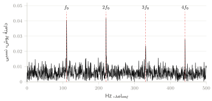
8.5.5 حالتهای خرابی
| زیرمجموعه | حالتِ خرابی | علتهای رایج | نشانهٔ زودهنگام |
|---|---|---|---|
| یاتاقان | پوستهشدن، شیاردارشدن | روانکاریِ نادرست، آلودگی، جریانِ یاتاقان، بارِ زیاد | لرزشِ پوش، دمای یاتاقان، گریسِ تیره |
| سیمپیچِ استاتور | اتصالِ دور یا زمین | گرما، رطوبت، تنشِ پالس، لرزشِ سرِ سیمپیچ | مقاومتِ عایقی، تخلیهٔ جزئی، نامتعادلیِ جریان |
| آهنربا | مغناطیسزدایی، جدا شدن، خوردگی | دمای زیاد با جریانِ خطا، چسبِ ضعیف، رطوبت | افتِ نیروی محرکه، لرزشِ نامتقارن |
| حلقه و جاروبک (دوسوتغذیه) | سایش، جرقه، گرد | فرسودگی، آلودگی | دمای حلقه، بازرسیِ دورهای |
| روتورِ قفسهای | ترکِ میله | تنشِ گرمایی در راهاندازیهای مکرر | نوارهای کناری در طیفِ جریان |
| خنککاری | کاهشِ ظرفیت | گرفتگیِ مبدّلِ گرمایی، کمبودِ سیال، خرابیِ پمپ یا فن | باقیماندهٔ مثبتِ دما (مثال 8.61) |
| رابطِ محور | ناهممحوری، خرابیِ کوپلینگ | نصب، نشستِ سازه | لرزش در دو برابرِ سرعتِ شفت، دمای کوپلینگ |
این جدول ستونهای یک تحلیلِ حالتها و اثرهای خرابی است (فصلهای ۴ و ۵۲): برای هر ردیف، شدتِ پیامد، احتمال و قابلیتِ آشکارسازی امتیاز میگیرند و اقدامهای طراحی، پایش و نگهداری انتخاب میشوند.
8.5.6 شواهدِ سازنده
خریدار چه شواهدی از سازندهٔ ژنراتور بخواهد و با هر کدام چه کند؟
| شاهد | محتوا | وضعیت در پرونده |
|---|---|---|
| برگهٔ داده و منحنیها | رده، بازده در چند بار، پارامترها، نمودارِ قابلیت | اعلامِ سازنده |
| گزارشِ آزمونِ نوعی | آزمونهای گرمایی، بازده، اتصالِ کوتاه، لرزش، صدا روی ماشینِ نخست | اندازهگیریشده، برای آن طرح |
| گزارشِ آزمونِ جاری | آزمونهای هر واحد با شمارهٔ سریال | اندازهگیریشده، برای این واحد |
| گواهیِ مواد | شفت، ورق، آهنربا، رزین | اعلامِ تأمینکننده با ردیابی |
| گواهیِ سامانهٔ عایق | ارزیابیِ گرمایی و آزمونهای کارِ با مبدّل | گواهیِ شخصِ ثالث یا سازنده |
| شواهدِ میدانی | سابقهٔ کار و خرابیِ همان طرح در ناوگانِ نصبشده | دادهٔ بهرهبرداری؛ با احتیاط |
| دستورالعملها | حمل، انبار، نصب، راهاندازی، نگهداری | سندِ کنترلشده |
قاعدهٔ کتاب: هر عددِ برگهٔ داده «اعلامِ سازنده» است تا با آزمون «اندازهگیریشده» شود (فصلِ ۲، مثال 7.46). گزارشِ آزمونِ نوعی دربارهٔ طرح است و گزارشِ جاری دربارهٔ این واحد؛ یکی جای دیگری را نمیگیرد.
- هفت پرسشِ رابطِ ماشین و مبدّل را بنویسید.
- چرا حفاظتِ اضافهسرعت باید مستقل از نرمافزارِ کنترل باشد؟
- چرا خرابیِ یاتاقان در طیفِ خام دیده نمیشود و در طیفِ پوش دیده میشود؟
- کاهشِ توان با دما چه اثری بر تولیدِ سالانه دارد و کجا باید دیده شود؟
- تفاوتِ گزارشِ آزمونِ نوعی و جاری را در یک جمله بنویسید.
- برای خرابیِ «مغناطیسزدایی» یک علت و یک نشانهٔ زودهنگام بنویسید.
8.5.7 طیفِ جریانِ موتور و میلههای شکسته
ایده. میلهٔ شکستهٔ قفسهٔ روتور، میدانِ روتور را نامتقارن میکند. این عدمِ تقارن با بسامدِ لغزش میچرخد و در جریانِ استاتور نوارهای کناری دورِ بسامدِ شبکه میسازد:
\[ f_\text{sb} = (1 \pm 2s)\,f \tag{8.28}\]
تحلیلِ طیفِ جریانِ موتور (به انگلیسی motor current signature analysis) این نوارها را در طیفِ جریان میجوید؛ حسگرش همان ترانسفورماتورِ جریانِ تابلوست و به موتور دسترسی نمیخواهد. دو شرطِ کار: تفکیکِ بسامد باید از فاصلهٔ نوار تا خطِ اصلی (\(2sf\)، کسری از هرتز) خیلی ریزتر باشد، پس رکورد باید دهها ثانیه بلند باشد؛ و لغزش باید دانسته باشد تا جای نوارها معلوم شود.
مثال 8.55 (نوارهای کناری در جریانِ موتورِ تهویه) پرسش. رکوردِ ساختگیِ جریانِ موتورِ 30 kW (A-127، بذرِ ۱۳) در بارِ نامی، بیست ثانیه با نمونهبرداریِ 2 kHz، نشانهای از میلهٔ شکسته دارد. جای نوارهای کناری و اندازهٔ آنها نسبت به خطِ اصلی را بیابید.
پاسخ.
30 kW motor at rated slip 1.65 % (A-114), synthetic current (A-127):
broken-bar sidebands expected at (1 -+ 2s) f = 48.35 and 51.65 Hz
spectrum (Hanning, 20 s, 0.05 Hz bins): sidebands at -44.4 and -44.4 dB
relative to the 50 Hz line
sidebands about 45 dB down are a typical early warning; the
record must be long and the slip known to place themتفسیر. نوارها 1.65 Hz دورِ خطِ 50 Hz و حدودِ ۴۴ دسیبل پایینترند (شکل 8.23). تفکیکِ 0.05 Hzِ رکوردِ بیستثانیهای آنها را بهخوبی جدا میکند؛ یک رکوردِ یکثانیهای (تفکیکِ یک هرتز) آنها را در دامنهٔ خطِ اصلی گم میکرد. نوسانِ بار (مثلاً کمپرسور) هم نوارهایی در بسامدهای مشابه میسازد؛ پس تشخیص با روند در زمان و در بارهای مختلف قطعی میشود، نه با یک رکورد.
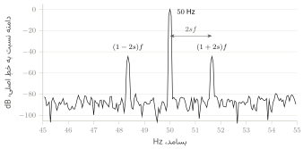
8.5.8 راهبردِ نگهداریِ ژنراتور
نگهداریِ ژنراتورِ توربین سه لایه دارد (فصلِ ۵۲):
| لایه | نمونهها | مبنا |
|---|---|---|
| زمانمبنا | گریسکاریِ یاتاقانها، تعویضِ جاروبک (در دوسوتغذیه)، تمیز کردنِ صافیِ هوا، وارسیِ اتصالها | دستورِ سازنده و ساعتِ کار |
| وضعیتمبنا | تعویضِ یاتاقان با روندِ لرزش، خشک کردنِ سیمپیچ با افتِ مقاومتِ عایقی، تمیز کردنِ مبدّلِ گرمایی با باقیماندهٔ دما | پایشِ وضعیت (جدول 8.8) |
| اصلاحی | تعویضِ ژنراتور یا روتور پس از خرابی | یدک، جرثقیل، قرارداد |
سه قاعده: (۱) گریسکاری بیش از اندازه هم به یاتاقان آسیب میزند، نه فقط کمکاری؛ مقدار و فاصله را سازنده میدهد. (۲) هر کارِ نگهداری روی ماشینی انجام میشود که ایمنسازی شده است: روتور قفل، مبدّل جدا و زمین، و ولتاژِ آهنربا در نظر (هشدارِ ایمنیِ فصل). (۳) هر یافته در سامانهٔ نگهداری با برچسبِ دارایی و شمارهٔ سریال ثبت میشود (فصلِ ۵) تا روند و تحلیلِ ریشهای ممکن شود.
- نوارهای کناریِ میلهٔ شکسته برای موتورِ ۴قطبیِ 50 Hz با لغزشِ 3 % کجا هستند؟
- چرا رکوردِ کوتاه برای این تحلیل کافی نیست؟
- چرا نوسانِ بار میتواند هشدارِ کاذب بسازد؟
- نگهداریِ زمانمبنا و وضعیتمبنا را با یک مثال برای ژنراتور مقایسه کنید.
- چرا گریسکاریِ بیش از اندازه زیانآور است؟
8.5.9 روندِ مقاومتِ عایقی
مسئله. مقاومتِ عایقی با دما بهشدت تغییر میکند (در عمل رایج، حدوداً نصف به ازای هر ده درجه گرمتر؛ مثال 8.43). اندازهگیریهای دورهای در فصلهای مختلف عددهایی بسیار پراکنده میدهند و هر عددِ کم ممکن است فقط «تابستان» باشد. روشِ درست: تصحیح به دمای مرجع، سپس برازشِ روند (فصلِ ۳) و جستوجوی جدایی از روند.
مثال 8.56 (ده سال مقاومتِ عایقیِ یک ژنراتور) پرسش. رکوردِ ساختگیِ ششماهه (A-133، بذرِ ۱۷) مقاومتِ عایقی و دمای سیمپیچ را برای ده سال دارد. اندازهها را به 40 °C تصحیح کنید، روندِ سالهای نخست را برازش کنید و نخستین اندازهای را که از ۶۰ درصدِ روند کمتر است پیدا کنید.
پاسخ.
insulation resistance of one generator every six months (A-133):
raw readings range 176 to 7,029 Mohm (temperature swings it)
corrected to 40 C and fitted on years 0-7.5: decline 7.5 %/yr
first reading below 60 % of the trend: year 8.5
the raw values hide this: a summer reading looks low, a winter
one high; correct for temperature, then look at the trendتفسیر. عددهای خام بیش از ده برابر بالا و پایین میروند و روند را پنهان میکنند؛ پس از تصحیح، کاهشِ آهستهٔ سالانه (7.5 %، فرسودگیِ عادی) و جداییِ تند از سالِ هشتم آشکار است (شکل 8.24): نشانهٔ رطوبت، آلودگی یا خرابیِ عایق که بازرسی و خشککردن یا تعمیر میخواهد. حدهای پذیرش را سازنده و رویهٔ نگهداری تعیین میکنند؛ آنچه این تحلیل میدهد زمانِ اقدام است، پیش از خطای زمین.
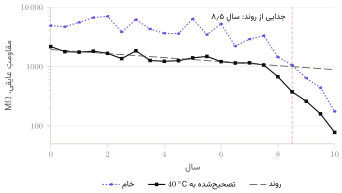
8.5.10 رانه در افتِ ولتاژِ شبکه
مسئله. وقتی ولتاژِ شبکه در یک خطا میافتد، مبدّل نمیتواند همهٔ توان را صادر کند، اما باد همچنان روتور را میچرخاند. انرژیِ اضافه یا در مقاومتِ ترمزِ پیوندِ DC سوزانده میشود، یا گام کاهش مییابد، یا روتور تندتر میشود. الزامِ «ماندن در مدار» (فصلهای ۹ و ۱۷) از رانه هم آزمونی میگیرد: پلهٔ گشتاور روی گیربکس و کوپلینگ.
مثال 8.57 (افزایشِ سرعتِ روتور در افتِ ولتاژ) پرسش. اگر در افتِ ولتاژ هیچ توانی صادر نشود و ورودیِ 5 MW روتور ادامه یابد، سرعتِ روتور (با انرژیِ جنبشیِ 32.2 MJ، فصلِ ۴) پس از 150، 500 و 1000 ms چقدر بالا میرود؟
پاسخ.
grid dip: the converter cannot export, the rotor keeps its 5 MW input:
150 ms: 0.75 MJ into a rotor holding 32.2 MJ -> speed +1.2 %
500 ms: 2.50 MJ into a rotor holding 32.2 MJ -> speed +3.8 %
1000 ms: 5.00 MJ into a rotor holding 32.2 MJ -> speed +7.5 %
a chopper resistor in the DC link burns the energy or the
pitch reduces the input; the drivetrain sees a torque step
that the gearbox and coupling must withstand (chapters 9, 11)تفسیر. در یک افتِ کوتاه سرعت فقط یک درصد بالا میرود: روتور خودش یک ذخیرهٔ انرژی است. در افتهای طولانیتر، بیمقاومتِ ترمز یا کاهشِ گام، سرعت به حدِ اضافهسرعت نزدیک میشود. پس قابلیتِ ماندن در مدار یک ویژگیِ سامانه است، نه فقط مبدّل: ژنراتور، رانه، کنترلِ گام و مقاومتِ ترمز با هم (بخش 8.4.7).
- چرا اندازههای خامِ مقاومتِ عایقی بیتصحیحِ دما گمراهکنندهاند؟
- کاهشِ آهسته و جداییِ تند از روند هر کدام چه معنایی دارند؟
- در افتِ ولتاژ، انرژیِ روتور به کجا میرود؟
- چرا قابلیتِ ماندن در مدار یک ویژگیِ سامانه است؟
8.5.11 پروندهٔ هر ژنراتور در چرخهٔ عمر
چرا؟ پایشِ وضعیت، تحلیلِ ریشهای و تصمیمِ تعمیر یا تعویض همه به سابقهٔ هر ماشین وابستهاند. فصلِ ۵ فهرستِ دارایی و برچسبگذاری را ساخت (بخش 5.6.2)؛ برای ژنراتورِ هر توربین، این سندها و دادهها به برچسبِ جایگاه (مثلاً ژنراتورِ توربینِ ۷) و به شمارهٔ سریال پیوند میخورند:
| مرحله | سند یا داده | پیوند به |
|---|---|---|
| خرید | مشخصه، برگهٔ داده، گزارشِ آزمونِ نوعی | طرح (نوع) |
| ساخت | گواهیهای مواد، برگههای بازرسی، گزارشِ بالانس، گزارشِ آزمونِ جاری، ناسازگاریها | سریال |
| حمل و نصب | وضعیتِ بستهبندی، مقاومتِ عایقی پس از حمل، هممحوری | سریال و جایگاه |
| راهاندازی | خطمبنای لرزش، دما و عایق؛ تنظیمهای حفاظت | جایگاه |
| بهرهبرداری | روندهای پایش، هشدارها، دستورهای کار، تعویضِ یاتاقان | سریال و جایگاه |
| تعمیرِ اساسی یا تعویض | گزارشِ خرابی، تحلیلِ ریشهای، سریالِ جایگزین | هر دو |
نکتهٔ کلیدی: وقتی ژنراتوری تعویض میشود، جایگاه (برچسب) همان میماند و سریال عوض میشود؛ سابقهٔ پایشِ جایگاه با ماشینِ تازه از صفر شروع میشود و خطمبنای تازه میخواهد، و ماشینِ قدیمی اگر تعمیر و جای دیگری نصب شود، سابقهاش را با خود میبرد. این همان تمایزِ «جایگاه و قطعه» در فصلِ ۵ است.
- کدام سندها به «طرح» و کدام به «سریال» پیوند میخورند؟
- پس از تعویضِ ژنراتور، خطمبنای پایش چه میشود؟
- چرا مقاومتِ عایقی پس از حمل اندازهگیری و ثبت میشود؟
8.5.12 مورد: لرزشِ دوبرابر پس از نصب
موقعیت. در راهاندازیِ یک توربین، لرزشِ یاتاقانِ سمتِ محرکِ ژنراتور بالاتر از توربینهای دیگر است. پیش از هر تعمیر، طیف پرسش را روشن میکند: نابالانسی بیشتر در یک برابرِ سرعتِ شفت دیده میشود (نیروی گردانِ مثال 8.41)، و ناهممحوری با یک خطِ بزرگ در دو برابرِ سرعت، اغلب با مؤلفهٔ محوری.
مثال 8.58 (کدام خطا؟) پرسش. طیفِ رکوردِ راهاندازی (A-139، ساختگی، بذرِ ۱۹) را در یک، دو و سه برابرِ سرعتِ شفت بخوانید و تشخیص و اقدام را بنویسید.
پاسخ.
commissioning record at the generator drive-end bearing (A-139):
amplitudes at 1x, 2x, 3x shaft speed (19.25 Hz): 0.80, 1.60, 0.40 (relative)
2x / 1x = 2.0: a large 2x line with an axial
component is the classic sign of misalignment; unbalance shows
mainly at 1x; the alignment report from installation is checked
and the coupling realigned by the installer (chapters 49, 50)تفسیر. خطِ دو برابر، دو برابرِ خطِ یک برابر است (شکل 8.25): الگوی ناهممحوری. اقدام: وارسیِ گزارشِ هممحوریسازیِ نصب، اندازهگیریِ دوباره و هممحوریسازی بهدستِ پیمانکارِ نصب با رویهٔ مجاز، سپس رکوردِ تازه بهعنوانِ خطمبنا. این مورد نشان میدهد چرا رکوردِ لرزش در راهاندازی یک سند است، نه فقط یک آزمونِ قبول یا رد (جدول 8.12).
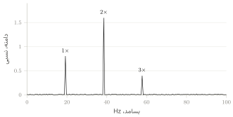
8.5.13 ارزشِ تلفاتِ ژنراتورها در عمرِ نیروگاه
مثال 8.59 (بیست سال تلفات) پرسش. با تلفاتِ سالانهٔ دوازده ژنراتور در سالِ بستهٔ داده (مثال 8.60)، تلفاتِ بیستساله و ارزشِ حالِ آن را با 50 واحد بر مگاواتساعت و 7 % بیابید.
پاسخ.
12 generators, gross data-pack year: 8,685 MWh/yr of losses
over 20 years: 174 GWh, about 0.8 years of the 12-turbine farm
(9.3 turbine-years of output)
present value at 50 u/MWh and 7 %: 4.60 million u
one per cent of generator efficiency is worth a large share of the
generator's price: losses belong in the purchase decisionتفسیر. تلفاتِ ژنراتورها در عمرِ نیروگاه نزدیکِ تولیدِ یک سالِ کلِ دوازده توربین (حدودِ 0.8 سالِ مزرعهٔ بادی، یعنی بیش از نُه توربینسال) است و ارزشِ حالش چند میلیون واحد. این عدد چارچوبِ مثال 8.64 را کامل میکند: هر درصدِ بازده ارزشی دارد که در خرید باید دیده شود. محدودیت: خروجیِ ناخالص و قیمتِ ثابت؛ سالهای کمباد و پربار، تخریبِ تجهیزات و قیمتهای واقعیِ قرارداد عدد را تغییر میدهند (فصلهای ۱۶ و ۲۱).
- نابالانسی و ناهممحوری در طیف چگونه از هم جدا میشوند؟
- چرا رکوردِ لرزشِ راهاندازی یک سند است؟
- اگر قیمتِ انرژی دو برابر شود، ارزشِ حالِ تلفات چه میشود؟
8.5.14 آزمایشگاه: یک سال تلفاتِ ژنراتور
پرسش. بازدهٔ نامی گزارشِ پلاک است؛ انرژیِ ازدسترفته را بارِ واقعیِ سال تعیین میکند. با بادِ ساعتیِ بستهٔ داده و منحنیِ توانِ توربین، بارِ ژنراتور را در هر ساعت میسازیم و تلفاتِ آن را با مدلِ معادلهٔ 8.11 جمع میزنیم:
def generator_year(fixed_share: float = 0.35):
"""Hourly generator output (W) and losses (W) of one turbine for the
data-pack year; the turbine output follows the power curve."""
hourly = datapack.load_hourly()
curve = datapack.load_power_curve()
p_turbine = 1e3 * np.interp(hourly["ws_100m_ms"].to_numpy(),
curve["wind_speed_ms"].to_numpy(),
curve["power_kw"].to_numpy())
p_gen = p_turbine / ETA_CONV # generator terminals
load = p_gen / P_GEN_R
loss = np.where(p_gen > 0,
[m.loss_model(x, P_GEN_R, ETA_R, fixed_share)
for x in load], 0.0) # stopped: no losses
return p_gen, lossمثال 8.60 (تلفاتِ سالانهٔ یک ژنراتور) پرسش. برای یک توربین در سالِ بستهٔ داده (1.1.0، S0)، انرژیِ خروجیِ ژنراتور، تلفات و بازدهٔ میانگین را با سه سهمِ تلفاتِ ثابت حساب کنید و با «بازدهٔ نامی ضربِ انرژی» مقایسه کنید. بیشترِ انرژی در کدام بازهٔ بار تولید میشود؟
پاسخ.
one turbine, data-pack year (1.1.0, S0; curve at 1.225 kg/m3;
gross: no wake or other losses), generator terminals:
fixed 20 %: output 18700 MWh, losses 597.0 MWh, mean eff. 0.9691
fixed 35 %: output 18700 MWh, losses 723.8 MWh, mean eff. 0.9627
running 92 % of hours; at rated efficiency the losses would be
578.4 MWh
most energy comes at 0.9-1.0 pu load (47 %)
fixed 50 %: output 18700 MWh, losses 850.5 MWh, mean eff. 0.9565
12 turbines: about twelve times these losses each year;
part-load efficiency, not the rated value, sets the energy lostتفسیر. با سهمِ ثابتِ ۳۵ درصد، تلفاتِ سالانه 724 MWh است، 25 % بیش از برآوردِ «بازدهٔ نامی». تفاوتِ ماشینی با تلفاتِ ثابتِ کم و زیاد 254 MWh در سال برای هر ژنراتور است. نزدیکِ نیمی از انرژی در بارِ نزدیکِ نامی تولید میشود، اما ساعتهای زیادی در بارِ کماند (شکل 8.26)، و در آن ساعتها تلفاتِ ثابت سهمِ بزرگی دارند. تلفاتِ 724 MWh یعنی میانگینِ 83 kW گرما در تمامِ سال (سطرِ E22). محدودیت: منحنیِ توان در چگالیِ مرجع و بیتلفاتِ ویک (خروجیِ ناخالص)؛ مدلِ تلفات دوجملهای است؛ تلفاتِ گیربکس و مبدّل جدا حساب نشدهاند (بخش 8.5.16).
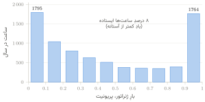
8.5.15 آزمایشگاه: خنککاریِ کثیف در باقیماندهٔ دما
ایده. دمای سیمپیچ به دمای هوا و تلفات وابسته است، پس خودِ دما در روزِ گرمِ پرباد بالا میرود بیآنکه مشکلی باشد. اگر مدلی از دمای «سالم» بسازیم (رگرسیونِ فصلِ ۳ روی روزهای نخستِ بهرهبرداری) و هر روز باقیمانده (اندازهگیری منهای مدل) را بپاییم، تغییرِ وضعیت بهصورتِ جابهجاییِ میانگینِ باقیمانده دیده میشود. مجموعِ تجمعی (به انگلیسی CUSUM) جابهجاییهای کوچکِ پایدار را زودتر از نگاه به عددِ خام آشکار میکند.
def temperature_record(seed: int = 11):
"""Hourly winding temperature of one generator for the data-pack year:
air temperature + k x losses + noise; the cooling fouls from day 200
(k grows 15 %, A-119)."""
rng = np.random.default_rng(seed)
hourly = datapack.load_hourly()
t_air = hourly["t_air_c"].to_numpy()
_, loss = generator_year()
k = np.where(np.arange(len(loss)) < 200 * 24, 0.30, 0.345) # K per kW
temp = t_air + 15.0 + k * loss / 1e3 + rng.normal(0, 1.5, len(loss))
return t_air, loss / 1e3, tempمثال 8.61 (هشدار پیش از آنکه دما «بالا» دیده شود) پرسش. رکوردِ ساعتیِ دمای سیمپیچ برای سالِ بستهٔ داده (A-119، ساختگی، بذرِ ۱۱) از روزِ ۲۰۰ با کثیف شدنِ مبدّلِ گرمایی تغییر میکند (این را نمیدانیم). مدل را روی ۶۰ روزِ نخست بسازید، میانگینِ باقیمانده را پیش و پس از روزِ ۲۰۰ بیابید و با مجموعِ تجمعی (لغزشِ 0.5 K، حدِ 5 K) هشدار بدهید.
پاسخ.
winding temperature model fitted on days 0-59 (A-119, synthetic):
T = 15.0 + 1.00 T_air + 0.300 x losses (kW)
mean residual on loaded hours: before day 200 -0.01 K, after +4.08 K
CUSUM of daily residuals (slack 0.5 K, limit 5 K): alarm on day 202
the cooling fouled on day 200 (planted); the alarm comes days later,
long before the absolute temperature looks unusualتفسیر. مدل ضریبهای کاشتهشده را بازمیسازد (یک برابرِ دمای هوا، 0.30 K/kW برای تلفات) و باقیمانده پس از روزِ ۲۰۰ حدودِ 4 K مثبت میشود. هشدار در روزِ ۲۰۲ است: دو روز پس از تغییر، در حالی که دمای خام در آن روزها بیش از همه از دمای هوا و باد پیروی میکند (شکل 8.27). محدودیت: تغییرِ کاشتهشده پلهای و تمیز است؛ در واقعیت تدریجی است، دادهها شکاف و خطا دارند (فصلِ ۵) و هشدارِ کاذب هزینه دارد. حدِ مجموعِ تجمعی میانِ زودی و هشدارِ کاذب مصالحه میکند (فصلهای ۳۷ و ۵۲).
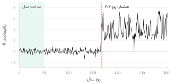
8.5.16 مطالعهٔ موردی: انتخابِ معماری برای WT-5.0-150
مثال 8.62 (ماتریسِ انتخابِ معماری (مثالِ کارشدهٔ فصل)) پرسش. چهار معماریِ بخش 8.2.15 را برای توربینِ نیروگاهِ P مقایسه کنید. (۱) انرژیِ سالانه را با همان توانِ روتور و بازدهٔ باربخشیِ هر مرحله (گیربکس، ژنراتور، مبدّل؛ A-122، فرضی) حساب کنید. (۲) با معیارهای انرژی، رفتار با شبکه، قابلیتِ اطمینان و نگهداری، جرم و حمل، و ریسکِ زنجیرهٔ تأمین، و وزنهای 30/20/20/15/15، امتیاز دهید. (۳) اثرِ روشِ مقیاسکردنِ امتیازِ انرژی را نشان دهید.
پاسخ.
same rotor power for all; part-load stage efficiencies (A-122):
DFIG, 3-stage gear 18267 MWh/yr (+1.3 % on HS-PMSG)
geared HS-PMSG, FC 18024 MWh/yr (+0.0 % on HS-PMSG)
geared MS-PMSG, FC 18234 MWh/yr (+1.2 % on HS-PMSG)
direct-drive PMSG, FC 18294 MWh/yr (+1.5 % on HS-PMSG)
weighted scores, weights 30/20/20/15/15; energy: min-max (worst 1, best 5)
DFIG, 3-stage gear 4.6 3.0 3.0 5.0 5.0 total 4.08
geared HS-PMSG, FC 1.0 5.0 3.0 5.0 3.0 total 3.10
geared MS-PMSG, FC 4.1 5.0 4.0 4.0 3.0 total 4.08
direct-drive PMSG, FC 5.0 5.0 4.0 2.0 2.0 total 3.90
weighted scores, weights 30/20/20/15/15; energy: 3 + 1 point per 1 % of yield
DFIG, 3-stage gear 4.3 3.0 3.0 5.0 5.0 total 4.00
geared HS-PMSG, FC 3.0 5.0 3.0 5.0 3.0 total 3.70
geared MS-PMSG, FC 4.2 5.0 4.0 4.0 3.0 total 4.10
direct-drive PMSG, FC 4.5 5.0 4.0 2.0 2.0 total 3.75
min-max scaling turns a 1.5 % yield spread into 4 points and moves
the ranking; the other scores are judgements written down with
reasons: the matrix shows the argument, it does not replace the
turbine supplier's dataاستدلالِ امتیازهای غیرعددی (نمونه، نه حکم): شبکه: مبدّلِ کامل رفتارِ خطا و توانِ راکتیو را مستقل از ماشین کنترل میکند (۵)؛ دوسوتغذیه در خطا به حفاظتِ روتور وابسته است (۳). قابلیتِ اطمینان: گیربکسِ سهمرحلهای و حلقه و جاروبک امتیاز را پایین میآورند؛ دومرحلهای و بیگیربکس قطعاتِ گردانِ پرخرابیِ کمتری دارند. جرم و حمل: ماشینِ بیگیربکسِ هفتمتری سنگین و حجیم است (فصلِ ۳۱). زنجیرهٔ تأمین: ماشینهای آهنربادار، و بیش از همه بیگیربکس با بیشترین جرمِ آهنربا، به خاکِ کمیاب وابستهاند.
تفسیر. تفاوتِ انرژیِ معماریها فقط 1.5 % است؛ با مقیاسِ «کمینه–بیشینه» همین تفاوتِ کوچک به چهار امتیاز بدل میشود و دوسوتغذیه و سرعتِ متوسط همامتیاز میشوند؛ با مقیاسِ «یک امتیاز برای هر یک درصد» سرعتِ متوسط کمی جلو میافتد و فاصلهٔ معماریها کم میشود. درس: ماتریس استدلال را آشکار و نقدپذیر میکند، اما تصمیم را خودش نمیگیرد. وزنها، مقیاس و امتیازها باید پیش از دیدنِ نتیجه نوشته و استدلال شوند، و حساسیت به هر کدام گزارش شود. تصمیمِ D-011 (بخش 8.11) این را ثبت میکند.
8.5.17 محدودیتهای مدلهای این فصل
- مدارهای معادلِ حالتِ پایدار. رفتارِ گذرا (خطا، راهاندازی، کلیدزنیِ مبدّل) مدلهای دینامیکی میخواهد (فصلهای ۹ و ۲۸).
- اشباع و دما نادیده. پارامترهای ماشین با اشباع و دما تغییر میکنند؛ مقدارهای این فصل اشباعنشده و در دمای ثابتاند.
- تلفاتِ دوجملهای. تلفاتِ واقعی به ولتاژ، سرعت و هارمونیکهای مبدّل هم وابستهاند؛ آزمونِ سامانه آنها را میدهد.
- ابعاد با یک تنشِ برشی. طراحیِ واقعی با تحلیلِ عددیِ میدان و گرما و دینامیکِ روتور است.
- دادهٔ ساختگیِ پایش. رکوردهای لرزش و دما ساده و تمیزند؛ دادهٔ واقعی سرعتِ متغیر، شکاف و نویزِ بیشتری دارد.
- امتیازهای انتخابِ معماری. بازدهها و امتیازها فرضیاند؛ انتخابِ واقعی با دادهٔ سازنده، هزینهٔ چرخهٔ عمر و دسترسیپذیریِ اثباتشده است (فصلهای ۱۱، ۲۱ و ۳۹).
8.6 نیروگاهِ P: سه مثالِ یکپارچه
سه مثالِ زیر ابزارِ فصل را روی نیروگاهِ P میبرند: یک موتور در تغذیهٔ کمکی، ارزشِ تلفاتِ ژنراتورها برای پروژه، و مشخصهٔ مفهومیِ ژنراتور. همه بر پایهٔ فرضهای A-111 تا A-143 (فرضی یا ساختگی)، دادههای پیشینِ نیروگاه و بستهٔ دادهٔ 1.1.0ِ سناریوی S0 (و S1 برای تهویهٔ باتری) هستند.
برنامه:
companion/ch08/integrated.py
مثال 8.63 (مقدماتی: یک موتور، دو منبع) پرسش. موتورِ 30 kWِ تهویهٔ اتاقِ باتری (A-114) یکبار از ترانسفورماتورِ کمکی و یکبار، هنگامِ قطعِ شبکه، از مولدِ پشتیبانِ 200 kVA (A-113) مستقیم راه میافتد. افتِ ولتاژ را با امپدانسِ زیرگذرا و گذرای مولد و با راهاندازِ نرم مقایسه کنید.
پاسخ.
direct-on-line start of the 30 kW motor (A-114) at the auxiliary board:
transformer 250 kVA, 6 % + feeder |Z| 42.2 mohm: dip 5.8 %
backup generator, x_d'' 0.12 pu |Z| 96.3 mohm: dip 12.2 %
backup generator, x_d' 0.20 pu |Z| 160.2 mohm: dip 18.7 %
backup generator with a soft starter (3 x rated): dip 10.0 %
the generator is a weaker source: the same start dips the voltage
two to three times deeper; the AVR recovers it within a second
or so, but contactors and electronics see the first dipتفسیر. همان راهاندازی که روی ترانسفورماتور 5.8 % افت میسازد، روی مولد 12 تا 19 % افت دارد، چون امپدانسِ مولد دو تا چهار برابر است. افتِ 19 % برای رلهها، کنتاکتورها و منبعهای تغذیهٔ الکترونیکی پذیرفتنی نیست؛ راهاندازِ نرم آن را به 10 % میرساند و مبدّلِ بسامد تقریباً حذفش میکند. نتیجهٔ طراحی: ردهٔ مولدِ پشتیبان فقط از جمعِ کیلوولتآمپرِ بارها تعیین نمیشود؛ بزرگترین موتوری که روی آن راه میافتد و روشِ راهاندازیاش هم تعیینکنندهاند (فصلهای ۲۳ و ۲۴). وارسی: نسبتِ افتها کمی کمتر از نسبتِ امپدانسهاست، چون افت نسبتِ تقسیمِ ولتاژ است، نه خطی با امپدانس.
مثال 8.64 (میانی: ارزشِ تلفاتِ ژنراتورها) پرسش. با مثال 8.60، تفاوتِ تلفاتِ سالانهٔ دوازده ژنراتور با سهمِ تلفاتِ ثابتِ ۳۵ و ۲۰ درصد را به پول تبدیل کنید (قیمتِ آموزشیِ 50 واحد بر مگاواتساعت، نرخِ 7 %، عمرِ ۲۵ سال؛ A-037 و A-093). این عدد در خرید به چه کار میآید؟
پاسخ.
12 generators, gross data-pack year (A-111 loss model):
losses with fixed share 35 %: 8,685 MWh/yr; with 20 %: 7,164 MWh/yr
difference 1,521 MWh/yr = 76,058 u/yr at 50 u/MWh
over 25 years at 7 %: annuity factor 11.65 -> 886,344 u today
a buyer can put this value on the loss figures in a tender
(capitalised losses, chapter 39): lower losses are worth up
to that much more in priceتفسیر. ژنراتوری با تلفاتِ ثابتِ کمتر سالانه 1521 MWh بیشتر برای نیروگاه میفروشد؛ ارزشِ حالِ آن حدودِ 0.89 میلیون واحد است. این روشِ سرمایهای کردنِ تلفات است: خریدار در ارزیابیِ پیشنهادها، برای هر کیلووات تلفاتِ ثابت و باری قیمتی میگذارد تا سازندهای که ماشینِ گرانتر اما پربازدهتر پیشنهاد میکند منصفانه مقایسه شود (فصلهای ۲۱ و ۳۹). نکتهٔ مهم: ارزشِ تلفاتِ ثابت و باری متفاوت است، چون ساعتهای کار در هر بار متفاوتاند؛ پس تلفات باید در چند نقطهٔ بار تضمین و آزموده شوند، نه فقط در بارِ نامی.
مثال 8.65 (یکپارچه: مشخصهٔ مفهومی و برنامهٔ آزمونِ یکپارچهسازی) پرسش. از عددهای این فصل یک برگهٔ مشخصهٔ مفهومی برای ژنراتورِ نیروگاهِ P بسازید (PLP-ELE-SPC-0001، بازنگریِ A) و یک برنامهٔ آزمونِ یکپارچهسازیِ رانه پیشنهاد دهید.
پاسخ.
conceptual data of the Plant P generator (PLP-ELE-SPC-0001, A):
type: geared permanent-magnet synchronous, 6 poles, 1155 rpm, 57.75 Hz
rating 5.4 MVA at 690 V: 4,518 A; 5.13 MW to the converter
efficiency at 25/50/100 % load (loss model): 0.954 / 0.969 / 0.970
EMF falls with speed: 358 V at 600 rpm; the converter
must work over the whole speed range and at overspeed
insulation designed for converter impulses (b_insulation); a
thermal class with margin over the 94 C hot spot of c_thermal
cooling for about 160 kW: 4.7 kg/s of water at 8 K (b_cooling)
balance grade G 2.5: residual 62 kg mm (c_balance)
monitoring: winding PT100s, bearing temperatures,
accelerometers (outer race 110 Hz),
insulated bearing on the non-drive end against shaft currents
tests: routine set on every unit, type set on the first (section C)
the qualified machine designer and the turbine supplier confirm every lineبرنامهٔ آزمونِ یکپارچهسازی (در سطحِ مفهوم؛ رویهها را سازنده و راهانداز مینویسند):
| گام | جا | آنچه سنجیده میشود | پایه |
|---|---|---|---|
| ۱ | کارخانهٔ ژنراتور | آزمونهای جاری و نوعی | جدول 8.6 |
| ۲ | کارخانهٔ مبدّل | کنترل و حفاظت با بارِ آزمون | فصلِ ۹ |
| ۳ | میزِ آزمونِ رانه (در صورتِ وجود) | ژنراتور با مبدّلِ واقعی: تلفاتِ سامانه، تنشِ پالس، جریانِ یاتاقان، دما | جدول 8.5 |
| ۴ | نصب در ناسل | هممحوری، عایق پس از حمل، حسگرها، خنککاری | فصلهای ۴۹ و ۵۰ |
| ۵ | راهاندازیِ توربین | سرعتها، لرزشهای مرجع، حفاظتها، کاهشِ توان با دما | فصلِ ۵۰ |
| ۶ | آزمونِ کارکرد | منحنیِ توان، دسترسپذیری، خطمبنای پایشِ وضعیت | فصلهای ۳۷ و ۵۰ |
تفسیر. هر سطرِ مشخصه به یک بخشِ فصل و یک فرض برمیگردد و هر فرض به یک شاهد که آن را تأیید یا رد میکند: بازده با آزمونِ نوعی، دما با آزمونِ گرمایی، بالانس با گزارشِ بالانس، لرزش و یاتاقان با خطمبنای راهاندازی. خطمبنای پایش (لرزش، دما، عایق در روزهای نخست) همان چیزی است که مثال 8.61 برای ساختنِ مدلِ «سالم» لازم داشت: پایشِ وضعیت از راهاندازی شروع میشود، نه از نخستین خرابی.
8.7 گردشِ کارِ انتخاب و یکپارچهسازیِ یک ماشین
- الزامها از سامانهٔ بالادست: توان، سرعت و بازهٔ آن، چرخهٔ بار، محیط، عمر، رابطها، الزامهای شبکه (بخش 8.4.1).
- معماری و نوعِ ماشین با ماتریسِ مستند و حساسیت (بخش 8.5.16).
- اندازهٔ مفهومی: گشتاور و حجم، ولتاژ و جریان، تلفات و خنککاری (بخش 8.4.2 و بخش 8.4.3).
- رابطها: مبدّل، محور، خنککاری، پایش، زمین (جدول 8.4 و بخش 8.5.1).
- مشخصه: رده، بازده در چند بار، سامانهٔ عایق برای کارِ با مبدّل، بالانس، لرزش، حسگرها، آزمونها و معیارهای پذیرش.
- ارزیابیِ پیشنهادها با تلفاتِ سرمایهای و شواهدِ سازنده (مثال 8.64 و جدول 8.10).
- بازرسی و آزمون در ساخت، کارخانه، میزِ رانه و میدان (جدول 8.6 و جدول 8.13).
- پایش از روزِ نخست با خطمبنا، مدلهای باقیمانده و تحلیلِ طیف (بخش 8.5.4).
- مرزِ کار: طراحیِ تفصیلیِ ماشین با طراحِ صلاحیتدار؛ تنظیمهای حفاظت با مهندسِ حفاظت؛ آزمونها با رویهٔ تأییدشده (بخش 8.4.9).
8.8 آزمایشگاههای پایتونِ این فصل
| آزمایشگاه | برنامه | آنچه میسازد |
|---|---|---|
| اصول و انتخاب | examples_a | القا، مدارِ مغناطیسی، میدانِ گردان، همگام، القایی، راهاندازی، دوسوتغذیه، معماریها، تلفات |
| ساختمان | examples_b | ورقها، ضریبِ سیمپیچ، عمرِ عایق، آهنربا، یاتاقان، خنککاری |
| طراحی و تولید | examples_c | ابعاد، دما، بالانس، آزمونِ گرمایی، عایق، بیباری و اتصالِ کوتاه، بازده |
| پایش و یکپارچهسازی | lab_d | تلفاتِ سالانه، طیفِ پوش، باقیماندهٔ دما |
| نیروگاهِ P | integrated | راهاندازی روی دو منبع، ارزشِ تلفات، ماتریسِ معماری، مشخصه |
| درسهای تکمیلی | examples_more، examples_more2 | خطای ماشینِ همگام، گشتاورِ \(dq\)، نوسان، تشابه، مواد، تون، قابلیتِ اطمینان، شفت، زنجیره، مولدِ پشتیبان، طیفِ جریان |
| مثالهای کوچک و پاسخنامه | worked، solutions | سطرهای E01 تا E23 و پاسخهای عددی |
کتابخانهٔ همراه ماژولِ machines را میافزاید (سرعتها و لغزش، گشتاور و حجم، نیروی محرکه، مدارِ معادلِ القایی، روابطِ ماشینِ همگام، توانِ لغزشِ دوسوتغذیه، مدلِ تلفات و بازده، مقاومت با دما، عمرِ آرنیوس، نابالانسیِ مجاز، بسامدهای یاتاقان) با آزمونهایی بر پایهٔ مقدارهای دستی. تمرینِ پیشنهادی: در lab_d لغزشِ مجموعِ تجمعی را از 0.5 به 1.0 K ببرید و ببینید هشدار چند روز دیرتر میآید؛ در integrated وزنِ «شبکه» را از ۲۰ به ۳۰ ببرید و ترتیبِ معماریها را دوباره ببینید.
8.9 ساخت و تولیدِ صنعتی در این فصل
این فصل محصولی مشخص دارد و ساختِ صنعتیاش در بخشِ ج آمده است: مرحلههای ساخت و ردیابی (بخش 8.4.5)، کنترلِ فرایند و شواهدِ کیفیت (بخش 8.4.6)، سه سطحِ پذیرش (بخش 8.4.7) و درختِ زیرمجموعهها با برنامهٔ بازرسی (بخش 8.4.8). فصلِ ۴۲ (ساختِ توربینِ بادی) این را در سطحِ کارخانه کامل میکند: چیدمانِ خطِ تولید، برنامههای کنترل، ظرفیت و آزمونهای میزِ رانه؛ فصلِ ۴۰ سامانهٔ مدیریتِ کیفیت و ممیزیِ تأمینکننده را؛ فصلِ ۴۴ ساختِ مبدّل را. نکتهٔ کیفیتیِ مشترک با فصلِ ۷: پیش از هر آزمونِ الکتریکی، قطبیت، نسبتها و توالیِ فازِ ابزارِ آزمون و حسگرها وارسی میشوند، وگرنه نتیجهای درستنما اما غلط به دست میآید.
8.10 جعبهٔ استاندارد و انطباق
مرجعهای زیر فقط با عنوان و ویرایشِ وارسیشده آمدهاند (دفترِ استانداردها با تاریخِ وارسی) و هیچ بند یا جدولی از آنها نقل نشده است. پذیرشِ ملیِ هیچکدام در ایران، افغانستان و تاجیکستان وارسی نشده است (فصلهای ۵۵ تا ۵۷).
- رده و عملکردِ ماشینهای گردان: IEC 60034-1:2026، ویرایشِ پانزدهم (ردهها، نوعِ کار، افزایشِ دما، عملکرد).
- تعیینِ تلفات و بازده از آزمون: IEC 60034-2-1:2024، ویرایشِ سوم. ماشینهای مبدّلتغذیه در بخشهای دیگرِ همین مجموعه پوشش داده میشوند.
- ارزیابیِ گرمایی و نامگذاریِ عایق: IEC 60085:2007، ویرایشِ چهارم (کلاسهای گرماییِ مواد و سامانههای عایق).
- بالانسِ روتور: ISO 21940-11:2016 با اصلاحیهٔ 1:2022 (روشها و رواداریهای روتورهای صلب؛ جایگزینِ ISO 1940-1).
- اندازهگیری و ارزیابیِ لرزشِ ماشین: ISO 20816-1:2026 (رهنمودهای کلی؛ معیارهای هر نوع ماشین در بخشهای دیگرِ مجموعه).
- شمارندهها و ترانسفورماتورهای اندازهگیری: همان مرجعهای فصلِ ۷ (بخش 7.10).
- مرز: الزامهای طراحیِ کلِ توربین و گواهیِ نوعیِ آن در فصلِ ۱۱ میآیند؛ الزامهای شبکه دربارهٔ رفتارِ خطا و لختی از ضابطهٔ شبکه (فصلهای ۱۷ و ۵۵ تا ۵۷)؛ کلاسهای بازدهٔ موتورها و حداقلهای قانونیِ آنها کشوریاند.
8.11 تحویلدادنیِ نیروگاهِ P
این فصل اینها را به پروندهٔ نیروگاهِ P میافزاید:
- PLP-ELE-SPC-0001، بازنگریِ A: مشخصهٔ مفهومیِ ژنراتورِ توربین (مثال 8.65)، با رابطها (جدول 8.4)، حفاظتها
- و پایشِ وضعیت (جدول 8.8).
- PLP-ELE-LST-0002، بازنگریِ A: درختِ زیرمجموعهها و برنامهٔ بازرسی و آزمونِ ژنراتور (شکل 8.20 و جدول 8.6) و برنامهٔ مفهومیِ آزمونِ یکپارچهسازی (جدول 8.13).
- PLP-ELE-CAL-0004، بازنگریِ A: تلفاتِ سالانهٔ ژنراتورها و ارزشِ آنها (مثال 8.60 و مثال 8.64).
- PLP-ELE-REP-0002، بازنگریِ A: گزارشِ مقایسهٔ معماریهای رانه با ماتریس و حساسیت (مثال 8.62).
- کتابخانهٔ همراه: ماژولِ
machinesبا آزمونها و برنامههایcompanion/ch08. - فرضها: A-111 ژنراتورِ آهنربای دائمِ گیربکسدار (۶ قطب، 1155 rpm، 690 V، 5.4 MVA، بازدهٔ 0.970، سهمِ تلفاتِ ثابتِ ۳۵ درصد، قطر و طولِ 0.8 و 1.1 m)؛ A-112 تنشِ برشیِ 40 kPa؛ A-113 مولدِ پشتیبانِ 200 kVA با \(x_d\)، \(x_d'\) و \(x_d''\) برابرِ 2.5، 0.20 و 0.12 pu؛ A-114 مدارِ معادلِ موتورِ 30 kW؛ A-115 روتورِ سهتنی و درجهٔ بالانسِ G 2.5؛ A-116 هندسهٔ یاتاقان و رکوردِ لرزشِ ساختگی (بذرِ ۸)؛ A-117 جریانِ خطای 1.1 puِ واحدِ مبدّلدار؛ A-118 دادهٔ ورق، آهنربا و پیوندِ DC؛ A-119 رکوردِ دمای ساختگی (بذرِ ۱۱، تغییر در روزِ ۲۰۰)؛ A-120 افزایشِ دمای سیالِ خنککن؛ A-121 نتیجههای ساختگیِ آزمونهای کارخانهای و مدلِ گرمایی؛ A-122 بازدهٔ مرحلههای رانه و وزنهای ماتریس؛ A-123 ثابتهای زمانی و لختیِ مولدِ پشتیبان؛ A-124 فنِ 15 kW و ساعتهای کارش؛ A-125 موادِ آهنربا و ۵۴ شیار؛ A-126 قابلیتِ اطمینان و قطرِ شفتها؛ A-127 رکوردِ ساختگیِ جریانِ موتور (بذرِ ۱۳)؛ A-128 سهمهای تلفاتِ ثابتِ زنجیرهٔ رانه؛ A-129 فهرستِ بارهای ضروریِ مولدِ پشتیبان؛ A-130 و A-131 اندوکتانسهای ماشینِ آهنربای درونی و حدِ ولتاژِ مبدّل؛ A-132 مدلِ گرماییِ دوگرهی؛ A-133 رکوردِ ساختگیِ مقاومتِ عایقی (بذرِ ۱۷)؛ A-134 تقسیمِ بارِ یاتاقان؛ A-135 پلاک و آزمونهای ساختگیِ موتور؛ A-136 ضریبها و قیمتهای زنجیرهٔ اندازهگذاری؛ A-137 برآوردِ کششِ مغناطیسی؛ A-138 کابلِ برج در دو ولتاژ؛ A-139 رکوردِ ساختگیِ لرزشِ راهاندازی (بذرِ ۱۹)؛ A-140 ضریبِ مقاومتِ روتور در 100 Hz؛ A-141 لختی و گشتاورِ بارِ کمپرسور و فن؛ A-142 ترکیبهای شیار و قطب؛ A-143 حاشیهٔ پایداری و صافیهای منبعِ بیوقفه. همه فرضی یا ساختگی.
- مجهولها: U-027 دادهٔ واقعیِ رانه و ژنراتورِ توربینِ انتخابی از سازنده (فصلهای ۱۱ و ۳۹)؛ U-028 فهرستِ واقعیِ موتورهای کمکی، روشِ راهاندازی و ردهٔ مولدِ پشتیبان (فصلهای ۲۳ و ۲۴)؛ U-029 سامانهٔ واقعیِ پایشِ وضعیت، حدهای هشدار و دسترسی به داده (فصلهای ۳۷ و ۵۲).
- تصمیم D-011: «نیروگاهِ P رانهٔ گیربکسدار با مبدّلِ کامل (A-047، A-107 و A-111) را بهعنوانِ پایهٔ آموزشی نگه میدارد. انتخابِ معماری در پروژهٔ واقعی در خریدِ توربین و با دادهٔ سازنده انجام میشود، با ماتریسی که وزنها، مقیاسها و امتیازهایش پیش از دیدنِ نتیجه ثبت و استدلال شدهاند و حساسیتش گزارش میشود؛ تلفات در چند نقطهٔ بار تضمین و با تلفاتِ سرمایهای ارزیابی میشوند.»
8.12 جمعبندی
- دو قانون: ولتاژِ القایی \(e = N\,\mathrm{d}\Phi/\mathrm{d}t = B\ell v\) و نیروی \(F = BI\ell\)؛ هر ژنراتور گشتاورِ ترمزی حس میکند و هر موتور ولتاژِ مخالف میسازد.
- مدارِ مغناطیسی: رلوکتانس با طول بر نفوذپذیری؛ چند میلیمتر هوا بیشترِ آمپر-دور را میخواهد (91 % در مثال)؛ اشباع جریانِ مغناطیسکننده را تیز بالا میبرد.
- میدانِ گردان: سه سیمپیچِ جابهجا با سه جریانِ سهفاز میدانی با دامنهٔ ثابت میسازند؛ \(n_\text{s} = 120f/p\)؛ ژنراتورِ نیروگاه 57.75 Hz میسازد و مبدّل 50 Hz تحویل میدهد.
- نیروی محرکه: \(E = 4.44 f N \Phi k_w\)؛ ماشینهای بزرگِ ولتاژپایین دورهای کم و مسیرهای موازیِ بسیار دارند.
- ماشینِ همگام: \(\mathbf{E} = \mathbf{V} + jX_\text{s}\mathbf{I}\)؛ توانِ اکتیو با زاویه، توانِ راکتیو با تحریک؛ بیشینه در \(90^\circ\)؛ منحنیِ V؛ چهار مرزِ نمودارِ قابلیت؛ چهار شرطِ همگامسازی؛ سه راهِ تحریک.
- ماشینِ القایی: لغزش؛ مدارِ معادل با \(R_2/s\)؛ تلفاتِ مسِ روتور \(sP_\text{ag}\)؛ جریانِ راهاندازیِ شش برابر با ضریبِ توانِ 0.23؛ گشتاورِ بیشینهٔ سه برابر؛ ژنراتورِ القایی توانِ راکتیو میخواهد.
- راهاندازی: مستقیم، ستاره–مثلث، نرم، مبدّلِ بسامد؛ افتِ 5.8 % روی ترانسفورماتور و تا 19 % روی مولدِ پشتیبان.
- سرعتِ متغیر: نسبتِ تندیِ نوکِ بهینه سرعت را با باد تغییر میدهد؛ دوسوتغذیه با مبدّلِ یکسوم؛ مبدّلِ کامل با ماشینِ آهنربای دائم، با تحریکِ الکتریکی یا قفسهای.
- معماریها: حجمِ روتور با گشتاور (\(V_r = T/2\sigma\))؛ ماشینِ بیگیربکس ۱۱۰ برابرِ تندگرد؛ هیچ معماری از همه جهت برتر نیست.
- تلفات و بازده: پنج دسته؛ \(P_0 + P_k x^2\)؛ بازدهٔ باربخشی انرژیِ ازدسترفته را تعیین میکند (تلفاتِ سالانه 25 % بیش از برآوردِ نامی).
- شبکه: ماشینِ همگام هفت تا هشت برابرِ واحدِ مبدّلدار جریانِ خطا میدهد؛ لختیِ روتورِ توربین پشتِ مبدّل پنهان است.
- ساختمان: ورقهای نازک (تلفاتِ گردابی با مجذورِ ضخامت)؛ سیمپیچِ کلافی و تصادفی؛ گامِ ۵/۶؛ سامانهٔ عایق، آغشتهسازی، کلاسِ گرمایی و آرنیوس؛ تنشِ پالسِ مبدّل؛ آهنربای حساس به دما و میدانِ مخالف؛ یاتاقان و جریانهای یاتاقان؛ خنککاریِ آبی؛ رابطها.
- طراحی: جریانِ تکراریِ الکترومغناطیسی، گرمایی و مکانیکی؛ معادلهٔ خروجی؛ مدلِ گرمایی همخوان با آزمونِ گرمایی؛ سرعتِ بحرانی و بالانس.
- تولید و تضمین: نُه مرحلهٔ ساخت و ردیابی؛ آزمونهای جاری و نوعی؛ مقاومت، شاخصِ پلاریزاسیون، بیباری و اتصالِ کوتاه، جمعِ تلفات؛ سه سطحِ پذیرش؛ درختِ زیرمجموعهها و برنامهٔ بازرسی با نقطههای توقف و شاهد.
- یکپارچهسازی و پایش: هفت پرسشِ رابطِ مبدّل؛ حفاظتها؛ طیفِ پوش خرابیِ یاتاقان را نشان میدهد؛ باقیماندهٔ دما خنککاریِ کثیف را دو روز پس از تغییر آشکار میکند؛ حالتهای خرابی و شواهدِ سازنده؛ ماتریسِ انتخاب استدلال را آشکار میکند اما تصمیم نمیگیرد.
- دینامیک و موتورها: راکتانسهای زیرگذرا، گذرا و پایدار جریانِ خطا را در زمان شکل میدهند؛ گشتاور در محورهای \(d\) و \(q\)؛ معادلهٔ نوسان و ثابتِ لختی؛ قانونهای تشابه (توان با مکعبِ سرعت)؛ نامتعادلیِ ولتاژِ 2 % جریانِ منفیِ ششبرابر و گرمای 26 % بیشتر در داغترین فاز میسازد؛ گرمای روتور در هر راهاندازیِ مستقیم دستکم \(\tfrac12 J_\text{m}\omega_\text{s}^2\) است؛ صافیِ خازنیِ منبعِ بیوقفه مولدِ پشتیبان را کمتحریک و از نمودارِ قابلیت بیرون میبرد.
- ساختِ دقیقتر: آهنربای درونی گشتاورِ رلوکتانسی میافزاید و تضعیفِ میدان سرعت را از حدِ ولتاژ فراتر میبرد؛ ترکیبِ شیار و قطب (\(\operatorname{lcm}\) و \(\gcd\)) گشتاورِ دندانهای را تعیین میکند و چولگی هارمونیکهای شیاری را میگیرد؛ خروج از مرکزِ دهدرصدی کششی هموزنِ روتور میسازد؛ ژنراتورِ ولتاژِ متوسط تلفاتِ کابلِ برج را یکچهارم میکند.
- در چرخهٔ عمر: طیفِ جریان میلههای شکسته را نشان میدهد؛ خطِ دو برابر در طیفِ لرزش یعنی ناهممحوری؛ روندِ مقاومتِ عایقی و پروندهٔ هر ژنراتور شواهد را نگه میدارند؛ تلفاتِ بیستسالهٔ دوازده ژنراتور چند میلیون واحد ارزش دارد و باید در خرید دیده شود.
8.12.1 واژگانِ فصلِ ۸
| فارسی | انگلیسی | یادداشت |
|---|---|---|
| ماشینِ الکتریکی، ژنراتور، موتور | electrical machine, generator, motor | |
| قانونِ فارادی، قانونِ لنز | Faraday’s law, Lenz’s law | |
| نیروی محرکهٔ حرکتی | motional EMF | \(B\ell v\) |
| مدارِ مغناطیسی، رلوکتانس | magnetic circuit, reluctance | |
| فاصلهٔ هوایی | air gap | |
| اشباع | saturation | |
| میدانِ گردان | rotating magnetic field | |
| سرعتِ همگام، قطب | synchronous speed, pole | |
| ضریبِ سیمپیچ، ضریبِ پخش، ضریبِ گام | winding, distribution, pitch factor | |
| ماشینِ همگام، راکتانسِ همگام | synchronous machine, synchronous reactance | |
| زاویهٔ بار | load angle | \(\delta\) |
| تحریک، پرتحریک، کمتحریک | excitation, over-, under-excited | |
| منحنیِ V | V-curve | |
| همگامسازی، همگامساز | synchronisation, synchroniser | |
| تحریکِ بیجاروبک | brushless excitation | |
| تنظیمکنندهٔ خودکارِ ولتاژ | automatic voltage regulator | AVR |
| قطببرجسته، روتورِ استوانهای | salient pole, cylindrical rotor | |
| ماشینِ القایی، لغزش | induction machine, slip | |
| روتورِ قفسهای، روتورِ سیمپیچیشده | squirrel-cage, wound rotor | |
| توانِ فاصلهٔ هوایی | air-gap power | |
| گشتاورِ بیشینه، گشتاورِ راهاندازی | pull-out torque, starting torque | |
| راهاندازیِ مستقیم، ستاره–مثلث، نرم | direct-on-line, star-delta, soft start | |
| مبدّلِ بسامد | variable-frequency drive | |
| خودتحریکی | self-excitation | |
| ژنراتورِ القاییِ دوسوتغذیه | doubly-fed induction generator | DFIG |
| توانِ لغزش، حلقهٔ لغزان، جاروبک | slip power, slip ring, brush | |
| مبدّلِ کامل، مبدّلِ پشتبهپشت | full converter, back-to-back converter | |
| ژنراتورِ همگامِ آهنربای دائم | permanent-magnet synchronous generator | PMSG |
| بیگیربکس، سرعتِ متوسط، تندگرد | direct drive, medium speed, high speed | |
| تنشِ برشیِ فاصلهٔ هوایی | air-gap shear stress | \(\sigma\) |
| معادلهٔ خروجی | output equation | |
| نوعِ کار | duty type | |
| تلفاتِ اضافیِ بار | additional load losses | |
| تلفاتِ گردابی، پسماند | eddy-current, hysteresis loss | |
| فولادِ الکتریکی، ورق | electrical steel, lamination | |
| دانهگرا، غیردانهگرا | grain-oriented, non-oriented | |
| سیمپیچِ کلافیِ شکلداده، سیمپیچِ تصادفی | form-wound, random-wound | |
| جابهجاییِ رشتهها | transposition | |
| عایقِ دور، دیوارهٔ زمین | turn insulation, groundwall | |
| آغشتهسازیِ خلأ–فشار | vacuum pressure impregnation | VPI |
| تخلیهٔ جزئی | partial discharge | |
| کلاسِ گرمایی | thermal class | |
| تنشِ پالس، موجِ بازتابی | impulse stress, reflected wave | |
| مغناطیسزدایی | demagnetisation | |
| یاتاقانِ غلتشی، عمرِ پایه | rolling bearing, basic rating life | |
| جریانِ یاتاقان، ولتاژِ حالتِ مشترک | bearing current, common-mode voltage | |
| یاتاقانِ عایق، جاروبکِ زمینِ شفت | insulated bearing, shaft grounding brush | |
| کدِ حفاظتِ پوسته | IP code | |
| سرعتِ بحرانی | critical speed | |
| درجهٔ بالانس، نابالانسیِ باقیمانده | balance grade, residual unbalance | \(G\) |
| آزمونِ جاری، آزمونِ نوعی | routine test, type test | |
| آزمونِ گرمایی، روشِ مقاومت | heat run, resistance method | |
| شاخصِ پلاریزاسیون | polarisation index | |
| آزمونِ بیباری، آزمونِ اتصالِ کوتاه | open-circuit, short-circuit test | |
| نسبتِ اتصالِ کوتاهِ ماشین | short-circuit ratio | \(1/x_d\) |
| برنامهٔ بازرسی و آزمون | inspection and test plan | |
| نقطهٔ توقف، نقطهٔ شاهد | hold point, witness point | |
| میزِ آزمونِ رانه | drivetrain test bench | |
| پایشِ وضعیت | condition monitoring | |
| طیفِ پوش | envelope spectrum | |
| بسامدِ خرابیِ حلقهٔ بیرونی و درونی | BPFO, BPFI | |
| مجموعِ تجمعی | CUSUM | |
| تلفاتِ سرمایهای | capitalised losses | |
| کاهشِ توان با دما | temperature derating | |
| راکتانسِ زیرگذرا، گذرا | subtransient, transient reactance | \(x_d''\)، \(x_d'\) |
| محورِ مستقیم، محورِ عمود | direct axis, quadrature axis | \(d\)، \(q\) |
| معادلهٔ نوسان، ثابتِ لختی | swing equation, inertia constant | \(H\) |
| قانونهای تشابه | affinity laws | |
| آهنربای درونی، گشتاورِ رلوکتانسی | interior permanent magnet, reluctance torque | |
| تضعیفِ میدان | field weakening | |
| تحلیلِ طیفِ جریانِ موتور، میلهٔ شکسته | motor current signature analysis, broken bar | |
| مؤلفهٔ منفی، نامتعادلیِ ولتاژ | negative sequence, voltage unbalance | |
| اثرِ میلهٔ عمیق | deep-bar effect | |
| لختیِ دورانی | moment of inertia | \(J_\text{m}\) |
| زمانِ شتابگیری، زمانِ مجازِ قفل | run-up time, safe stall time | |
| نمودارِ قابلیت | capability chart | |
| گشتاورِ دندانهای، ضربانِ گشتاور | cogging torque, torque ripple | |
| سیمپیچِ کسری، کلافِ دندانهای | fractional-slot winding, tooth coil | |
| ستارهٔ شیارها | star of slots | |
| چولگی | skew | \(k_\text{sk}\) |
| فشارِ مغناطیسی، کششِ مغناطیسیِ نامتقارن | magnetic pressure, unbalanced magnetic pull | |
| خروج از مرکز | eccentricity | |
| ناهممحوری | misalignment | |
| عبور از افتِ ولتاژ | fault ride-through |
منابعِ پیشنهادی. کتابهای درسیِ «ماشینهای الکتریکی» (مدارِ معادل، ماشینهای همگام و القایی، راهاندازی)، کتابهای طراحیِ ماشین (معادلهٔ خروجی، سیمپیچ، گرما)، منابعِ مرجعِ ژنراتورهای توربینِ بادی و رانهها، و استانداردهای جعبهٔ این فصل (بخش 8.10). فصلهای ۹، ۱۱، ۴۲ و ۵۲ این مبانی را به مبدّل، توربین، کارخانه و نگهداری میبرند.
8.13 ارزیابیِ پلکانی
معیارِ تسلطِ این فصل: خواننده میتواند معماریهای ژنراتور و رابطشان با شبکه را مقایسه کند، با مدارهای معادل نقطهٔ کار و راهاندازی را حساب کند، تلفات و بازده را در بارهای واقعی ارزیابی کند، درختِ زیرمجموعهها و برنامهٔ بازرسیِ یک ژنراتور را بسازد و ورودیهایی را که طراحِ صلاحیتدار باید تعیین کند نام ببرد. پاسخها و معیارها در بخش 8.14 آمدهاند و پاسخهای عددی را برنامهٔ حلِ فصل ساخته است.
8.13.1 پلهٔ ۱: مبانی
تمرین 8.1 سرعتِ همگامِ ماشینهای ۴، ۶ و ۸ قطب را در 50 و 60 Hz بیابید.
تمرین 8.2 موتورِ ۴قطبیِ 50 Hz در 1470 rpm میچرخد. لغزش و بسامدِ جریانِ روتور؟
تمرین 8.3 ژنراتورِ ۶قطبی در 900 rpm چه بسامدی میسازد؟
تمرین 8.4 گشتاورِ 3 MW در 1500 rpm و در 15 rpm؟
تمرین 8.5 هادیِ 0.5 mی با سرعتِ 30 m/s در 1.0 T: نیروی محرکه؟
تمرین 8.6 هادیِ 2 mی با 200 A در 1.2 T: نیرو؟
تمرین 8.7 نیروی محرکهٔ ۵۰ دورِ سری با شارِ قطبِ 0.02 Wb در 50 Hz و \(k_w = 0.95\)؟
تمرین 8.8 رلوکتانسِ 1 mm هوا و 1 m آهن با \(\mu_r = 5000\) (سطحِ 0.01 m²) را مقایسه کنید.
تمرین 8.9 توانِ فاصلهٔ هوایی 31 kW با لغزشِ 2 %: تلفاتِ مسِ روتور و توانِ مکانیکی؟
تمرین 8.10 ماشینی 100 kW خروجی و 3 kW تلفات دارد. بازده؟
تمرین 8.11 جریانِ ژنراتورِ 3 MVA در 690 V و در 3.3 kV؟
تمرین 8.12 با \(E = V = 1\) و \(X_\text{s} = 1\) پریونیت، بیشینهٔ توانِ اکتیو؟
تمرین 8.13 اختلافِ ولتاژِ دو سرِ کلید با خطای زاویهٔ \(30^\circ\) و ولتاژهای برابر؟
تمرین 8.14 حجمِ روتورِ لازم برای 80 kN m با تنشِ برشیِ 40 kPa؟
تمرین 8.15 نابالانسیِ ویژهٔ مجاز با G 6.3 در 3000 rpm؟
تمرین 8.16 مقاومتِ 2.0 mΩِ مسی در 20 °C، در 75 °C چه میشود؟
تمرین 8.17 مقاومتِ عایقی پس از یک دقیقه 450 MΩ و پس از ده دقیقه 500 MΩ است. شاخصِ پلاریزاسیون و تفسیر؟
تمرین 8.18 یاتاقانی با ۱۰ ساچمه، \(d/D = 0.2\) و سرعتِ شفتِ 25 Hz: بسامدِ خرابیِ حلقهٔ بیرونی؟
تمرین 8.19 دبیِ هوا برای بردنِ 50 kW با افزایشِ دمای 15 K؟
تمرین 8.20 عمرِ نسبیِ عایق در 140 °C نسبت به 130 °C با انرژیِ فعالسازیِ 100 kJ/mol؟
تمرین 8.21 نسبتِ تلفاتِ گردابیِ ورقِ 0.50 mm به 0.35 mm (سایرِ شرایط برابر)؟
تمرین 8.22 ضریبِ گامِ مؤلفهٔ اصلی با گامِ ۵/۶؟
تمرین 8.23 پسماندِ آهنربای 1.2 T با ضریبِ −0.12 %/K در 100 °C؟
تمرین 8.24 ماشینِ دوسوتغذیه با بازهٔ سرعتِ \(\pm 25\,\%\) چه اندازه مبدّلی (نسبت به رده) میخواهد؟
تمرین 8.25 روتوری 2 MJ انرژیِ جنبشی در سرعتِ نامی دارد و ماشین 500 kVA است. ثابتِ لختی؟
تمرین 8.26 برای مقاومتِ برابر با هادیِ مسیِ 100 mm²، هادیِ آلومینیومی چه سطحِ مقطعی میخواهد؟
تمرین 8.27 بسامدِ گذرِ شیارِ ماشینی با ۷۲ شیار در 1500 rpm؟
تمرین 8.28 نرخِ خرابیِ 0.1 در سال و زمانِ بازگشتِ ۳۰ روز: عدمدسترسپذیری؟
تمرین 8.29 مقاومتِ عایقیِ 300 MΩ در 20 °C با قاعدهٔ نصف شدن به ازای هر ده درجه، در 40 °C چه میشود؟
تمرین 8.30 ماشینِ آهنربای ۶قطبی با \(\psi_\text{m} = 0.9\ \text{Wb}\) و \(i_q = 6000\ \text{A}\) (قله)، \(i_d = 0\): گشتاور؟
تمرین 8.31 فشارِ مغناطیسی در فاصلهٔ هوایی با چگالیِ شارِ 1.0 T؟
تمرین 8.32 جریانِ ژنراتورِ 5 MW با ضریبِ توانِ یک در 1000 V؟
تمرین 8.33 چرا مؤلفهٔ منفیِ ولتاژ در موتورِ القایی جریانی چند برابرِ سهمِ خود میکشد؟ لغزشِ روتور نسبت به میدانِ وارونه چیست؟
8.13.2 پلهٔ ۲: تحلیل
تمرین 8.34 موتورِ A-114 در لغزشِ 3 %: گشتاور، جریان، ضریبِ توان و توانِ محور؟ چه وضعیتی است؟
تمرین 8.35 اگر ولتاژِ تابلو در راهاندازی 90 % باشد، جریان و گشتاورِ راهاندازیِ همان موتور چه میشوند؟
تمرین 8.36 ماشینِ همگام با \(X_\text{s} = 1.2\) پریونیت در جریانِ نامی با ضریبِ توانِ 0.8 پسفاز: نیروی محرکه و زاویه؟
تمرین 8.37 تمرین 8.36 را با ضریبِ توانِ یک تکرار کنید.
تمرین 8.38 همان ماشین با \(P = 0.5\) پریونیت و \(E = 0.8\): زاویهٔ بار و توانِ راکتیو؟
تمرین 8.39 ماشینِ دوسوتغذیهٔ ۴قطبی در 1200 rpm با توانِ محورِ 2.73 MW: لغزش و توانِ مبدّلِ روتور؟
تمرین 8.40 گشتاور و حجمِ روتورِ 3 MW در 12 rpm و 1500 rpm با تنشِ 40 kPa؟
تمرین 8.41 بازده در بارِ 25 % با بازدهٔ نامیِ 0.96 و سهمِ تلفاتِ ثابتِ 30 %؟
تمرین 8.42 با 100 kW تلفاتِ ثابت و 200 kW تلفِ بار در ردهٔ نامی، بیشینهٔ بازده در کدام بار است؟
تمرین 8.43 ضریبِ پخشِ مؤلفهٔ اصلی و هارمونیکِ پنجم با \(q = 2\) (زاویهٔ شیار \(30^\circ\))؟
تمرین 8.44 تلفاتِ 40 kW، مقاومتِ گرماییِ 1 K/kW و ثابتِ زمانیِ 45 min: افزایشِ دمای نهایی و پس از ۳۰ دقیقه؟
تمرین 8.45 سیمپیچی 3.000 mΩ در 20 °C و 3.690 mΩ گرم: دمای میانگین؟
تمرین 8.46 مولدی 200 kVA و 400 V در بیباری با جریانِ میدانِ 20 A ولتاژِ نامی و در اتصالِ کوتاه با همان جریان 150 A میدهد. راکتانسِ همگام و نسبتِ اتصالِ کوتاه؟
تمرین 8.47 عمرِ پایهٔ یاتاقانِ ساچمهای با \(C/P = 20\) در 1500 rpm؟
تمرین 8.48 روتورِ دوتُنی در 1500 rpm با G 2.5: نابالانسیِ ویژه و کل و نیرو؟
تمرین 8.49 دبیِ آب برای 100 kW با افزایشِ دمای 6 K؟
تمرین 8.50 ماشینِ A-114 در لغزشِ −3 %: توانِ دادنی و توانِ راکتیوِ گرفتنی؟
تمرین 8.51 راهاندازیِ مستقیمِ همان موتور روی ترانسفورماتورِ 500 kVA و 6 %: افتِ ولتاژ؟
تمرین 8.52 ژنراتورِ آهنربای 690 V در 20 % اضافهسرعت: ولتاژِ خط و قلهٔ آن در برابرِ پیوندِ 1100 V؟
تمرین 8.53 موجِ بازتابیِ دو برابرِ پیوندِ 1000 V روی ماشینِ 400 V: چند برابرِ قلهٔ سینوسیِ خط؟
تمرین 8.54 اگر خروجیِ سالانه 15 GWh و بازدهٔ نامی 0.97 باشد، برآوردِ «بازدهٔ نامی» از تلفات چیست؟ چرا کمبرآورد است؟
تمرین 8.55 ارزشِ حالِ 100 MWh در سال با 60 واحد بر مگاواتساعت، ۲۰ سال و نرخِ 8 %؟
تمرین 8.56 بسامدِ خرابیِ حلقهٔ درونیِ یاتاقانِ A-116 در 900 rpm؟
تمرین 8.57 تفکیکِ بسامدِ طیفِ یک رکوردِ چهارثانیهای؟
تمرین 8.58 باقیماندهٔ روزانه از صفر به 2 K میپرد؛ با لغزشِ 0.5 K و حدِ 5 K، هشدار پس از چند روز؟
تمرین 8.59 سهمِ جریانِ خطای ماشینِ همگام با \(x_d'' = 0.15\) و جریانِ نامیِ 288.7 A؟
تمرین 8.60 جریانِ مؤثرِ متقارنِ خطای پایانهٔ مولدِ پشتیبان (مثال 8.16) در 0.2 s؟
تمرین 8.61 ماشینِ آهنربای ۴قطبی با نیروی محرکهٔ فازِ 230 V در 50 Hz: شارِ پیوندیِ آهنربا و گشتاور با \(i_q = 100\ \text{A}\) (قله)؟
تمرین 8.62 کمبودِ ناگهانیِ 5 % تولید در شبکهای با \(H = 4\ \text{s}\): آهنگِ اولیهٔ تغییرِ بسامد؟
تمرین 8.63 ماشینِ همگام با \(P_\text{max} = 1.0\)، \(P = 0.6\) و \(H = 2\ \text{s}\): توانِ همگامکننده و بسامدِ نوسانِ طبیعی؟
تمرین 8.64 تنشِ پیچشیِ شفتِ توپُرِ 0.1 mی زیرِ 10 kN m؟
تمرین 8.65 نوارهای کناریِ میلهٔ شکسته برای موتورِ 50 Hz با لغزشِ 3 %؟
تمرین 8.66 برای تفکیکِ 0.1 Hz در طیفِ جریان، رکورد چقدر باید بلند باشد؟
تمرین 8.67 با شارِ پیوندیِ 1.553 Wb، ۶ قطب و حدِ ولتاژِ قلهٔ فازِ 603 V، تضعیفِ میدان از چه سرعتی لازم میشود؟
تمرین 8.68 پلاکِ موتور: 15 kW، 400 V، ضریبِ توانِ 0.84، بازدهٔ 0.93. جریانِ نامیِ مورد انتظار؟
تمرین 8.69 آزمونِ روتورِ قفل: 60 V، 30 A و 900 W (خط). امپدانس، مقاومت و راکتانسِ هر فاز؟
تمرین 8.70 مدلِ دوگرهی با \(P_\text{cu} = 40\) و \(P_\text{fe} = 30\ \text{kW}\)، \(G_{wc} = 2000\) و \(G_{ca} = 5000\ \text{W/K}\)، خنککنِ 40 °C: دماهای پایدار؟
تمرین 8.71 یاتاقانی نیمی از دورهایش را در نصفِ بار و نیمی را در بارِ کامل میگذراند. بارِ معادل (پریونیت)؟
تمرین 8.72 کششِ خالصِ روتوری با قطر و طولِ 1.2 m در 0.9 T با خروج از مرکزِ 10 % (برآوردِ مثال 8.52)؟
تمرین 8.73 در زنجیرهٔ اندازهگذاری، اگر تنشِ برشی دو برابر شود و \(L/D\) ثابت بماند، قطرِ ماشینِ تندگرد چه میشود؟
تمرین 8.74 اگر چگالیِ جریانِ ماشینِ تندگرد از 4.5 به 6 A/mm² برسد (جریان و طول ثابت)، جرمِ مس و تلفاتِ مسی چه میشوند؟
تمرین 8.75 با مثال 8.26، جریانِ منفی و ضریبِ تلفاتِ مسیِ داغترین فاز را برای نامتعادلیِ 4 % بیابید.
تمرین 8.76 گرمای روتور در راهاندازیِ مستقیمِ بیبارِ یک مجموعه با \(J_\text{m} = 3\ \text{kg}\,\text{m}^2\) تا 1500 rpm چند کیلوژول است؟
تمرین 8.77 در 81.3 % ولتاژ، گشتاورِ موتورِ القایی چه کسری از گشتاور در ولتاژِ کامل است؟
تمرین 8.78 برای \(X_\text{s} = 2.5\) و \(E = 2.0\) پریونیت (با \(V = 1\))، مرکز و شعاعِ دایرهٔ تحریکِ ثابت و بیشینهٔ توانِ راکتیوِ دادهشده در \(P = 0\) را بیابید.
تمرین 8.79 \(\operatorname{lcm}\) و \(\gcd\) را برای ۷۲ شیار با ۸ و ۱۰ قطب بیابید. \(q\) و ضریبِ سیمپیچِ اصلیِ ترکیبِ ۷۲/۱۰ با گامِ ۷ چیست؟
تمرین 8.80 ضریبِ چولگیِ یک گامِ شیار را برای ماشینِ ۷۲ شیار و ۸ قطب بیابید.
8.13.3 پلهٔ ۳: کاربرد
تمرین 8.81 اگر ژنراتورِ نیروگاه برای 3.3 kV طراحی شود، جریانِ نامی چه میشود؟ برای کابلکشیِ برج چه معنایی دارد؟
تمرین 8.82 برای ژنراتورِ ۶قطبیِ مستقیمِ 50 Hz و روتورِ 10.5 rpm، چه نسبتِ گیربکسی لازم است؟
تمرین 8.83 اگر سرعتِ روتور از 6 تا 12 rpm تغییر کند، سرعت و بسامدِ ژنراتورِ A-111؟
تمرین 8.84 موتورِ 30 kW با مبدّلِ بسامد (جریانِ راهاندازیِ برابرِ نامی) روی مولدِ پشتیبان (\(x_d' = 0.20\)): افتِ ولتاژ؟
تمرین 8.85 کمینهٔ ردهٔ مولدِ پشتیبان (با \(x_d' = 0.20\) روی ردهٔ خودش) که راهاندازیِ مستقیمِ موتورِ 30 kW را با افتِ حداکثر 15 % بپذیرد؟
تمرین 8.86 تلفاتِ سالانهٔ یک ژنراتور اگر بازدهٔ نامی 0.975 باشد (سهمِ ثابتِ ۳۵ درصد)؟
تمرین 8.87 تلفاتِ ژنراتور چند درصدِ خروجیِ ناخالص است و برای دوازده ژنراتور چند مگاواتساعت؟
تمرین 8.88 دمای نقطهٔ داغ در ۱۱۰ درصدِ جریان با مدلِ مثال 8.40؟
تمرین 8.89 بسامدِ خرابیِ حلقهٔ بیرونی در 600 rpm (بادِ ضعیف)؟ برای پایش چه پیامدی دارد؟
تمرین 8.90 یاتاقانِ با نقصِ حلقهٔ بیرونی در 1155 rpm روزانه چند ضربه میخورد؟
تمرین 8.91 اگر آهنرباها به 120 °C برسند، جریان و تلفاتِ مسی برای همان گشتاور چند برابر میشوند؟
تمرین 8.92 در ماتریسِ مثال 8.62 وزنهای انرژی و شبکه را جابهجا کنید (۲۰ و ۳۰) و امتیازِ کل را با مقیاسِ «یک امتیاز برای هر یک درصد» بیابید.
تمرین 8.93 توانِ مبدّلِ روترِ ماشینِ دوسوتغذیه در 1800 rpm چند درصدِ توانِ محور است؟
تمرین 8.94 بازده و تلفاتِ ژنراتورِ A-111 در بارِ 10 %؟
تمرین 8.95 ارزشِ حالِ مثال 8.64 با قیمتِ 40 واحد بر مگاواتساعت؟
تمرین 8.96 اگر کثیف شدنِ خنککاری نقطهٔ داغ را از 94.4 به 104.4 °C ببرد، عمرِ عایق چند برابر میشود؟
تمرین 8.97 باقیماندهٔ مثال 8.61 چند درصد کاهشِ ظرفیتِ خنککاری را نشان میدهد؟
تمرین 8.98 اگر یک وزنهٔ بالانس جدا شود و نابالانسی چهار برابر شود، نیروی گردانِ مثال 8.41؟
تمرین 8.99 سرعتِ ژنراتورِ ۶قطبی برای 57.75 Hz و برای 50 Hz؟
تمرین 8.100 بازده و ضریبِ توانِ موتورِ A-114 در بارِ کامل و نیمبار را مقایسه کنید.
تمرین 8.101 اگر ژنراتورِ مثال 8.4 برای 3.3 kV طراحی شود، \(N k_w\) چه میشود؟
تمرین 8.102 راهاندازیِ ستاره–مثلثِ موتور روی مولدِ پشتیبان (\(x_d' = 0.20\)): افتِ ولتاژ؟
تمرین 8.103 فنِ 15 kWِ مثال 8.20 در 80 % دبی و 5000 ساعت: درصدِ توان و صرفهجوییِ سالانهٔ مبدّل در برابرِ دمپر؟
تمرین 8.104 بازدهٔ زنجیرهٔ مثال 8.19 را در نیمبار حساب کنید و با بارِ نامی و ربعبار مقایسه کنید.
تمرین 8.105 اگر توربین 2000 ساعت در سال در ربعبار (1.25 MW) کار کند، تفاوتِ بازدهٔ زنجیره با بارِ نامی چند مگاواتساعت انرژی است؟
تمرین 8.106 اگر تهویهٔ باتری 80 kW بهجای 60 kW باشد، بارِ ضروریِ مثال 8.21 چه میشود و ردهٔ مولد را چگونه تغییر میدهد؟
تمرین 8.107 در افتِ ولتاژِ 0.3 s بیصدور، با ورودیِ 5 MW و انرژیِ جنبشیِ 32.2 MJ، سرعتِ روتور چند درصد بالا میرود؟
تمرین 8.108 در S1، چهار مبدّلِ 5 MWِ باتری هم به شینهٔ 33 kV وصلاند. سهمشان در جریانِ خطا با 1.1 پریونیت؟
تمرین 8.109 ارزشِ حالِ تلفاتِ بیستسالهٔ مثال 8.59 با 80 واحد بر مگاواتساعت؟
تمرین 8.110 یک درصد بازدهِ بیشتر برای هر دوازده ژنراتور (روی خروجیِ ناخالصِ 18.7 GWh هر توربین) در بیست سال با 7 % چه ارزشی دارد؟
تمرین 8.111 طیفِ لرزشِ یک ژنراتور در یک برابرِ سرعت 1.5 و در دو برابر 0.4 (نسبی) است. تشخیصِ محتمل و گامِ بعدی؟
تمرین 8.112 در مثال 8.28، صافیِ منبعِ بیوقفه 75 kvar است. نقطهٔ کارِ شبانه درون است یا بیرون، و با چه حاشیهای؟
تمرین 8.113 مهندسی پیشنهاد میکند فنِ سنگینِ مثال 8.27 را با راهاندازِ نرم راه بیندازند «تا روتور کمتر گرم شود». با معادلهٔ 8.18 داوری کنید و جایگزین بدهید.
8.13.4 پلهٔ ۴: طراحی و راستیآزمایی
تمرین 8.114 فهرستِ الزامهای ژنراتورِ توربین را از الزامهای توربین بنویسید (دستکم ده مورد، هر کدام با منبع).
تمرین 8.115 جدولِ رابطِ ژنراتور و مبدّل را با هفت پرسشِ بخش 8.5.1 برای نیروگاهِ P پر کنید و مسئولِ هر سطر را بنویسید.
تمرین 8.116 برای سه موتورِ کمکی (30، 15 و 7.5 kW) که روی مولدِ پشتیبان کار میکنند، روشِ راهاندازی و ترتیبِ راهاندازی را پیشنهاد دهید.
تمرین 8.117 ابعادِ A-111 را با معادلهٔ خروجی وارسی کنید.
تمرین 8.118 یک آزمونِ واحد برای sync_speed_rpm و slip بنویسید، با یک مقدارِ دستی و یک حالتِ خطا.
تمرین 8.119 بازدهٔ مثال 8.45 را با دست وارسی کنید.
تمرین 8.120 برنامهٔ بازرسیِ زیرمجموعهٔ «روتورِ آهنربادار» را با نقطههای توقف و شاهد بنویسید.
تمرین 8.121 حسگرها و نمونهبرداریِ پایشِ لرزشِ یاتاقانِ ژنراتور را مشخص کنید.
تمرین 8.122 سازگاریِ مدلِ گرمایی و آزمونِ گرمایی را در مثال 8.40 و مثال 8.42 ارزیابی کنید و بگویید اگر ده درجه اختلاف داشتند چه میکردید.
تمرین 8.123 برنامهٔ کاهشِ جریانهای یاتاقان برای ژنراتورِ مبدّلتغذیه بنویسید.
تمرین 8.124 روشِ پذیرشِ مقاومتِ عایقی و شاخصِ پلاریزاسیون در راهاندازی و نگهداری را پیشنهاد دهید.
تمرین 8.125 ارزشِ حالِ هر کیلووات تلفاتِ ثابت را برای نیروگاهِ P حساب کنید (کار در 92 % ساعتها، 50 واحد، 7 %، ۲۵ سال).
تمرین 8.126 ارزشِ حالِ هر کیلووات تلفِ بارِ نامی را با جمعِ مجذورِ بارِ ساعتیِ سالِ بستهٔ داده حساب کنید. چرا از تمرین 8.125 کمتر است؟
تمرین 8.127 چرا حفاظتِ اضافهسرعت باید مستقل از کنترلگر باشد؟ معماریِ مفهومیِ آن را بکشید.
تمرین 8.128 ماتریسِ مثال 8.62 را نقد کنید: سه سوگیریِ ممکن و راهِ کاهشِ هر کدام.
تمرین 8.129 مدلِ موتورِ A-114 را با یک برگهٔ دادهٔ واقعی چگونه وارسی میکنید؟ کدام عددها را مقایسه میکنید؟
تمرین 8.130 فهرستِ بازبینیِ طراحیِ بخش 8.4.12 را برای مشخصهٔ PLP-ELE-SPC-0001 اجرا کنید و سه اقدامِ باز را بنویسید.
تمرین 8.131 برنامهٔ نگهداریِ سهلایهٔ ژنراتورهای نیروگاهِ P را با فاصلهها، محرکها و مسئولان بنویسید.
تمرین 8.132 وارسیِ سازگاریِ مثال 8.17 را برای ماشینی 2.2 MVA، 690 V، ۴قطبی با 2.0 MW در 1500 rpm تکرار کنید.
تمرین 8.133 الزامهای یک مدلِ گرماییِ برخط را بنویسید که کنترلگرِ توربین با آن اضافهبارِ کوتاهمدت را مجاز کند (واسنجی، حسگرها، حاشیه، رفتار در خطای حسگر).
تمرین 8.134 فهرستِ سندها و دادههایی را که با شمارهٔ سریالِ هر ژنراتور در سامانهٔ نگهداری ثبت میشوند بنویسید.
تمرین 8.135 برای موتورهای کمکیِ نیروگاه یک سیاستِ یکسانسازی بنویسید و مزیتها و ریسکهایش را بشمارید.
تمرین 8.136 زنجیرهٔ اندازهگذاری را برای ژنراتورِ 3.3 kV وارسی کنید: دورهای سری و جریان چگونه تغییر میکنند؟
تمرین 8.137 فهرستِ وارسیِ راهاندازیِ یک فنِ پرلختی روی مولدِ پشتیبان را بنویسید: دادهها، محاسبهها، حدها و تصمیم.
تمرین 8.138 برای هماهنگیِ منبعِ بیوقفه و مولدِ پشتیبان یک برگهٔ الزام بنویسید (توانِ راکتیوِ صافیها، بارِ غیرخطی، ترتیبِ بارگذاری، آزمونِ پذیرش).
8.13.5 پلهٔ ۵: تسلط
تمرین 8.139 برای مدیرِ پروژه در یک صفحه مصالحهٔ «بیگیربکس یا گیربکسدار» را با عدد توضیح دهید.
تمرین 8.140 برنامهٔ پایشِ وضعیتِ دوازده ژنراتور را بنویسید: کمیتها، آهنگ، تحلیل، حدِ هشدار، مسئول و پیوند با نگهداری.
تمرین 8.141 سه خرابیِ پیاپیِ یاتاقانِ ژنراتور در یک سال: گزارشِ عدمِ انطباق و تحلیلِ ریشهای (فرضیهها، شواهد، اقدامها) بنویسید.
تمرین 8.142 ریسکِ زنجیرهٔ تأمینِ آهنربا را برای نیروگاهِ P ارزیابی و راههای کاهش را پیشنهاد کنید.
تمرین 8.143 برنامهٔ آزمونِ میزِ رانه برای نخستین توربینِ یک طرحِ تازه را بنویسید (بیرویهٔ کار روی تجهیزِ برقدار).
تمرین 8.144 این جمله را نقد کنید: «ژنراتور آزمونِ کارخانه را گذراند، پس سامانه مشکلی ندارد.»
تمرین 8.145 معادلهٔ خروجی را از نیروی مماسی روی سطحِ روتور به دست آورید.
تمرین 8.146 فرمولِ گشتاورِ ماشینِ القایی را از توانِ فاصلهٔ هوایی به دست آورید و نشان دهید تلفاتِ مسِ روتور \(sP_\text{ag}\) است.
تمرین 8.147 رابطهٔ \(P = EV\sin\delta/X_\text{s}\) را از نمودارِ فازوری به دست آورید.
تمرین 8.148 اثرِ هارمونیکهای مبدّل بر تلفات و دمای ژنراتور را تحلیل و روشِ سنجشِ آن را پیشنهاد کنید.
تمرین 8.149 مشخصهٔ مفهومیِ مولدِ پشتیبانِ نیروگاه را بنویسید (رده، راکتانسها، تنظیمکنندهٔ ولتاژ، راهاندازیِ موتور، حفاظت، آزمون).
تمرین 8.150 تحویلدادنیهای این فصل را به پروندهٔ فصلِ ۵۹ وصل کنید: هر سند به کدام تصمیم خدمت میکند و کدام مجهول محدودش میکند؟
تمرین 8.151 برای نیروگاهِ P آهنربای نئودیمیوم و فریت را مقایسه و یک توصیهٔ مستند بنویسید.
تمرین 8.152 توضیح دهید چرا جریانِ خطای مولدِ پشتیبان با زمان کم میشود و چه پیامدی برای حفاظتِ تابلوی ضروری دارد.
تمرین 8.153 رویهٔ تحلیلِ روندِ مقاومتِ عایقیِ دوازده ژنراتور را بنویسید: داده، تصحیح، برازش، حدِ اقدام، گزارش.
تمرین 8.154 آهنربای سطحی و درونی را برای ژنراتورِ نیروگاهِ P از نظرِ گشتاور بر آمپر، تضعیفِ میدان، ساخت و ریسکِ مغناطیسزدایی مقایسه کنید.
تمرین 8.155 در یک صفحه از ژنراتور و مبدّلِ ولتاژِ متوسط برای توربینهای نیروگاهِ P دفاع کنید، با عدد و با ریسکها.
تمرین 8.156 فرایندِ پذیرشِ لرزش در راهاندازیِ دوازده توربین را بنویسید: اندازهگیری، مقایسه، حد، تشخیص، اقدام و خطمبنا.
تمرین 8.157 نیروی نابالانسی با مجذورِ سرعت بالا میرود. نشان دهید چرا اندازهگیریِ لرزش در چند سرعت به جدا کردنِ نابالانسی از ناهممحوری کمک میکند.
تمرین 8.158 برای ژنراتورِ بیگیربکسِ 10.5 rpm از یک ترکیبِ شیار و قطب دفاع کنید: تعدادِ قطب، نوعِ سیمپیچ، گشتاورِ دندانهای و آغازِ چرخش، تلفات و ساخت.
8.14 پاسخنامه و راهحلها
عددها را برنامهٔ حلِ این فصل ساخته است (خروجیِ کامل در پایانِ بخش). برای پرسشهای طراحی و تسلط معیارهای ارزیابی آمده است.
حل. تمرین 8.1. 1500/1800، 1000/1200 و 750/900 rpm (P01).
حل. تمرین 8.2. \(s = 0.020\) و 1.0 Hz (P02).
حل. تمرین 8.3. 45.0 Hz (P03).
حل. تمرین 8.4. 19.1 kN m و 1.91 MN m (P04): صد برابر.
حل. تمرین 8.5. 15 V (P05).
حل. تمرین 8.6. 480 N (P06).
حل. تمرین 8.7. 210.9 V (P07).
حل. تمرین 8.8. هوا 79 577 و آهن 15 915 A/Wb: پنج برابر (P08).
حل. تمرین 8.9. 0.62 kW و 30.38 kW (P09).
حل. تمرین 8.10. 0.971 (P10).
حل. تمرین 8.11. 2510 A و 524.9 A (P11).
حل. تمرین 8.12. یک پریونیت (P12).
حل. تمرین 8.13. \(2\sin 15^\circ = 0.518\) پریونیت (P13).
حل. تمرین 8.14. 1.00 m³ (P14).
حل. تمرین 8.15. 20.05 میکرومتر (P15).
حل. تمرین 8.16. 2.432 mΩ (P16).
حل. تمرین 8.17. 1.11 (P17): جریانِ نشتی با زمان کم نشده؛ نشانهٔ احتمالیِ رطوبت یا آلودگی. پیش از برقدار کردن بررسی و خشککردن لازم است.
حل. تمرین 8.18. 100 Hz (P18).
حل. تمرین 8.19. 2.76 m³/s (P19).
حل. تمرین 8.20. 0.49 (P20): تقریباً نصف.
حل. تمرین 8.21. 2.04 (P21).
حل. تمرین 8.22. 0.966 (P22).
حل. تمرین 8.23. 1.085 T (P23).
حل. تمرین 8.24. حدودِ 25 % (P24).
حل. تمرین 8.25. \(H = 4.0\ \text{s}\) (P103).
حل. تمرین 8.26. 164 mm² (P107).
حل. تمرین 8.27. 1800 Hz (P108).
حل. تمرین 8.28. 0.82 % (P110).
حل. تمرین 8.29. 75 MΩ (P128).
حل. تمرین 8.30. 24.3 kN m (P121).
حل. تمرین 8.31. 398 kPa (P133).
حل. تمرین 8.32. 2887 A (P137).
حل. تمرین 8.33. لغزشِ \(2 - s \approx 2\)؛ امپدانسِ دیدهشده نزدیکِ امپدانسِ روتورِ قفل است و \(I_2/I_1 \approx (I_\text{lr}/I_\text{r})(V_2/V_1)\) (معادلهٔ 8.16).
حل. تمرین 8.34. 332 N m، 88.8 A، ضریبِ توانِ 0.886 و 50.2 kW (P25): اضافهبارِ 67 %؛ ماشین گرم میشود و حفاظتِ اضافهبار باید عمل کند.
حل. تمرین 8.35. 301 A و 121 N m (P26): گشتاور با مجذورِ ولتاژ کم میشود؛ بارِ سنگین ممکن است راه نیفتد.
حل. تمرین 8.36. 1.970 پریونیت و \(29.2^\circ\) (P27).
حل. تمرین 8.37. 1.562 و \(50.2^\circ\) (P28).
حل. تمرین 8.38. \(48.6^\circ\) و \(Q = -0.392\) پریونیت (P29): کمتحریک، توانِ راکتیو میگیرد.
حل. تمرین 8.39. \(s = 0.20\) و −0.68 MW (P30): مبدّل از شبکه به روتور توان میدهد.
حل. تمرین 8.40. 2387 kN m و 29.84 m³؛ 19.1 kN m و 0.24 m³ (P31).
حل. تمرین 8.41. 0.946 (P32).
حل. تمرین 8.42. \(x = 0.707\) (P33).
حل. تمرین 8.43. 0.966 و 0.259 (P34).
حل. تمرین 8.44. 40 K و پس از ۳۰ دقیقه 19.5 K (P35).
حل. تمرین 8.45. 78.5 °C (P36).
حل. تمرین 8.46. 1.540 Ω یعنی 1.92 پریونیت؛ نسبتِ اتصالِ کوتاه 0.52 (P37).
حل. تمرین 8.47. 88 889 h (P38).
حل. تمرین 8.48. 15.9 میکرومتر، 31.8 kg mm و 785 N (P39).
حل. تمرین 8.49. 3.99 kg/s (P40).
حل. تمرین 8.50. 56.7 kW میدهد و 32.2 kvar میگیرد (P41).
حل. تمرین 8.51. 2.7 % (P42): ترانسفورماتورِ بزرگتر منبعِ قویتری است.
حل. تمرین 8.52. 828 V با قلهٔ 1171 V، بیش از پیوندِ 1100 V (P43): مبدّل ولتاژ را مهار نمیکند؛ حفاظتِ اضافهسرعت و طراحیِ مبدّل لازم.
حل. تمرین 8.53. 3.5 برابر (P44).
حل. تمرین 8.54. 464 MWh (P45): کمبرآورد است چون در بارِ کم بازده کمتر از نامی است (مثال 8.60).
حل. تمرین 8.55. ضریبِ مستمری 9.818 و ارزشِ 58 909 واحد (P46).
حل. تمرین 8.56. 124.1 Hz (P47).
حل. تمرین 8.57. 0.25 Hz (P48).
حل. تمرین 8.58. چهار روز (P49).
حل. تمرین 8.59. 6.67 پریونیت، 1925 A (P50).
حل. تمرین 8.60. 3.19 پریونیت، 922 A (P101).
حل. تمرین 8.61. \(\psi_\text{m} = 1.035\ \text{Wb}\) و \(T = 310.6\ \text{N m}\) (P102).
حل. تمرین 8.62. 0.3125 Hz/s (P104).
حل. تمرین 8.63. \(K_s = 0.800\) و 1.26 Hz (P105).
حل. تمرین 8.64. 50.9 MPa (P109).
حل. تمرین 8.65. 47 و 53 Hz (P111).
حل. تمرین 8.66. دستکم 10 s، و برای جدا کردنِ خطهای نزدیک 20 تا 30 s (P113).
حل. تمرین 8.67. حدودِ 1236 rpm (P122).
حل. تمرین 8.68. 27.7 A (P123).
حل. تمرین 8.69. 1.155، 0.333 و 1.106 Ω (P124).
حل. تمرین 8.70. هسته 54 °C و سیمپیچ 74 °C (P125).
حل. تمرین 8.71. 0.825 (P126).
حل. تمرین 8.72. حدودِ 72.9 kN (P134).
حل. تمرین 8.73. قطر \(0.794\) برابر، حدودِ 0.63 m (P135).
حل. تمرین 8.74. جرمِ مس 0.75 برابر و تلفاتِ مسی 1.333 برابر، حدودِ 80.8 kW (P136): مصالحهٔ کلوین.
حل. تمرین 8.75. 13.4 A، یعنی 24.9 %؛ ضریبِ مسِ داغترین فاز 1.56 (P148)، کرانِ بالا.
حل. تمرین 8.76. \(\tfrac{1}{2} \times 3 \times 157.08^2 = 37.0\ \text{kJ}\) (P149).
حل. تمرین 8.77. \(0.813^2 = 0.661\) (P150).
حل. تمرین 8.78. مرکز \(Q = -0.40\)، شعاع \(0.80\)؛ \(Q_\text{max} = 0.40\) پریونیت (P151).
حل. تمرین 8.79. ۷۲/۸: 72 و 8؛ ۷۲/۱۰: 360 و 2، \(q = 2.4\)، \(k_{w1} = 0.954\) (P153).
حل. تمرین 8.80. گامِ شیار \(5^\circ\) مکانیکی = \(20^\circ\) الکتریکی؛ \(k_\text{sk} = 0.9949\) (P154).
حل. تمرین 8.81. 945 A در برابرِ 4518 A (P51): کابلهای موازیِ بسیار کمتر در برج، اما عایق و مبدّلِ ولتاژِ متوسط.
حل. تمرین 8.82. 95.2 (P52).
حل. تمرین 8.83. 660 تا 1320 rpm و 33 تا 66 Hz (P53).
حل. تمرین 8.84. 3.6 % (P54).
حل. تمرین 8.85. 275 kVA (P55)؛ یا راهاندازِ نرم و مولدِ 200 kVA.
حل. تمرین 8.86. 600.1 MWh در برابرِ 723.8 (P56).
حل. تمرین 8.87. 3.87 % و 8686 MWh در سال (P57).
حل. تمرین 8.88. 103.7 °C (P58).
حل. تمرین 8.89. 57.3 Hz (P59): بسامدها با سرعت جابهجا میشوند؛ تحلیل باید سرعت را بداند یا نمونهبرداری همگام با زاویه کند.
حل. تمرین 8.90. 9.52 میلیون ضربه در روز (P60).
حل. تمرین 8.91. جریان 1.136 و تلفاتِ مسی 1.291 برابر (P61).
حل. تمرین 8.92. دوسوتغذیه 3.86، تندگرد 3.90، سرعتِ متوسط 4.19، بیگیربکس 3.80 (P62): با وزنِ بیشترِ شبکه، دوسوتغذیه عقب میافتد.
حل. تمرین 8.93. حدودِ 17 % (\(0.2/1.2\)؛ P63).
حل. تمرین 8.94. 0.901 و 56.6 kW (P64).
حل. تمرین 8.95. 709 004 واحد (P65).
حل. تمرین 8.96. 0.42 برابر (P66).
حل. تمرین 8.97. 15 % افزایشِ مقاومتِ گرمایی (P67).
حل. تمرین 8.98. 3.63 kN (P68).
حل. تمرین 8.99. 1155 و 1000 rpm (P69).
حل. تمرین 8.100. بازده 0.947 و 0.948؛ ضریبِ توان 0.853 و 0.699 (P70): موتورِ نیمبار ضریبِ توانِ بدی دارد.
حل. تمرین 8.101. 28.2 (P71).
حل. تمرین 8.102. 7.1 % (P72).
حل. تمرین 8.103. توانِ 51.2 % و صرفهجوییِ 24.2 MWh در سال (P106).
حل. تمرین 8.104. 0.911 در نیمبار (P112)، کمی بیشتر از نامی (0.908)، چون بیشینهٔ بازدهٔ مرحلهها نزدیکِ نیمبار است؛ ربعبار 0.873.
حل. تمرین 8.105. حدودِ 96 MWh (P114).
حل. تمرین 8.106. 132 kW (P115)؛ با حاشیه حدودِ 190 kVA و همچنان راهاندازیِ موتور تعیینکننده است.
حل. تمرین 8.107. 2.3 % (P127).
حل. تمرین 8.108. حدودِ 385 A بیشتر (P129): باز هم کمتر از یکدهمِ سهمِ شبکه.
حل. تمرین 8.109. 7.36 میلیون واحد (P139).
حل. تمرین 8.110. 2244 MWh در سال و ارزشِ حالِ 1.19 میلیون واحد (P140).
حل. تمرین 8.111. غلبهٔ یک برابر: نابالانسیِ محتمل؛ گام بعدی: وارسیِ گزارشِ بالانس، فاز و اندازهٔ لرزش در چند سرعت، و در صورتِ لزوم بالانسِ میدانی با رویهٔ سازنده.
حل. تمرین 8.112. \(Q = -0.328\) در برابرِ حدِ \(-0.358\) پریونیت: درون، با حاشیهٔ فقط 0.03 پریونیت (P152)؛ حدِ واقعیِ سازنده ممکن است تنگتر باشد.
حل. تمرین 8.113. معیار: گرمای روتور دستکم \(\tfrac12 J_\text{m}\omega_\text{s}^2\) است، مستقل از ولتاژ؛ راهاندازِ نرم فقط زمان را بلند میکند. جایگزین: مبدّلِ بسامد (لغزشِ کوچک)، یا موتوری با زمانِ مجازِ قفلِ کافی.
حل. تمرین 8.114. معیار: توان و سرعت و بازه، چرخهٔ بار، گشتاورِ ناگهانی، ولتاژ و رابطِ مبدّل، محیط، ارتفاع، عمر، جرم و ابعاد، خنککاری، الزامهای شبکه از راهِ مبدّل، پایش، آزمونها؛ هر کدام با منبع (روتور، گیربکس، ناسل، شبکه، مالک).
حل. تمرین 8.115. معیار: هفت سطر با عدد یا محدوده (ولتاژ در اضافهسرعت، جریان، بازهٔ بسامد، طولِ کابل و صافی، یاتاقانِ عایق، هارمونیک، مودهای پیچشی)، مسئول (سازندهٔ ژنراتور، سازندهٔ مبدّل، یکپارچهسازِ توربین) و آزمونِ تأیید.
حل. تمرین 8.116. معیار: افتِ هر راهاندازی با امپدانسِ مولد؛ راهاندازِ نرم یا مبدّل برای بزرگترین؛ ترتیب از بزرگ به کوچک با فاصلهٔ زمانی برای بازگشتِ ولتاژ.
حل. تمرین 8.117. با \(L/D = 1.375\): \(D = 0.80\) و \(L = 1.10\ \text{m}\) (P76).
حل. تمرین 8.118. معیار: ۴ قطب و 50 Hz یعنی 1500 rpm؛ لغزشِ 1470 rpm برابرِ 0.02؛ قطبِ فرد خطا بدهد.
حل. تمرین 8.119. 0.9701 (P78).
حل. تمرین 8.120. معیار: گواهیِ آهنربا (توقف)، شارِ نمونه، تمیزیِ شکاف، چسب و پخت، نوارپیچی و بستن (شاهد)، مغناطیسکردن با کنترلِ ایمنی، بالانس (توقف)، ثبتِ ردیابی.
حل. تمرین 8.121. معیار: دو شتابسنج روی هر یاتاقان (شعاعی)، باندِ چند کیلوهرتز، نمونهبرداری دستکم 10 kHz (P80)، ثبتِ سرعت با هر رکورد، روندِ دهدقیقهای و رکوردِ خام دورهای.
حل. تمرین 8.122. معیار: 44.4 و 44.2 K همخواناند؛ با ده درجه اختلاف، بازبینیِ مدل (مقاومتِ گرمایی، تلفات) و آزمون (روشِ اندازهگیری، زمانِ سنجش پس از توقف) پیش از پذیرش.
حل. تمرین 8.123. معیار: یاتاقانِ عایق در سمتِ غیرمحرک، جاروبکِ زمینِ شفت، کابلکشیِ متقارن و زمینِ همپتانسیل، صافیِ حالتِ مشترک، پایشِ لرزش برای نشانههای شیاردار شدن.
حل. تمرین 8.124. معیار: اندازهگیری با دمای ثبتشده و تصحیح، شاخصِ پلاریزاسیون، مقایسه با خطمبنای راهاندازی، حدهای سازنده، روند در بازرسیهای دورهای.
حل. تمرین 8.125. حدودِ 4696 واحد بر کیلووات (P84).
حل. تمرین 8.126. جمعِ مجذورِ بار 2698 h و ارزشِ 1572 واحد بر کیلووات (P85): کمتر است چون تلفِ بار فقط در بارِ زیاد بزرگاند.
حل. تمرین 8.127. معیار: دو حسگرِ سرعتِ مستقل، منطقِ ایمنیِ جدا از کنترلگر، فرمانِ مستقیم به ترمزِ آیرودینامیکی، آزمونِ دورهای (فصلهای ۱۱ و ۳۴).
حل. تمرین 8.128. معیار: وزنهای پس از دیدنِ نتیجه، مقیاسِ اغراقآمیز، امتیازهای کیفیِ بیاستدلال، معیارهای همپوشان؛ راهها: ثبتِ پیشینیِ وزن و مقیاس، تحلیلِ حساسیت، بازبینیِ مستقل.
حل. تمرین 8.129. معیار: جریان، ضریبِ توان، بازده و سرعتِ نامی، جریان و گشتاورِ راهاندازی و گشتاورِ بیشینه؛ تنظیمِ پارامترها تا خطاها در حدِ چند درصد.
حل. تمرین 8.130. معیار: نُه پرسشِ فهرست با پاسخِ مستند؛ اقدامهای باز با مسئول و موعد، مثلاً «حاشیهٔ مغناطیسزدایی در خطا»، «طولِ واقعیِ کابلِ مبدّل»، «کاهشِ توانِ گرمایی».
حل. تمرین 8.131. معیار: سه لایهٔ جدول 8.11 با فاصلههای سازنده، محرکهای پایشِ وضعیت با حدِ هشدار، یدکها و جرثقیل، ایمنسازی پیش از کار و ثبت در سامانهٔ نگهداری.
حل. تمرین 8.132. \(\psi = 1.793\ \text{Wb}\)، \(T = 12.73\ \text{kN m}\) و \(i_q\)ِ مؤثرِ 1673 A در برابرِ ردهٔ 1841 A (P120): سازگار با حاشیهٔ حدودِ 10 %.
حل. تمرین 8.133. معیار: مدلِ دوگرهی یا بیشتر واسنجیشده با آزمونِ گرمایی، ورودیِ جریان و دمای خنککن، مقایسهٔ برخط با دماسنجها، حاشیه تا کلاسِ گرمایی، رفتارِ محافظهکارانه در خطای حسگر، ثبت و بازبینی.
حل. تمرین 8.134. معیار: ردیفهای جدول 8.12 با پیوندِ طرح، سریال و جایگاه؛ گواهیها، آزمونها، خطمبنا، دستورهای کار، تعویضها.
حل. تمرین 8.135. معیار: یک سازنده و قاب برای هر اندازه، یدکِ مشترک، کلاسِ بازده؛ ریسک: وابستگی به یک تأمینکننده، خرابیِ تکراریِ یک طرح.
حل. تمرین 8.136. دورها با ولتاژ تقریباً 4.8 برابر (30.6، P144) و جریان 4.8 برابر کم میشود؛ مس تقریباً همان، اما عایق و فضای شیار تغییر میکنند.
حل. تمرین 8.137. معیار: لختی و منحنیِ گشتاورِ بار، منحنیِ موتور، افتِ ولتاژِ مولد (مثال 8.63)، زمانِ شتاب (معادلهٔ 8.17) در برابرِ زمانِ مجازِ قفل، گرمای روتور، تعدادِ راهاندازی، ترتیبِ بارگذاری.
حل. تمرین 8.138. معیار: توانِ راکتیوِ صافیها در بارِ کم در برابرِ نمودارِ قابلیت (مثال 8.28)، هارمونیکها و پایداریِ تنظیمکننده، پلههای بارگذاری، آزمونِ یکپارچه با بارِ واقعی.
حل. تمرین 8.139. معیار: گشتاور و حجم (۱۱۰ برابر)، جرم و حمل، خرابیِ گیربکس، آهنربا، تفاوتِ انرژیِ کوچک، هزینه؛ بیاصطلاحِ نامفهوم.
حل. تمرین 8.140. معیار: لرزش و طیفِ پوش، دماها با مدلِ باقیمانده، عایق در بازرسیها، آهنگها، حدهای هشدار از خطمبنا، مسئول، پیوند با دستورِ کار (فصلهای ۵۱ و ۵۲).
حل. تمرین 8.141. معیار: شرحِ رخدادها، فرضیهها (روانکاری، جریانِ یاتاقان، ناهممحوری، بار)، شواهد (بازرسیِ یاتاقان، ولتاژِ شفت، لرزش، گریس)، اقدامهای فوری و ریشهای، وارسیِ اثربخشی.
حل. تمرین 8.142. معیار: وابستگی به خاکِ کمیاب، تمرکزِ تأمین، قیمت؛ کاهش: قراردادِ بلندمدت، معماریهای کمآهنربا، یدکِ راهبردی، ردیابیِ مواد.
حل. تمرین 8.143. معیار: بارگذاری در بازهٔ سرعت و توان، اضافهبار و گذراها، تلفات و دما، لرزش و پیچش، حفاظتها، همهٔ با رویهٔ تأییدشدهٔ سازنده.
حل. تمرین 8.144. معیار: سه سطحِ پذیرش؛ خرابیهای رابطی (جریانِ یاتاقان، تنشِ پالس، پیچش)؛ نیاز به آزمونِ یکپارچهسازی.
حل. تمرین 8.145. نیروی مماسی \(\sigma \cdot \pi D L\)، گشتاور \(\sigma\pi DL\cdot D/2 = 2\sigma V_r\).
حل. تمرین 8.146. \(T\omega_\text{s} = P_\text{ag}\) چون میدان با \(\omega_\text{s}\) میچرخد؛ توانِ مکانیکی \(T\omega = (1-s)P_\text{ag}\)، پس تفاوت \(sP_\text{ag}\) گرمای روتور است.
حل. تمرین 8.147. تصویرِ \(X_\text{s}\mathbf{I}\) بر عمود بر \(\mathbf{V}\): \(X_\text{s}I\cos\varphi = E\sin\delta\)؛ با \(P = VI\cos\varphi\)، \(P = EV\sin\delta/X_\text{s}\).
حل. تمرین 8.148. معیار: تلفاتِ اضافیِ مس و آهن و آهنربا، گرمای روتور، اندازهگیریِ بازدهٔ سامانه روی میزِ رانه، دماسنجها در بارِ واقعی.
حل. تمرین 8.149. معیار: رده از بارهای ضروری و راهاندازی (تمرین 8.85)، راکتانسها، تنظیمکنندهٔ ولتاژ و پاسخ، حفاظت، همگامسازی اگر موازی، آزمونها.
حل. تمرین 8.150. معیار: PLP-ELE-SPC-0001 برای خریدِ توربین، PLP-ELE-LST-0002 برای بازرسی، PLP-ELE-CAL-0004 برای ارزیابیِ پیشنهادها، PLP-ELE-REP-0002 برای انتخابِ معماری؛ مجهولهای U-027 تا U-029؛ تصمیمِ D-011.
حل. تمرین 8.151. معیار: شار و ابعاد، دمای کار، هزینه، ریسکِ تأمین، جرم در ناسل؛ توصیه با شاهد و حساسیت، و اینکه انتخاب با سازندهٔ توربین است.
حل. تمرین 8.152. معیار: زیرگذرا، گذرا و پایدار (معادلهٔ 8.12)؛ جریانِ پایدارِ کمتر از نامی؛ نقشِ تقویتِ تحریک؛ هماهنگیِ حفاظت با جریانهای کاهنده (فصلِ ۲۶).
حل. تمرین 8.153. معیار: اندازهگیری با دمای ثبتشده، تصحیح به دمای مرجع، برازشِ روند روی دورهٔ سالم، حدِ نسبی (مثلاً ۶۰ درصدِ روند) و حدِ مطلقِ سازنده، اقدام و گزارش با برچسبِ دارایی.
حل. تمرین 8.154. معیار: گشتاورِ رلوکتانسی و جریانِ کمتر در درونی، بازهٔ تضعیفِ میدانِ بزرگتر، آهنربای محافظتشدهتر؛ ساختِ پیچیدهتر و وابستگیِ کنترل به \(L_d\) و \(L_q\)؛ تصمیم با سازنده.
حل. تمرین 8.155. معیار: جریان و کابل و تلفاتِ برج (مثال 8.53)، عایق و تخلیهٔ جزئی، مبدّلِ ولتاژِ متوسط، ایمنی و صلاحیتِ نگهداری، تجربهٔ سازنده.
حل. تمرین 8.156. معیار: اندازهگیری در سرعتها و بارهای تعریفشده، مقایسه با توربینهای همطرح و حدهای سازنده، تحلیلِ طیف، اقدام با رویهٔ مجاز، ثبتِ خطمبنا.
حل. تمرین 8.157. معیار: نیروی نابالانسی \(\propto \omega^2\) و خطِ یک برابر با سرعت رشد میکند؛ ناهممحوری بیشتر به گشتاور و هندسه وابسته است و الگوی خطِ دو برابر دارد.
حل. تمرین 8.158. معیار: قطبهای بسیار برای بسامدِ مناسب، \(\operatorname{lcm}\) بزرگ برای گشتاورِ دندانهایِ کم و آغازِ چرخش در بادِ کم، مصالحهٔ کلافِ دندانهای و پخششده، تلفاتِ هارمونیکی، فاصلهٔ هوایی و سازه، تجربهٔ سازنده.
خروجیِ کاملِ برنامهٔ حل:
P01: 4 poles 1500/1800 rpm; 6 poles 1000/1200 rpm; 8 poles 750/900 rpm
P02: s = 0.020; rotor frequency 1.0 Hz
P03: 45.0 Hz
P04: 3 MW: 19.1 kN m at 1500 rpm, 1.91 MN m at 15 rpm
P05: e = 1.0 x 0.5 x 30 = 15 V
P06: F = 1.2 x 200 x 2 = 480 N
P07: E = 210.9 V
P08: air 79,577, iron 15,915 A/Wb: ratio 5.0
P09: rotor copper 0.62 kW; mechanical 30.38 kW
P10: efficiency 0.971
P11: 3 MVA: 2510 A at 690 V, 524.9 A at 3.3 kV
P12: P_max = E V / X_s = 1.0 pu
P13: 2 sin(15 deg) = 0.518 pu
P14: V_r = 1.00 m3
P15: e = 6.3 / omega = 20.05 micrometres
P16: 2.432 mohm
P17: PI = 500 / 450 = 1.11
P18: BPFO = 10/2 x 25 x (1 - 0.2) = 100 Hz
P19: air 2.76 m3/s
P20: life x 0.49
P21: (0.50/0.35)^2 = 2.04
P22: k_p1 = sin(5/6 x 90 deg) = 0.966
P23: Br = 1.2 x (1 - 0.0012 x 80) = 1.085 T
P24: about 25 % of rating
P25: s 3 %: torque 332 N m, current 88.8 A, pf 0.886, shaft 50.2 kW
P26: 90 % voltage: start current 301 A (x0.9), torque 121 N m (x0.81)
P27: pf 0.8: E 1.970 pu, delta 29.2 deg
P28: pf 1.0: E 1.562 pu, delta 50.2 deg
P29: delta 48.6 deg, Q -0.392 pu (absorbed)
P30: s 0.20; rotor power -0.68 MW (from the grid)
P31: 3 MW at 12 rpm: T 2,387.3 kN m, V_r 29.84 m3
P31: 3 MW at 1500 rpm: T 19.1 kN m, V_r 0.24 m3
P32: eta(25 %) = 0.946
P33: x = sqrt(100/200) = 0.707 pu
P34: k_d1 0.966, k_d5 0.259
P35: 40 K final; after 30 min 19.5 K
P36: 78.5 C
P37: X_s 1.540 ohm = 1.92 pu; SCR 0.52
P38: L10 88,889 h
P39: e 15.9 um, U 31.8 kg mm, F 785 N
P40: 3.99 kg/s
P41: s -3 %: delivers 56.7 kW, absorbs 32.2 kvar
P42: 500 kVA 6 %: dip 2.7 %
P43: 828 V line, peak 1171 V > 1100 V DC link
P44: 2000 / 566 = 3.5
P45: 15 GWh x (1/0.97 - 1) = 464 MWh
P46: AF 9.818; value 58,909 u
P47: BPFI at 900 rpm 124.1 Hz
P48: 1 / 4 s = 0.25 Hz
P49: (2 - 0.5) per day -> 4 days
P50: 1/0.15 = 6.67 pu = 1,925 A
P51: 3.3 kV: 945 A vs 4518 A (ratio 4.78)
P52: 1000 rpm / 10.5 = 95.2
P53: 660-1320 rpm; 33-66 Hz
P54: converter start (1 x rated): dip 3.6 %
P55: smallest rating with DOL dip <= 15 % (x_d' 0.20): 275 kVA
P56: eta_r 0.975: losses 600.1 MWh/yr (723.8 at 0.970)
P57: 723.8 / 18700 = 3.87 %; plant 8,686 MWh/yr
P58: hot spot at 110 %: 103.7 C
P59: BPFO at 600 rpm 57.3 Hz
P60: 9.52 million impacts per day
P61: Br x 0.88; current x 1.136; copper loss x 1.291
P62: weighted: DFIG 3.86, HS-PMSG 3.90, MS-PMSG 4.19, DD-PMSG 3.80
P63: s/(1-s) = 0.2 / 1.2 = 17 % of shaft power
P64: eta(10 %) 0.901; losses 56.6 kW
P65: 1521 MWh x 40 u x 11.65 = 709,004 u
P66: life x 0.42
P67: k 0.30 -> 0.345: +15 %
P68: 4 x 907 = 3.63 kN
P69: 57.75 Hz: 1155 rpm; 50 Hz: 1000 rpm
P70: full load: efficiency 0.947, pf 0.853
P70: half load: efficiency 0.948, pf 0.699
P71: N k_w 5.89 x 3300/690 = 28.2
P72: star-delta on the generator: dip 7.1 %
P76: V_r 0.55 m3, L/D 1.375: D 0.80 m, L 1.10 m
P78: 5.13 / (5.13 + 0.1582) = 0.9701
P80: band up to 4 kHz -> sample at 10 kHz or more (above 2 x 4 kHz)
P84: 1 kW fixed loss: 8760 h x 0.92 x 50 u/MWh x 11.65 = 4,696 u/kW
P85: sum of load^2 over the year 2,698 h; 1 kW of rated load loss = 1,572 u
P101: i_k(0.2 s) = 3.19 pu = 922 A
P102: psi 1.035 Wb; T = 1.5 x 2 x psi x 100 = 310.6 N m
P103: H = 2 MJ / 500 kVA = 4.0 s
P104: df/dt = 0.05 x 50 / (2 x 4) = 0.3125 Hz/s
P105: K_s 0.800 pu/rad; f_n = 1.26 Hz
P106: 80 %: 51.2 % power; saving 24.2 MWh/yr
P107: 100 mm2 Cu -> 164 mm2 Al
P108: 72 x 1500/60 = 1800 Hz
P109: tau = 16 x 10e3 / (pi x 0.1^3) = 50.9 MPa
P110: 0.1 x 30 / 365 = 0.82 %
P111: (1 -+ 0.06) x 50 = 47 and 53 Hz
P112: chain at 50 % load 0.911
P113: 0.1 Hz bins need 1 / 0.1 = 10 s; lines a few bins apart need 20-30 s
P114: (0.908 - 0.873) / 0.908 x 1.25 MW x 2000 h = 96 MWh
P115: total with 80 kW battery HVAC: 132 kW
P120: psi 1.793 Wb, T 12.73 kN m, i_q 1,673 A RMS vs rated 1,841 A
P121: T = 1.5 x 3 x 0.9 x 6000 = 24.3 kN m
P122: n = 603 / (omega per rpm x psi) = 1236 rpm
P123: I = 27.7 A
P124: |Z| 1.155, R 0.333, X 1.106 ohm
P125: T_c 54 C, T_w 74 C
P126: P_eq = ((0.5^3 + 1)/2)^(1/3) = 0.825
P127: 2.3 %
P128: 300 x 2^((20 - 40)/10) = 75 Mohm
P129: 4 x 87.48 x 1.1 = 385 A more
P133: B^2/(2 mu0) at 1.0 T = 398 kPa
P134: 0.1 x 322 kPa x 2.26 m2 = 72.9 kN
P135: V_r x 0.5 -> D x 0.794: 0.63 m
P136: J 6 vs 4.5: copper mass x 0.75, copper loss x 1.333 = 80.8 kW
P137: 5 MW at 1000 V: 2,887 A
P139: 4.60 x 80/50 = 7.36 million u
P140: 1 % of 18.7 GWh x 12 = 2,244 MWh/yr; PV 1.19 million u
P144: N at 3.3 kV: 6.4 x 3300/690 = 30.6
P148: 4 %: I_neg 13.4 A = 24.9 % of 53.8 A; hot phase Cu x 1.56
P149: 1/2 x 3 x 157.08^2 = 37.0 kJ
P150: torque ~ V^2: 0.813^2 = 0.661
P151: centre -1/2.5 = -0.40, radius 2.0/2.5 = 0.80; Q max at P 0 = 0.40 pu
P152: 75 kvar: Q -0.328 pu, limit -0.358 pu -> inside, margin 0.030 pu
P153: 72/8: lcm, gcd (72, 8); 72/10: (360, 2), q 2.4, k_w1 (span 7) 0.954
P154: 72 slots, 8 poles: slot pitch 5 deg mech = 20 deg el; k_skew 0.99498.14.1 خروجیِ برنامهها
سطرهای E01 تا E23ِ مثالهای کوچکِ درسها:
E01: 100 turns, flux 0 -> 0.01 Wb in 10 ms: e = N dPhi/dt = 100 V
E02: force on 0.5 m of conductor with 500 A in 0.9 T: 225 N
E03: reluctance air 477,465 + iron 47,746 = 525,211 A/Wb;
200 turns: L = N^2/R = 76.2 mH
E04: 4 poles: 1500 rpm at 50 Hz, 1800 rpm at 60 Hz
E05: E = 4.44 x 50 x 100 x 0.01 x 0.93 = 206 V
E06: E 1.5 pu, V 1 pu, X_s 1.2 pu, delta 30 deg: P = 0.625 pu, Q = 0.249 pu
E07: slip frequency 0.1 Hz: beat period 10 s;
10 deg phase error: |dV| = 2 sin(5 deg) = 0.174 pu
E08: induction generator 32.4 kW absorbing 20.8 kvar:
a 20.8 kvar capacitor makes pf 1 at that point only
E09: tip-speed ratio 8.25, R 75 m, 7 m/s: omega 0.770 rad/s = 7.35 rpm
E09: tip-speed ratio 8.25, R 75 m, 10 m/s: omega 1.100 rad/s = 10.50 rpm
E10: PM machine 690 V at 1155 rpm: 358 V and 30 Hz at 600 rpm;
793 V at 15 % overspeed
E11: 5.4 MVA at 690 V: 4,518 A; per unit base current the same
E12: shaft 5.32 MW at 1155 rpm (A-047): torque 44.0 kN m
E13: aluminium cage bar 1 kA, rotor slip 1 %: rotor frequency 0.5 Hz
(slow: deep-bar effects small in running)
E14: bearing life ratio for 10 % more load (ball, exponent 3): 0.75
E15: first bending critical speed 1.5 x 1155 = 1732 rpm; margin 50 %
E16: unbalance force at 1155 rpm 907 N;
same rotor at 20 % overspeed 1306 N (x 1.44)
E17: copper winding 1.842 mohm at 18 C -> at 95 C 2.404 mohm
E18: winding 2.296 mohm hot, 1.842 at 18 C: 80.2 C
E19: polarisation index 2050 / 820 = 2.50
E20: short-circuit ratio 0.40 -> x_d about 2.5 pu
E21: BPFO 110.2 Hz = 5.73 x shaft; BPFI 159.2 Hz = 8.27 x shaft
E22: heat for 1 kW of loss over a year: 8.76 MWh;
generator 723.8 MWh/yr = 83 kW average
E23: rated torque 44.0 kN m, gearbox 1:110 -> rotor 4.84 MN m (losses ignored)